Placed Horses
Starship Liberty, 2010, 15.3h Chestnut Gelding
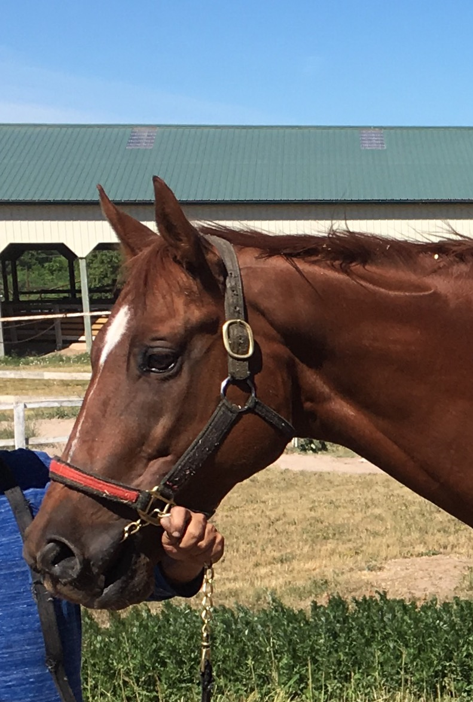
This handsome, solidly built guy with a very kind, gentle eye is ready for a new career. Starship Liberty has excellent bone structure with correct, uphill conformation. We were quite impressed with what a nice mover he is, with good reach and suspension with movement from his shoulder. His trainer reports he is sound with no vices, but he has let them know he just does not want to race anymore. In a race this spring, he refused to leave the starting gate, so now he needs a new job.. This is another opportunity to get a solid, sound, young gelding for a bargain price.
Price $ 1500 negotiable Contact Tito 585-371-0356 (note, he is not the trainer, but is offering to help the trainer place the horse because the trainer speaks limited English).
http://www.equibase.com/profiles/Results.cfm?type=Horse&refno=8947926®istry=T
July 2016 Photos
As always, a pre-purchase veterinary exam is recommended.
Backcountry Boy, 2007, 16.1+, Bay Gelding
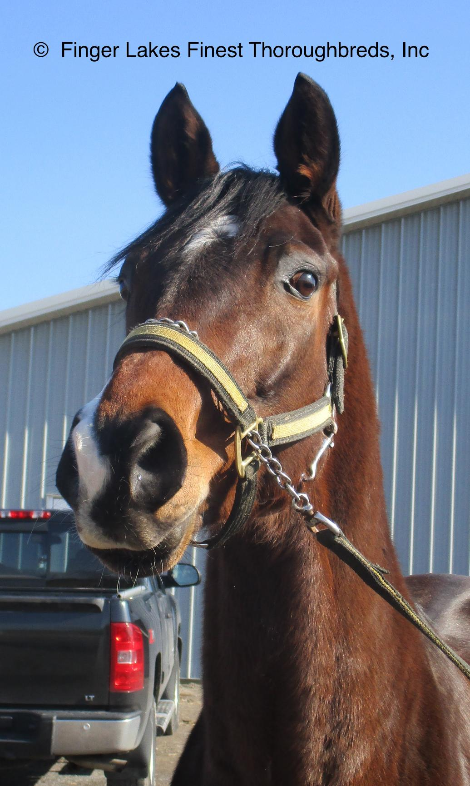
This gorgeous son of Smarty Jones has the looks and personality that scream “Smart!” and had the volunteers swooning from the moment we saw his big, relaxed, reachy, walk out of his stall. His balanced conformation and correct, uphill build make him a fabulous prospect for any discipline, but the movement observed by our volunteers today make us think he could be fabulous in the hunter ring. Again, a sunny day in February made his interview video much more exciting than our typical backside jog videos, but his trainer is sure that with some turnout, this kindhearted gem will flourish to make a perfect sporthorse. His trainer reports he is always a gentleman to handle and has a quiet temperament. We observed his impeccable manners in his stall as he was brushed and doted on before his photo shoot. He has been in their care for quite a few years and report he has never had any soundness issues. They feel he is suited for any upper level discipline. His legs appeared clean and, wow, was he ever a nice mover! Backcountry Boy’s connections are known for their excellent horsemanship and caretaking. They will provide honest information to ensure their gorgeous boy finds the best home possible. No stable vices. There has already been interest in this fancy gelding, so we suggest contacting his trainer quickly if you are looking for a big, sound, fancy gelding.
http://www.equibase.com/profiles/Results.cfm?type=Horse&refno=8063686®istry=T
Asking $1600neg
Contact Chris Progno: 585-303-0527 Text or leave a message for quickest response.
Reading Group, 2007, 15.3+ Bay Gelding
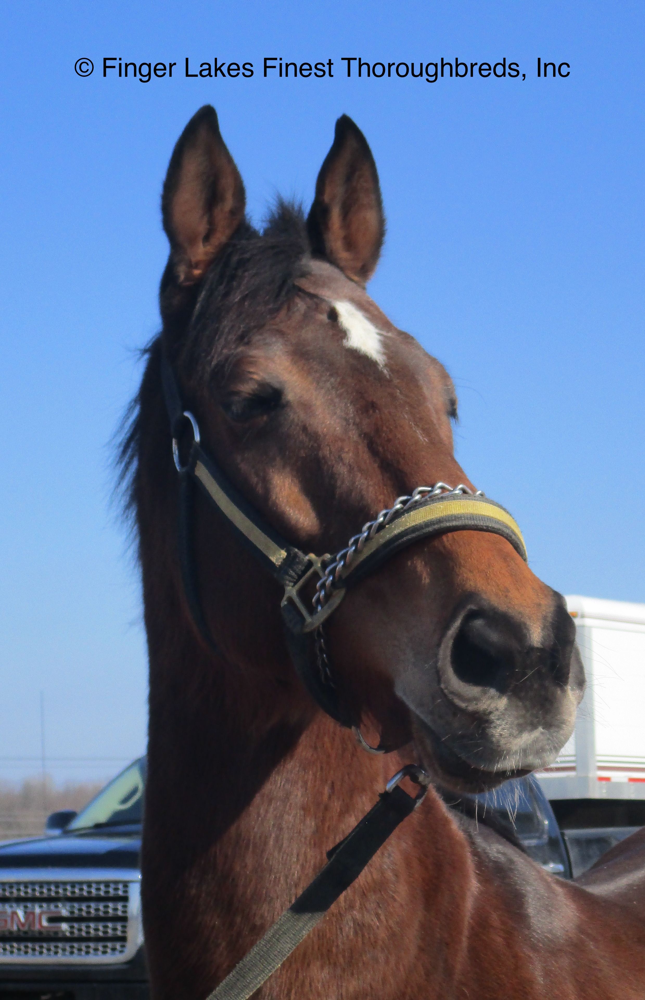
This big-bodied gelding has done his time on the race track and is ready to be let down and retire to a new career. He has been a good race horse-- with 53 starts and career earnings of over $100,000. Reading Group is a durable mount who knows his job. His trainer reported he comes out every day looking forward to working. His pictures do not do his correct conformation justice! Anyone who has spent winters in the Finger Lakes region can tell you that bright blue skies and mild temperatures in February are an exhilarating sight-- and Reading Group agreed. While he was very alert during his meet and greet, he was respectful of his handler, despite the excitement of the day. His trainer reports that he has not yet had the benefits of turnout time off the track, but he will likely settle right into a turnout routine in his next career. Reading Group had a splint removal procedure several years ago and returned to racing sound. Because of this, his trainer would like to see him go somewhere with lower level event/jumper goals. He has been with his current connections, who are known for their great caretaking, for many years. You can be rest assured that they will provide honest answers and information for all interested parties. No stable vices. His sport potential is underscored by his pedigree. He is by Readthefootnotes, from the Smoke Glacken/Two Punch sire line.
http://www.equibase.com/profiles/Results.cfm?type=Horse&refno=8058758®istry=T
Asking $700
Contact Chris Progno: 585-303-0527. Leave a message or text for fastest response.
As always, a pre-purchase veterinary exam is recommended.
Winning Pal 2009 16+ bay gelding
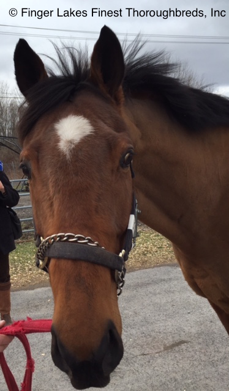
When the on-track connections tell you that they are ready to part with a favorite, it's generally because of a sweet disposition or a can-do heart. Winning Pal is that, and more. He is described as laid-back, kind, and an all-around good citizen. As his handler stood him up for pictures and discussed the reasons for stopping on him early in the season, he happily obliged on a day that was bitterly cold and windy.. Seeing that he was freshly clipped, we worried that he might be eager to get back in the barn but we were told that absolutely nothing fazes this gentle gelding.
We admired his nicely put together, big-barrelled frame and his super clean legs, that, along with his heart, has enabled him to amass a whopping 32 in-the-money finishes out of 40 starts. That's a racehorse! He was claimed last year and claimed back from his current connections for more money than they initially lost him for. That's testament to a good horse, on or off the track.
Between the end of the meet last year and now, Pal has developed two paralyzed flaps. He is getting prednisone and we were informed that it has significantly improved his breathing. He did not make any noise while jogging for us. For that reason he will not be suitable for vigorous activity such as eventing or foxhunting. He'd make a terrific trail or walk/trot mount and could accommodate a larger rider. Activities that potentially place more stress on him would need to be discussed with his on-track veterinarian and/or trainer.
A good home is a must and references will be checked.
Price $500.
Contact Michelle Tasso 585-472-2804
https://www.equibase.com/profiles/Results.cfm?type=Horse&refno=8591729®istry=T
Here Comes Jane, 15.3, 2013, Dark Bay Filly
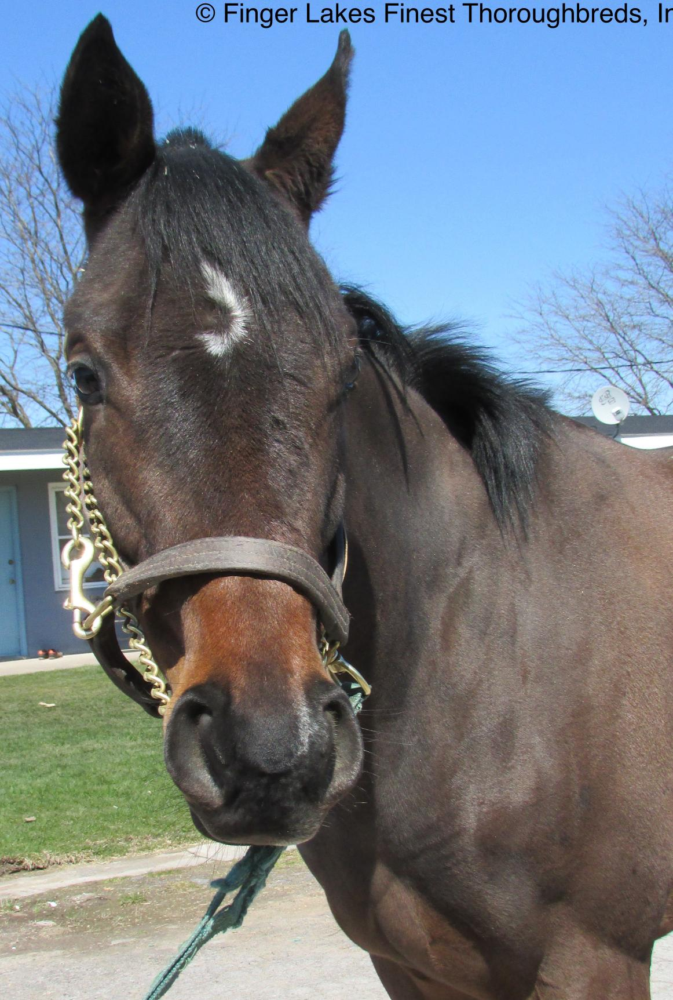
Here is a great opportunity to have a truly spectacular, young filly! Here Comes Jane is currently with a great trainer known for having quality horses. Unfortunately, Jane sustained a knee injury and needs 3-6 months off. The vet reports that after time off , she could be brought back into work and return to any type of riding without restriction. With her young age (DOB April 21, 2016), it’s not likely she would be doing any intense training or jumping until she finished growing, so her knee can heal while the rest of her grows! We admired her correct, conformation. She has a stocky build that will take up the leg of a taller rider. Her trainer reports she has no vices and is sweet to work with. Jane was very quiet during his photo shoot and video, never putting a foot out of place. She showed good reach at the walk without any signs of lameness. The trainer had X-rays taken which would be made available to seriously interested parties. They will also grant permission for the buyer to speak with the vet about her rehab needs.
http://www.equibase.com/profiles/Results.cfm?type=Horse&refno=9505339®istry=T
Price: $500neg Contact Marianne Manning: 585-491-2391
As always, a pre-purchase veterinary examination is recommended.
No More Options, 2012 16.3h bay ridgling
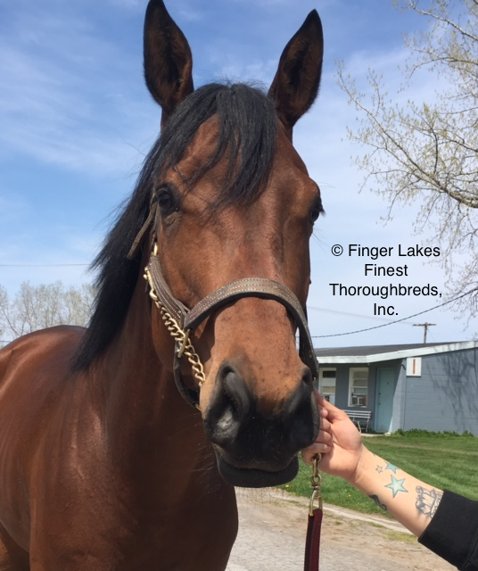
While he may have "no more options" in racing, given that he just wants to slowly gallop along and has not won a race or even hit the board in 17 starts, we see many exciting options for this big, young, sound, clean legged, beautiful, great moving horse in various sport careers. He wowed us with his elegant good looks, balanced excellent conformation, big sloping shoulder, strong hind quarters with good hip angles. And he really wowed us when he jogged; what a gorgeous mover! He displayed light floaty movement with suspension and reach. No More Options was described by the groom and assistant trainer as a very quiet guy, not at all studdish, and "fantastic" to ride -- settling into a steady rhythm and not reacting to what ever is going on around him. They also told us that he is completely sound, and clean legged. The wraps on him are standard practice at this barn -- we arrived for his photo session after morning training, and he had galloped that day, so he was "done up" in wraps. He is described as a very friendly horse, with no vices, and very good to work with. We saw this for ourselves -- when we approached him in his stall, he stuck his head out with ears pricked and a friendly alert demeanor, accepted our head rubs and scritches, and eagerly but politely enjoyed attention. We were also informed that he was good in turn out on the trainer's farm over the winter. His pedigree suggests the same excellent jumping/sport potential that his conformation and movement indicate. He is from the Silver Deputy/Deputy Minister sire line, and by a mare who is sired by Alydar's Derby winning son Strike the Gold. Rahy and Roberto are also close up in his sire side. Although the procedure for gelding a ridgling is more complex and costly than a normal gelding procedure, we see such huge potential for this big gorgeous guy in many new careers that we think it will be worth the investment. He could hold his own amongst the lofty moving warmbloods in the show hunter ring; he could excel in dressage with his balance and beautiful movement. So many options indeed! Price: $2,000 negotiable Contact: Marianne Manning 585-491-2391
Racing record: http://www.equibase.com/profiles/Results.cfm?type=Horse&refno=9337501®istry=T&rbt=TB
Pedigree: http://www.pedigreequery.com/no+more+options
https://youtu.be/3Bp2wcalPSI
As always, a pre-purchase veterinary exam is recommended.
Joshan's Giant, 2011 liver chestnut 15.2h mare
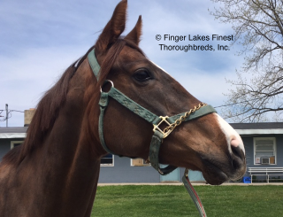
The groom raved about what a kind, wonderful horse this stunning mare is -- and when a horse becomes the favorite of a groom in a big racing stable, you know it is indeed a great horse to be around. "She's a peach," the groom kept saying as we took down Joshan's listing information. We admired the mare's beautiful and solid balanced build and caramel dark coat, with the dapples just about to emerge. Joshan's Giant also showed lovely fluid light movement for her jog video, with a low head carriage that seems ideal for the show hunters or for western pleasure. Joshan's Giant is ready to move on to a new non-racing career, because after hanging out at the farm over the winter (where, we were told, she was great in turn out with other horses), she is letting them know that she just doesn't want to run anymore. She is getting stressed in the paddock before races, although during morning training rides she is fine. An experienced rider is recommended for her, to help her settle and learn her new job. She is described as sound on old osselets, and wonderful to handle and work around on the ground. She has a terrific pedigree for sport and jumping. She is by Giant's Causeway's son Frost Giant, out of a mare by Damascus's son Ogygian. She also has good broodmare potential, since Frost Giant is a leading NY sire, and her dam has produced a stakes winner, and her second dam is a graded stakes winner, and her third dam is also a stakes winner. Because of her balanced build and fluid long stride, Joshan's Giant appears bigger than she is, and we think she will "ride big" -- just like the mighty little horse who finished third at Rolex this year. So do not let her smaller wither height deter you from giving this gorgeous young mare with huge potential a serious look. Price: $2,000 Contact: Marianne Manning 585-491-2391
Race Record: http://www.equibase.com/profiles/Results.cfm?type=Horse&refno=9108713®istry=T
Pedigree: http://www.pedigreequery.com/joshans+giant
As always, a pre-purchase veterinary exam is recommended.
Hampden Fiveone, 2011 chestnut 16.1h gelding: new price!
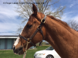
This flashy and friendly grandson of the great Triple Crown winner Affirmed is described by his groom and the assistant trainer as an all around good guy -- great to work with, well mannered to handle, very nice and respectful to ride, friendly and people oriented, very good on the farm in turn out with other horses. He has knee chips, and has raced well with them for a while -- he has had 50% on the board finishes in 29 starts. But recently, they have caught up with him, and the high speed of racing and race training is no longer recommended for him. On the day we photographed him, he had been handwalking for ten days since his last workout on April 30, so he was feeling good. But he jogged politely, and showed nice movement. While jumping careers would not be recommended for him (unless the knee chips could be surgically removed), many new careers involving flat work would be suitable -- pleasure, trails, etc. The assistant trainer says that he is kind and sensible enough to be suitable for a child or young rider under the supervision of a trainer. Please give the handsome and loving young horse a chance at a good new career and post racing life in a loving home. Price: $500 negotiable Contact: Marianne Manning 585- 491-2391
Race Record: http://www.equibase.com/profiles/Results.cfm?type=Horse&refno=9119545®istry=T
Line Move, 2012, 16.1 hand, Chestnut Gelding.
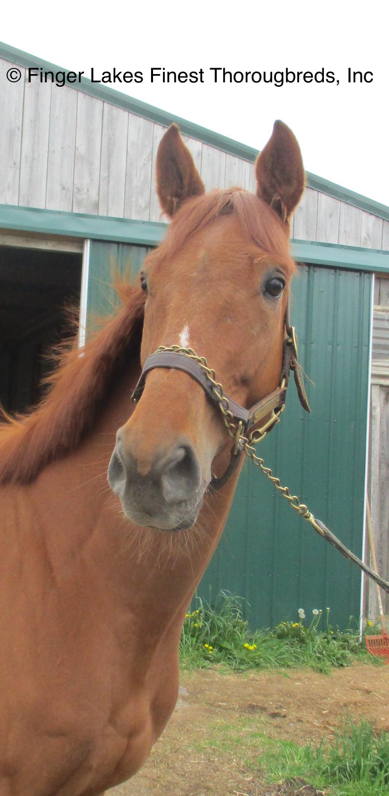
Located at a farm very close to the Finger Lakes Race Track in Farmington, NY (near Rochester, NY). This big, correct, beautiful gelding has been on the sidelines after his last race with a hairline fracture of his cannon bone. When we looked at his pedigree, we noted that he is the second horse we listed today sired by Line of David, and both are big, correct chestnut boys. Line Move will need to be rehabbed for about six months and then, according to his vet, he will be fine for any discipline. His x-rays are available for viewing and his connections can provide any information you need..
Outside of the barn, he had every excuse to be on his toes, but he did his best to be a gentleman, giving us ample time to admire his deep chest and powerful hind-end. His connections report that he is a friendly and happy horse with a lot of athleticism. Even while being stall-confined, he has been a good patient and enjoys his peppermints and attention.Once his hairline fracture heals, we have little doubt that he will regain that athleticism and be a wonderful partner in the discipline of your choice. He has no vices and clean, tight, ankles and knees.
Line Move has a great pedigree for jumping/sport – she is by a son of Cryptoclearance who is by Fappiano, and her dam is by Halo, who is from the Hail to Reason/Turn-to line
Price: $850 neg. to good home with references
Contact Jamie Boldt 585-943-4298
As always, a pre-purchase veterinary exam is recommended.
Talkn Bout Noon, 2011, 16.1h liver chestnut mare
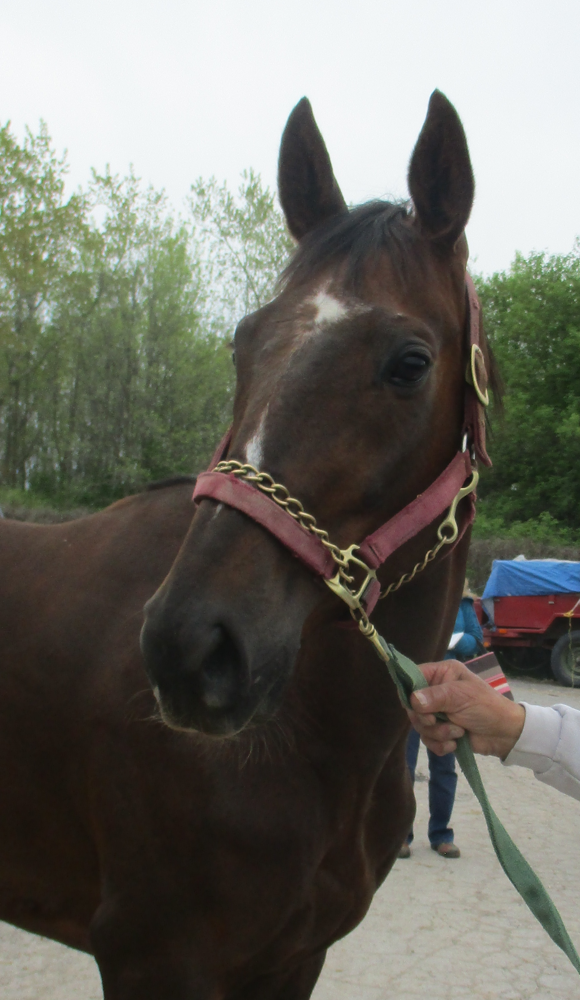
Update: Nov. 5, 2016
This liver chestnut beauty is sound, very kind and quiet, and just not a race horse -- but she sure can be a lovely show horse or pleasure horse. After 18 races, with no wins, it is obvious that racing is not her game. She is as sweet and pretty as they come, with clean legs, a balanced build with a good shoulder, and cute balanced movement at the jog that suggests she will do well in the local hunter ring. Her owner, who also grooms her, loves her dearly and takes exquisite care of her, and he wants to find her a great home where she will be appreciated. She is described as a very good girl, with no vices, friendly and easy to work with. She was very polite for her photo session and very quiet for her jog video. She has unlimited potential for any discipline. She is by Noonmark, from the Fappiano sire line, out of a mare from the Caro sire line, so there is jumping aptitude in her pedigree.
Price $1,000 negotiable Contact Sugar Rohena 585-412-3678 (contact person for owner, to assist with language barrier)This liver chestnut beauty is sound, very kind and quiet, and just not a race horse -- but she sure can be a lovely show horse or pleasure horse. After 18 races, with no wins, it is obvious that racing is not her game. She is as sweet and pretty as they come, with clean legs, a balanced build with a good shoulder, and cute balanced movement at the jog that suggests she will do well in the local hunter ring. Her owner, who also grooms her, loves her dearly and takes exquisite care of her, and he wants to find her a great home where she will be appreciated. She is described as a very good girl, with no vices, friendly and easy to work with. She was very polite for her photo session and very quiet for her jog video. She has unlimited potential for any discipline. She is by Noonmark, from the Fappiano sire line, out of a mare from the Caro sire line, so there is jumping aptitude in her pedigree.
Video from November 2016:
Video from June 2016:
As always, a pre-purchase veterinary exam is recommended
Betty’s Boy, 2011, 15.2, Grey/Roan Gelding
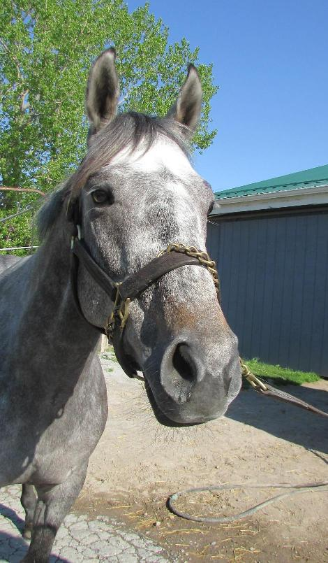
This snuggly guy has done decently in his racing career, hitting the board in 6 of his 20 starts, but his trainer is ready to see him successful in a new career. His trainer has taken excellent care of him, which is evident in his coat and weight, but she has a new busy job off the track which is forcing a reduction in the herd size. He is described as “in your pocket” and snuggly, and he certainly demonstrated that demeanor for our volunteer on the backside this evening. He wanted to climb right into our pockets-and we gladly would have let him! He is extremely quiet and even spent some of his down time this past winter on a farm in the Carolinas where he was trail ridden for pleasure. His petite stature and laid back personality don’t limit his potential! He has very correct conformation and looks as if he will be quite stocky after filling out. His legs are clean. Betty’s Boy is a very nice mover who is said to already know how to move off a rider’s leg and go into a frame! He showed beautiful reach and suspension in his ground covering trot. He will turn heads in any new discipline! His trainer reports he has no bad habits or vices. She also does his galloping and reports he is always well behaved, sensible, and businesslike. We think this gorgeous cuddlebug will go quickly, so we would suggest contacting his trainer Molly quickly.
Price: $2000neg
Contact: Molly Hilderbrant 585-259-6351
http://www.equibase.com/profiles/Results.cfm?type=Horse&refno=9065895®istry=T&rbt=TB
As always, a veterinary pre-purchase exam is recommended.
JENS MIRACLE, 2011 16.1 h chestnut mare: new price
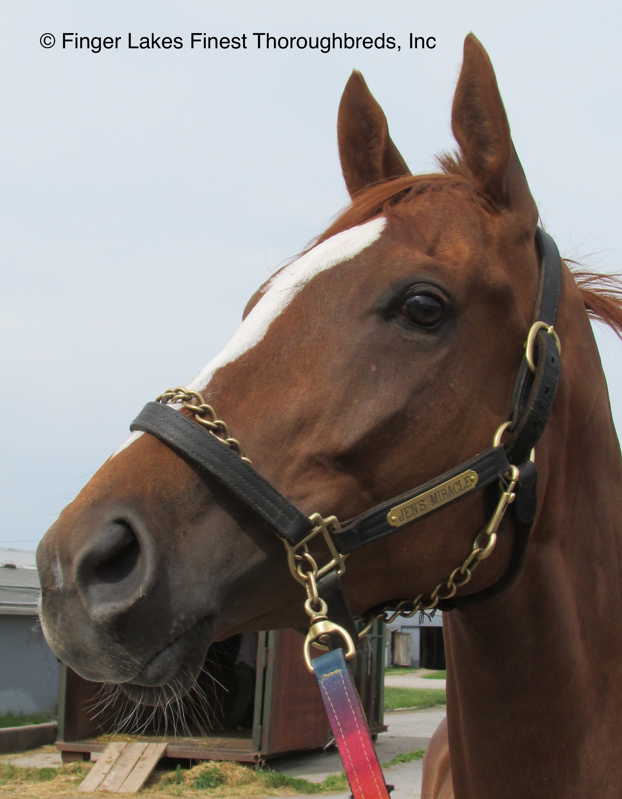
If you like the "look of eagles", this pretty granddaughter of A.P. Indy had a lot of that going on during her interview! She was very alert, probably concentrating on the horses she could see galloping on the training track, but she was polite and kept all four on the floor. She also was kept on a loose lead and was very respectful of her handler. Her trainer says she is a very good girl, great to handle. She was certainly affectionate and curious with us. We loved her athletic build with a big shoulder and engine topped by a pretty head and perfect blaze. As we watched her trot for her video we noticed that she tracked up nicely at the walk and had a lovely, springy trot with great flowing reach. We have a hunch that she is an athletic mare and her race record (50% in the money finishes out of 33 lifetime starts) would suggest that she is not only athletic but has a big heart as well. Alas, Jen isn't feeling the racetrack this year, but she certainly has potential for just about any discipline away from racing. We can see her excelling in eventing, dressage, or the hunter ring. Don't hesitate to call about this shiny copper beauty!
Contact David Rivera 315-719-5641
Price $1000 negotiable
http://www.equibase.com/profiles/Results.cfm?type=Horse&refno=9099143®istry=T
As always, a pre-purchase veterinary exam is recommended.
My Little Disco 2011 16 h bay gelding
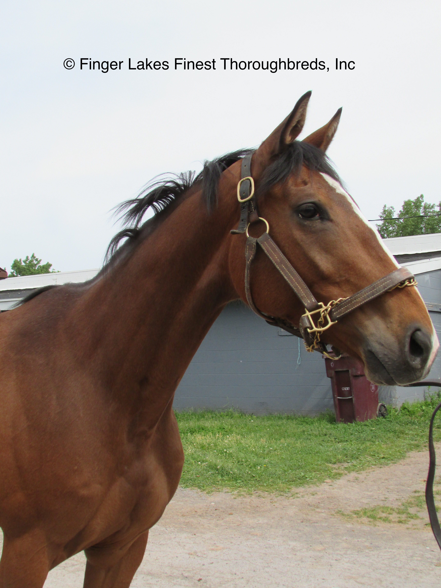
Oooh la la, here's a flashy son of Disco Rico who has been very lightly raced and well cared for by the connections who bred and raised him. Of interest, he was orphaned as a foal so had a lot of handling from a young age and he is just as sweet as they come, which you can see in his soft, kind eye. At the time of his interview he had not trained in a week and was quiet and polite in spite of his vacation from the track.While we ogled him and stood him up for pictures, he was curious and attentive, acting very much like an "in your pocket" boy. He has a set osselet in his left front that does not affect his soundness (his owner/breeder gave him time off at the farm where he was born). We admired his balanced conformation and all-around flashy good looks. Lucky will be the person who scoops him up and let's him dance right into their heart.
Contact Rachel Sells 585-748-0983
Price $1000 neg. to excellent home with references
http://www.equibase.com/profiles/Results.cfm?type=Horse&refno=9133067®istry=T
As always, a pre-purchase veterinary exam is recommended.
SIRACHA 2009 16 H GR/RO MARE
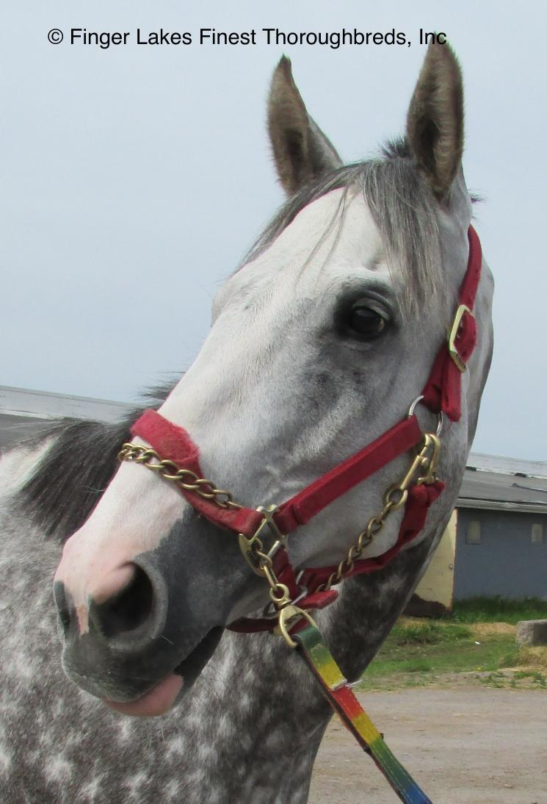
This lovely lass stepped out of her barn on a loose lead and pretty much indulged us by standing quietly while we took photos from every angle and exclaimed over her striking, dappled coat. She has been a very useful racehorse with almost 50% in the money finishes in her 51 lifetime starts. Her last start was on 5/26/16 where she finished seventh and, rather than asking her to do more than she already has, her trainer is calling it a day.
She is described as quiet, sweet (we saw that!) and sound.
Contact David Rivera 315-719-5641
Price $2500
http://www.equibase.com/profiles/Results.cfm?type=Horse&refno=8685841®istry=T
As always, a pre-purchase veterinary exam is recommended.
Chrissy Raz, 2009, 16h, Bay Mare
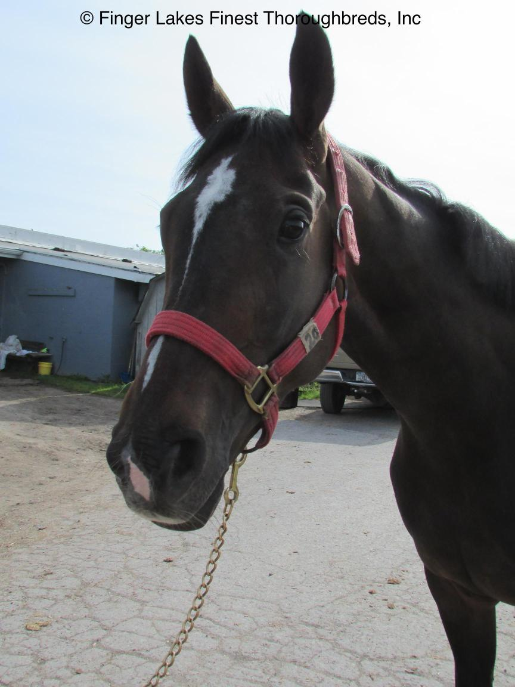
This flashy girl has been a successful race mare, earning over $113,000 in her 9 wins, 10 seconds, and 7 thirds. Her trainer couldn’t find enough positive things to say about her. She appeared to be about as sweet as they come, not even needing a chain over her nose. Chrissy stood quietly and seemed to bask in the sun (and the attention) during her photo opportunity. Her trainer reports her demeanor today is consistent with how she always acts-even in full race training. She reports Chrissy is sound and clean legged. We saw gorgeous conformation that combined with her flashy coat would stand out in the hunter ring. She has no vices and was measured with a stick to a true 16h. Her trainer will screen inquiries to ensure a good home. http://www.equibase.com/profiles/Results.cfm?type=Horse&refno=8581732®istry=T Price: $850 Contact: Jamie Boldt 585-943-4298
As always, a pre-purchase veterinary exam is recommended.
Bombadier, 2013 17h bay gelding
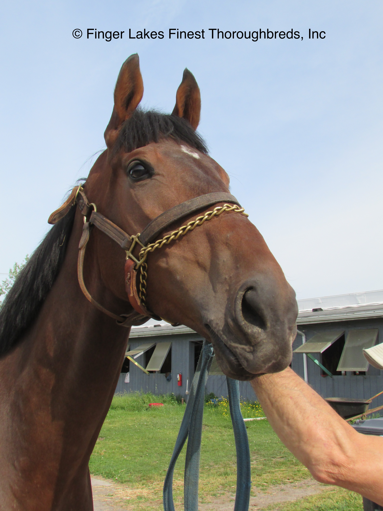
This $65,000 yearling by Unbridled’s Song should be nicknamed “legs”. He has legs that seem to go on for days! For everyone looking for the elusive young, big (huge), handsome, gelding wish a great personality-no need to look further. His trainer reports him as kind and sweet and a big lover of attention. He has a sweet baby face that we found quite cute. At just 3 years old, this boy will continue to grow in both height and width. You may not find one better suited for those very tall riders! His trainer reports he is just not showing racing promise. They have tried running him both long and short with limited success. Racing’s loss is every other discipline’s gain! His trainer reports that he has no vices. http://www.equibase.com/profiles/Results.cfm?type=Horse&refno=9490625®istry=T&rbt=TB Price: $3500neg Contact: Donna Bireta 585-281-3058
As always, a pre-purchase veterinary exam is recommended.
Power Dreams, 2008, 15.2, Bay (roan) Gelding
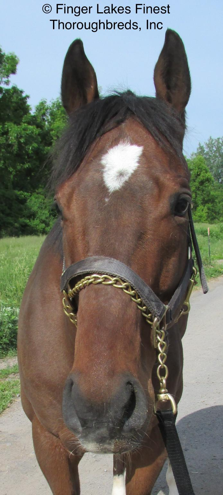
It doesn’t get cuter than this. All the volunteers fell head over heels in love with Power Dreams this morning. On top of being totally adorable (and flashy with his gorgeous roaning), he was super cuddly and quiet. He looked to be dreaming of a future career as a children’s horse, in whatever discipline that may be. He would blend in with the QHs in the western world with his stocky build. He showed nice movement to match his adorable personality. His trainer states that he is retiring sound after a successful career earning over $139,000 in his 47 starts. Whoever scoops this cutie will be very lucky! We look forward to following his second career-which is sure to be a successful one! http://www.equibase.com/profiles/Results.cfm?type=Horse&refno=8276437®istry=T Price: $1500neg Contact: Sugar Rohena: 585-412-3678
As always, a pre-purchase veterinary exam is recommended.
Read Me The Blues 2012 15.3 h chestnut filly: retained for racing
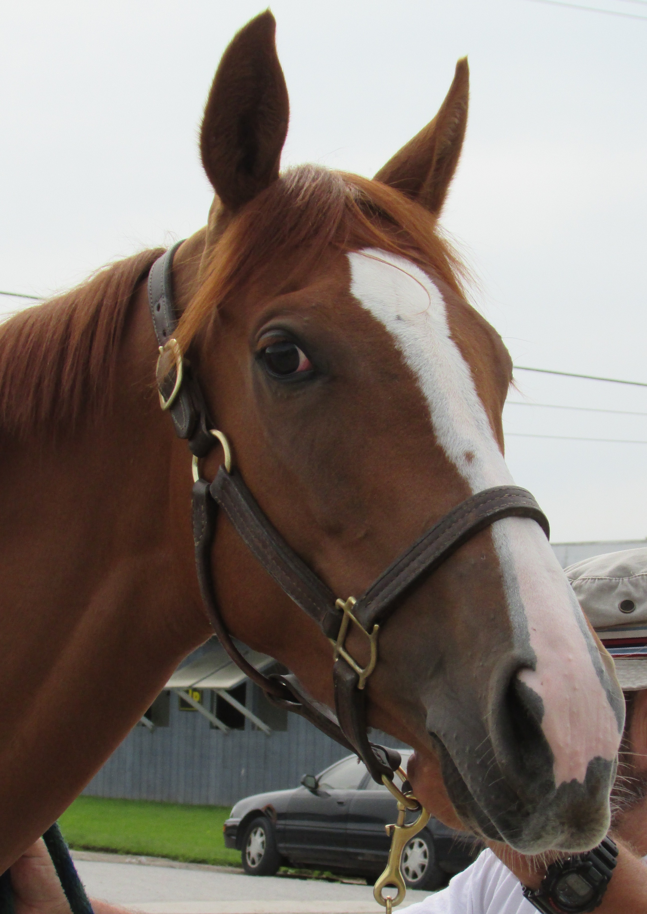
We were introduced to this youngster last year when we listed her half sister. At the time she was very lightly raced and would break her maiden and win her next race in the fall of 2015 in sprint races. As competition gets tougher at this racetrack, her trainer is reading the writing on the wall and electing to move her on. She is reported to be nice to work with, loves to be groomed and has good ground manners. Although she ran in the 7th race the day before, she was anything but tired and presented a challenge to photograph as standing still was not on her agenda that morning! At the jog she was feeling very "up" and demonstrated lovely lateral movement which wasn't even asked for!. While we think she has potential for many disciplines, she should attract polo enthusiasts with her stature, catlike moves and speed. Call or make a visit to the track to see this pretty girl and feel free to pick the brains of the capable horsemen who care for her.
Contact Manny Gomez 787-565-6042
Price $1500
http://www.equibase.com/profiles/Results.cfm?type=Horse&refno=9328669®istry=T
As always, a pre-purchase veterinary exam is recommended.
WHATS UP BIG GUY 2011 16.2 H GR/RO GELDING
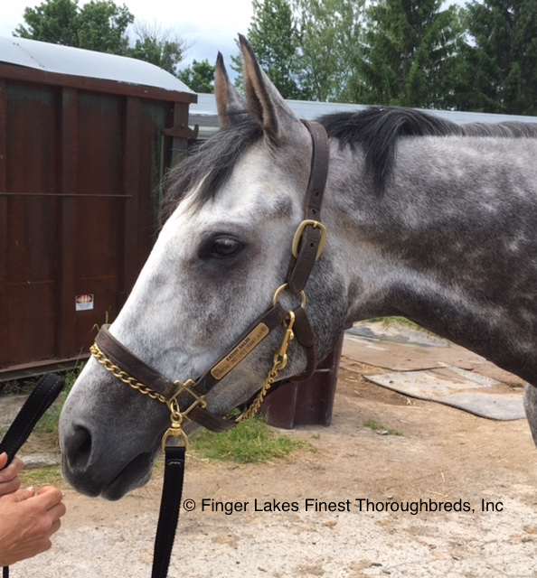
We have no doubt that this beefy, gorgeous gelding will command attention, maybe with more shares and comments than we have ever seen, and for good reason. It's not because he is a coveted gray, but because he has excellent connlections who really "know" their horses and their potential, develop rapport with their charges and take excellent care of them. Walking down their shedrow is like being a kid in a candy store: each stall has a shiny, muscled, full-bodied inhabitant. They are offering their handsome boy reluctantly because they truly adore him, but they have an active breeding and racing operation and can't justify keeping a young, sound, talented horse as a pet.
So, other than the obvious fact that he is a big, beautiful gray horse, he also has superb sporthorse breeding and movement. Macho Uno get are great jumpers and performance horses at high levels of competition and this guy has all the hallmarks of an exciting sporthorse off the track. He has been lightly raced with 17 lifetime starts and 4 in the money finishes. He was a $70,000 yearling purchase and perhaps could have lit up the tote board more than he has but, according to his trainer, he dislikes going to the track. Done deal. He's communicating and they are listening. He is described as sound and we noted that he has beautiful, well-balanced conformation and a jog that floats with push from the shoulder (he ran 2 days ago). He has been turned out on the farm and is a sweetheart with other horses. If he has a ding, it is that he is food aggressive and wants to eat his meals alone and in peace! How cool would it be to walk into the barn everyday and see this beauty with the words "what's up, big guy?"
Contact Stacy Torelli 585-506-7663
Price $5000
http://www.equibase.com/profiles/Results.cfm?type=Horse&refno=9118315®istry=T
As always, a pre-purchase veterinary exam is recommended.
LUCKY FOURSOME 2012 16.2 h dk bay gelding
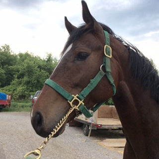
Forrrrrrrre! Hop in the golf cart and make a beeline to Finger Lakes to see this flashy, big, well-bred son of Lookin at Lucky and imagine what he could blossom into. Walking into the barn at the conclusion of his photo session the group agreed that he could be one of those proverbial diamonds in the rough. He certainly was bred to be a good racehorse and, indeed, sold for $65,000 as a yearling. His dam was a multiple Stakes winner but this fellow didn't get his parents' racing chops. As good luck would have it, Lucky is available for your consideration now as your next project horse for the hunter ring or any discipline that would showcase his flashy good looks and cute movement. On the morning of his interview, the wind was blowing at a pretty good clip with strong gusts so there was some concern that he might be a little froggy but he showed his class by standing quietly and doing everything we asked of him. At the jog he had some playful moments with some jumping and hopping but we were able to see some really nice reach and suspension when he put his head down and went in a collected frame. Notice the cute roaning in his tail and the cute face with a kind eye. For the right person, this guy could well be a hole in one!
Price: $1500
Contact Lou Sirianni 585-766-5901
http://www.equibase.com/profiles/Results.cfm?type=Horse&refno=9266643®istry=T
As always, a pre-purchase veterinary exam is recommended.
Spango, 2011, 16.2 Chestnut gelding
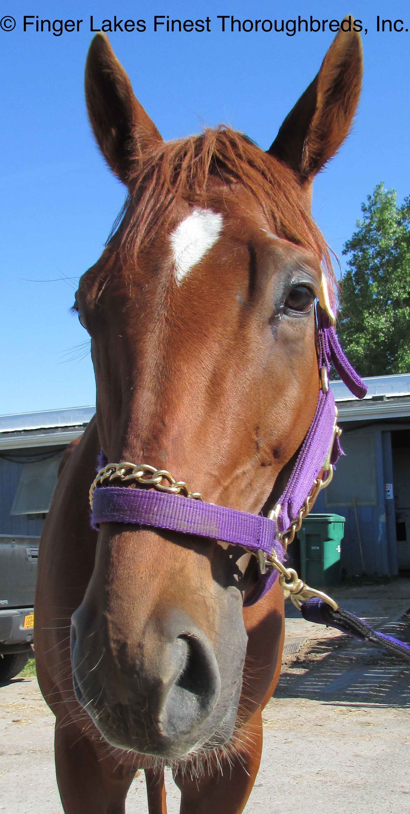
Spango has had a successful career earning over $111,000 in 33 starts. However, he is letting his connections know it is time for a new career. This beautiful boy is described as “extremely sensible”. His trainer reports he turns out well with other horses, is used to dogs, kids, and 4-wheelers at the farm. He is very quiet and his trainer has even considered turning him into a pony horse! In fact, he is so quiet while standing for the farrier that her very young daughter holds him while being shod! Spagno developed osselets while racing over the winter and would benefit from some down time before starting his new career. This big boy is a great option for those taller riders on a budget! He has no vices. Classy big geldings like Spango typically sell quickly (especially at his bargain price!) so we suggest calling quickly. http://www.equibase.com/profiles/Results.cfm?type=Horse&refno=9113008®istry=T&rbt=TB Price: $1000neg Contact: Amber Cobb 518-316-0089
As always, a pre-purchase veterinary exam is recommended.
Butkennyrun, 2011, 16.3, Chestnut gelding
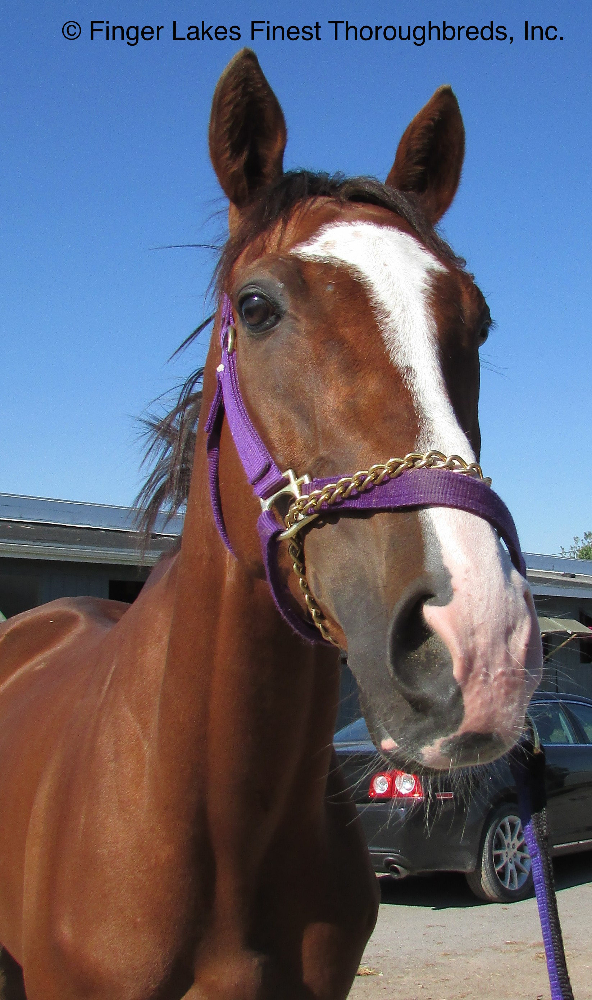
Chrome alert! You are sure to stand out in any ring on this big boy!! Whoever is lucky enough to end up with this gorgeous boy will need to keep our volunteers updated on his career, because we are in love! Butkennyrun is showing his connections that he just doesn’t have interest in racing anymore. He is retiring sound and clean legged (with a few very small, superficial cuts from his last race that are healing). His trainer reports that he loves being at the farm and fills out quickly. He turns out well in a mixed herd of colts, fillies, geldings. She also reports that Kenny is “broke to pretty much everything” including dogs, small children, and 4-wheelers. He is always classy and nice to work with (which is what we observed today too). Despite being a bit pokey for his jog video, once trotting he showed beautiful movement. We could picture him as a hunter with his floaty, flat kneed trot, but with his uphill build and big step, he would be successful in any sporting career. His sire Stonesider is a son of Giant’s Causeway, and we have placed several Stonesider offspring into new careers as eventers, show hunters, and dressage careers. They have all been good movers with good brains, just like Butkennyrun! Classy geldings of his size and stature typically sell quickly, so we would suggest calling quickly. He has no vices. http://www.equibase.com/profiles/Results.cfm?type=Horse&refno=9083788®istry=T Price: $3500neg Contact: Amber Cobb 518-316-0089
As always, a pre-purchase veterinary exam is recommended.
Broadway Market, 2013, 16h, Chestnut filly: new price
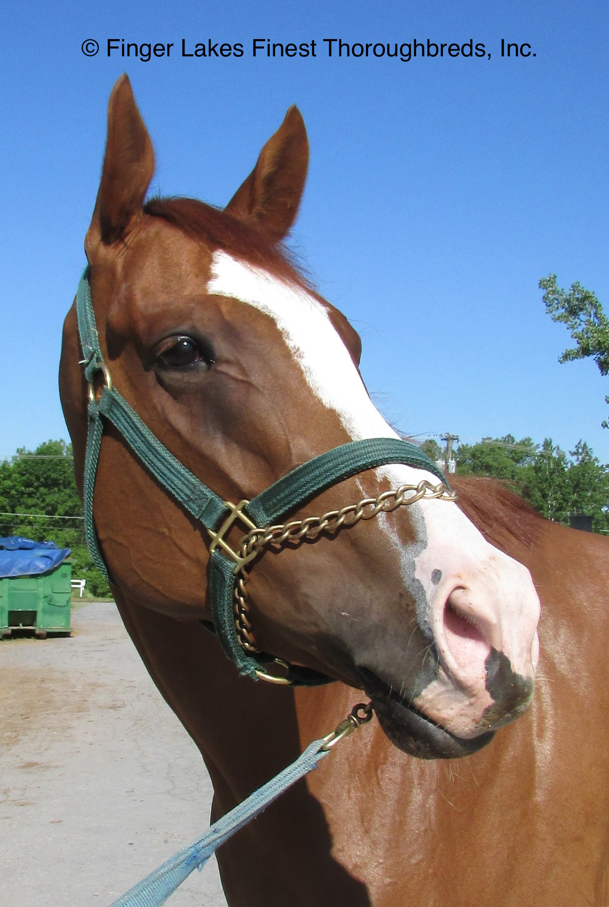
Update July 2: Broadway Market recently got a puncture wound on her leg, and it is being treated with antibiotics and wrapped, and she is recovering well and will eventually be fine. But she now needs to find a good new home as soon as possible, so her price has dropped significantly to a good home.
Another flashy girl that will help you stand out in any ring! Broadway Market is very lightly raced, with only 1 start, and is just too slow to continue training. She is a big stocky girl, and at only 3 years old, she will continue to grow and fill out. She is a great option for a taller rider looking for a young, lightly raced girl to bring along. She was very quiet during her meet and greet today, which her connections report is very typical. They state she is always kind to work with, despite her young age. Her legs are nice and clean. She has no vices. http://www.equibase.com/profiles/Results.cfm?type=Horse&refno=9466099®istry=T
Price: $500 negotiable Contact: Marianne Manning 585-491- 2391
As always, a pre-purchase veterinary exam is recommended.
Hi Ho Silverman, 2008, 16h, Bay Gelding
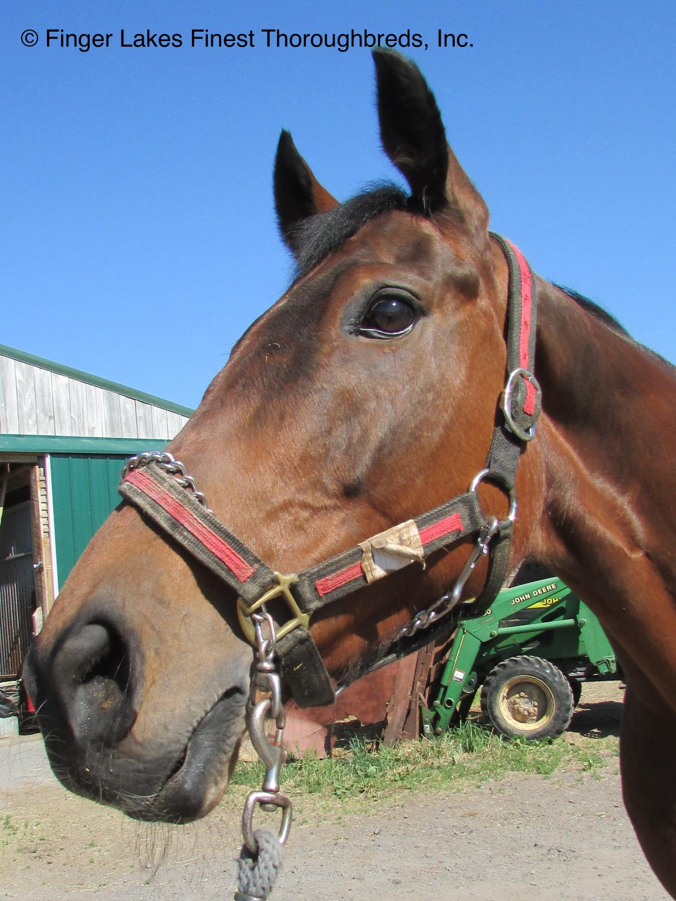
The connections of this gorgeous gelding couldn’t find enough nice things to say about him. Our volunteers instantly fell in love too! This lovely boy has earned over $120,000 in his 59 starts, but he is starting to lose interest in racing and is ready for a new career. He has remained sound and clean legged through his career, a testament to his durability and big heart. He has been a barn favorite for many years now and is always dependable, mellow, quiet, and never creates any “drama”. Despite being in for a few days when took his pictures were taken, he was a perfect gentleman. We saw nice movement and know he will be an excellent sport horse in many disciplines. Hi Ho Silverman is quite stocky with correct conformation. He will fill out a taller rider’s leg well with his big barrel. He has no vices. This fancy boy is bargain priced, so we would suggest calling quickly if you are interested in him. http://www.equibase.com/profiles/Results.cfm?type=Horse&refno=8295825®istry=T Price: $850 Contact: Jamie Boldt 585-943-4298
As always, a pre-purchase veterinary exam is recommended.
Me Me Me, 2013, 15.3+ Dark Bay filly
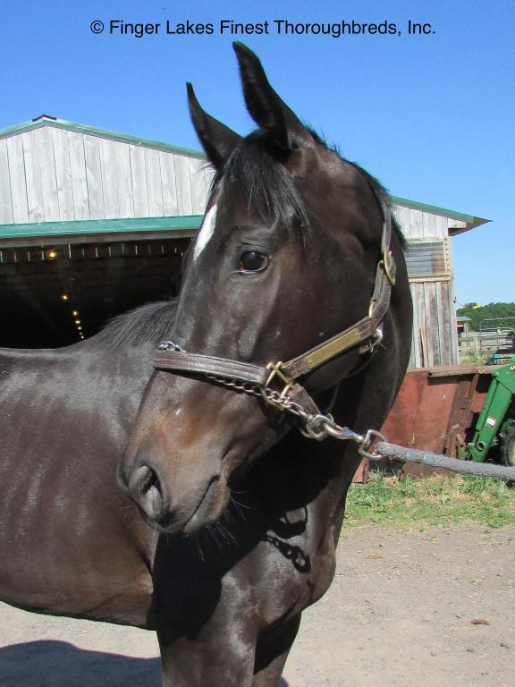
This very lightly raced filly is a blank slate! After only a handful of races, she is letting her connections know she is just not into the racing thing and is not showing enough promise to continue training. She is retiring sound and clean legged. Her trainer states that she has a “sweet and a sassy side”. The farm that wintered her reported they never saw a sassy side-she was all sweet all the time! The farm reported she really bonds to her handler and would love to go to a home with lots of spoiling and pampering. They report she is good to work around and has no vices. At only 3 years old, she will likely finish well over 16 hands. She is already quite big bodied, but once she fills out, she will be stunning! She is really bargain priced! http://www.equibase.com/profiles/Results.cfm?type=Horse&refno=9552403®istry=T&rbt=TB Price: $850 Contact: Jamie Boldt 585-943-4298
As always, a pre-purchase veterinary exam is recommended.
Around Away Girl , 2013 16.1+ dark bay filly
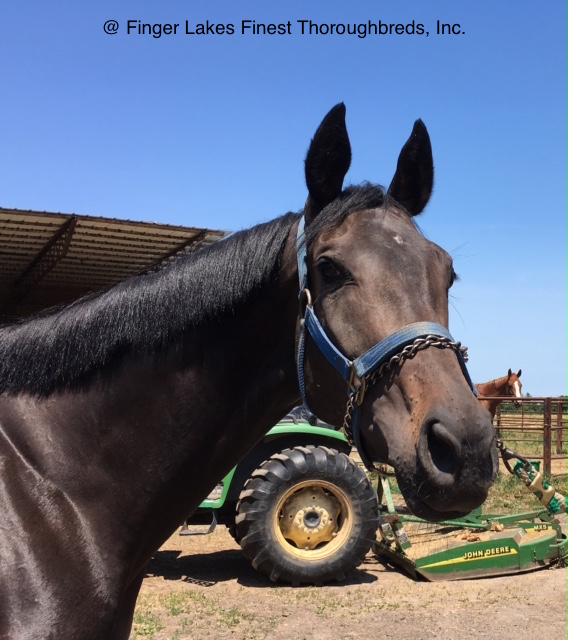
Located at a farm near the Finger Lakes Race Track in Farmington, NY (near Rochester, NY). This gorgeous almost black beauty oozes elegance and athletic potential. She posed like a model, as if to say "look at what a show horse I can become!" She is lightly raced, and just not showing enough aptitude to continue with a racing career. She is described as completely sound and clean legged with no vices. She showed off lovely light movement. Her trainer says she likes to bond with her person, can have a sensitive mouth, and will need to go to an experienced rider/trainer and build up trust. She is described as very smart and a quick learner. She is located at a farm very close to the Finger Lakes Race Track, and the woman at the farm who is caring for her there and showed her to us says that while she has been there she has been very good to handle. She certainly was perfectly behaved for her jog video, despite a stallion turned out next to where she was asked to trot. Around Away Girl never turned a hair and did just what she was asked. We think this big and still growing elegant filly has unlimited potential for a sporting career if she goes to a home with good training and OTTB experience, and could turn out to be one of the bargains of this season. Her pedigree displays great promise for sporting disciplines; she is by Noonmark, who is by Unbridled's Song, from the Fappiano sire line, and her dam is by Silver Deputy, from the Deputy Minister sire line.
Price: $850 negotiable Contact: Jamie Boldt 585-943-4298
As always, a pre-purchase veterinary exam is recommended.
Rumplesteelskin, 2013 16.2h grey gelding
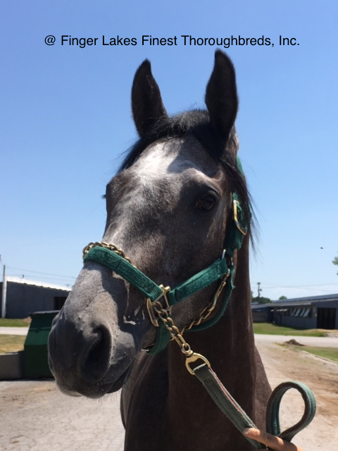
Big young gorgeous grey alert! This son of Alphabet Soup has a great sport horse pedigree, and after only 9 races with no success, he is letting his connections know that he wants a career other than race horse. But what unlimited prospects for a new career! The groom who showed him to us said that Rumplesteelskin is a very good boy, sweet, friendly, quiet, sound and clean legged. We saw all of that as he was just hanging out in the sun, looking for treats. Alphabet Soup offspring are known for maturing late and growing through their 5 or 6 year old years, so we think Rumplestseelskin has a lot of growing into his frame and filling out to do. He is already a big boy, and will certainly be bigger once he finishes growing. Give him the maturation time he needs, and we think you will have a fabulous horse!
Price: $4000 negotiable
Contact: Marianne Manning 585-491-2391
Race Record and pedigree: http://www.equibase.com/profiles/Results.cfm?type=Horse&refno=9585649®istry=T
As always, a pre-purchase veterinary exam is recommended.
Political Lady, 2010 15.1 h bay mare
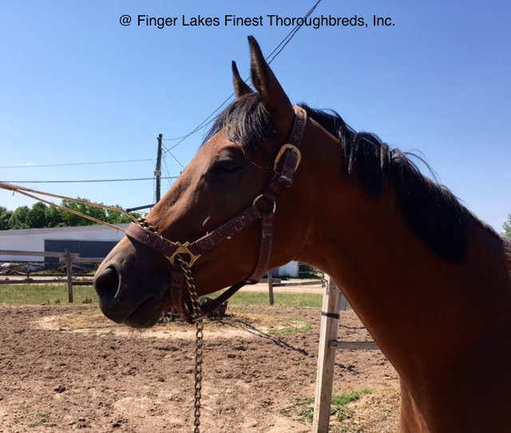
This oh so pretty and oh so sweet girl with her refined Arab-like head is a barn favorite, and we can see why as we watched the trainer and his son take turns cuddling with her. The trainer says she is very sound, very sweet and well behaved, very nice to ride, and he thought that with her temperament, cuddle bug personality, and smaller stature, she would love to be the pampered pet of a kid or smaller adult. Political Lady has been a good race horse, with 5 wins, but that means this year she must face tougher race conditions, and she is not as competitive. So they want to move her on to a great new home. Wouldn't you love to see this pretty head greeting you and looking for cuddles each day as you come into your barn?
Price: $700 negotiable
Contact: Jose Cabrera 315-521-3920
Race Record and Pedigree: http://www.equibase.com/profiles/Results.cfm?type=Horse&refno=8933733®istry=T&rbt=TB
As always, a pre-purchase veterinary exam is recommended.Approval, 2011 16h bay mare
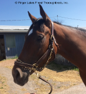
This very pretty girl certainly got our approval! Approval has been a good consistent race mare with lots of heart and try and 5 wins including one this year, but she came out of her last race on June 20 (just 5 days before our photo session), a bit sore, so her connections have decided it is time to find her a new career in a good non-racing home. The trainer told us that Approval is a very good and quiet horse to handle and work with, and was always previously sound. We were told that she had just a bit of puffiness and heat in an ankle after her recent race, but it is improving with each day... on the day we photographed her and saw her jog, she was not on any bute, and she was just ever so slightly off at the jog, but showed nice movement. They think it is likely to be a temporary soft tissue issue that should resolve with time. Approval is a true bargain to the right home, and references will be required. Please take a chance on giving this lovely kind eyed mare her chance to heal and then go on to a new career. We think you will be richly rewarded.
Price: $500 negotiable to excellent home with references
Contact: Rachel Sells 585-748-0983
Race Record and pedigree: http://www.equibase.com/profiles/Results.cfm?type=Horse&refno=9191084®istry=T&rbt=TB
As always, a pre-purchase veterinary exam is recommended.
Sassy Talker, 2012 15.3h bay filly
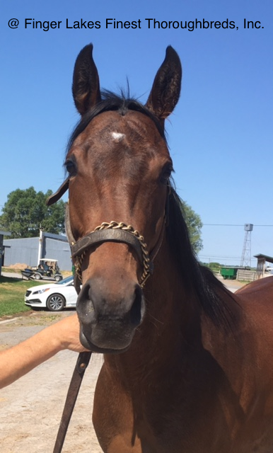
This gorgeous moving and still growing homebred girl is unraced and a clean slate for the discipline of your choice. She is a daughter of Alphabet Soup, out of a mare from the Fappiano line, so she has a pedigree much coveted by eventers and other jumping disciplines (she is Gilded Feather's half sister). Her owner/trainer/breeder says she has a good mind, is very sound and brave, loves to run fast, is good around other horses and in close quarters, so he thinks she would make a fantastic polo horse. With her movement and pedigree, we can also see her excelling in dressage or eventing. Alphabet Soup tends to produce late maturing horses who do not finish growing until 6, so she may well wind up a bit over 16h. Although she is showing speed in training, family health challenges require her owners to downsize, so she is bargain priced to find a great home quickly. A very good home is essential -- she comes from the best of connections who care greatly about where their horses wind up. Like her younger brother Gilded Feather, we expect this fabulously moving sound young filly to go fast, so please do not hesitate to call.
Price: $800 negotiable
Contact: Bob Ubbink 585-738-3159
Pedigree and race record: http://www.equibase.com/profiles/Results.cfm?type=Horse&refno=9332017®istry=T&rbt=TB
As always, a pre-purchase veterinary exam is recommended.Plime Blank, 2010 16.2h+ chestnut gelding
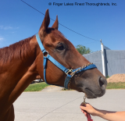
This beautiful big guy with lovely light show hunter type movement has been a good racehorse, with 6 wins and 20 in the money finishes in his 43 race career. He is now ready to move on to a new career because last September, he bowed a tendon, and although it was fully rehabbed and he is sound, he is not racing as well this year as in the past. His trainer says he is a really good boy, great to work with, always a gentleman, and he is good in turn out, either with geldings or mares. As Plime Blank hung out with us in the sun, we admired his gleaming shiny coat, beautiful head, and well proportioned conformation. And when he trotted for his video, we were delighted to see beautiful, light, flowing movement. Plime Blank races in a bar shoe, because earlier in his career he hurt a coffin bone. The trainer says that with good farrier management it should not bother him just as it has not hampered his racing success. But lower height show hunters or dressage -- or pleasure of course -- might be the best career options for him, rather than cross country or higher jumping.
Price: $1200 negotiable
Contact: Michelle Tasso 585-472-2804
As always, a pre-purchase veterinary exam is recommend.
Laker Pride, 2011 16h chestnut gelding
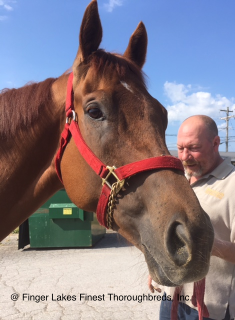
Laker Pride is a sweet and handsome peppermint mooch with a great heart and a great temperament. His handler and his trainer raved about what a good and kind horse he is, great to work with, and they think he could be a kid's horse with retraining. Laker has and old chip in the upper joint in his left knee, and he has raced with it. The trainer said that because of the chip's location, it could be surgically removed and he would have no limitations for a new discipline. Even without chip removal surgery, there are many things he can do with good maintenance -- all but upper level high impact activities. Laker is currently barefoot, and has not been put back into race training this year only because his trainer has her own physical issues that limit her time and riding, and require her to downsize. We admired Laker's strong shoulder and hind end, and enjoyed hanging out with him in the sun as he munched on peppermints and grass. The trainer's assistant loves Laker so much he wished he could give him to his daughter to ride, but she is just out of college and busy establishing her career. But this wish to keep Laker in the family is a great endorsement, so please consider adding him to your family!
Price: $700 negotiable
Contact: Jackie Stauffer 585-857-1413
Race Record and pedigree: http://www.equibase.com/profiles/Results.cfm?type=Horse&refno=9175922®istry=T
As always, a pre-purchase veterinary exam is recommended.
Be Brief, 2010 16.1h+ dark bay (black) gelding
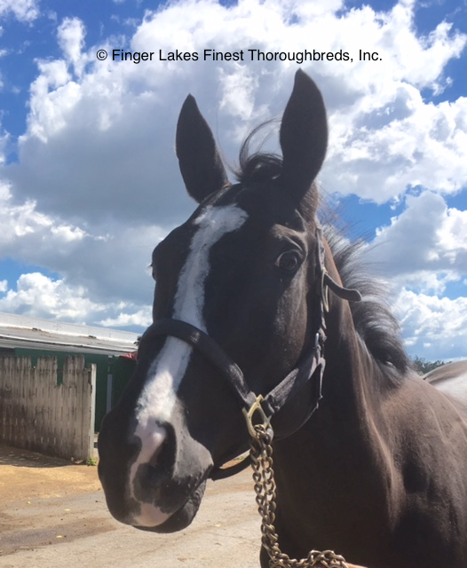
If you like black beauties with chrome, then Be Brief is for you! To add to the attractive package, he is a friendly and kind horse, good to handle, and a nice mover too. We first listed Be Brief last fall, but the owner then decided he wanted to keep racing him, and sent him to a new trainer. This year, the new trainer has convinced the owner it is time to let Be Brief move on to a good new home to enjoy a new career. We were told that Be Brief is sound, but he has a paralyzed flap which impairs his racing ability. He has not had tie back surgery, so that remains an option.
Note: the trainer speaks limited English, so please be patient when contacting him, and it would help if you speak Spanish or have a friend who does. If you want to come to the track to see Be Brief, he is in Barn 7. We usually have volunteers there on Saturday mornings and would be happy to show him to you and assist with the language barrier.
Price: $1,000 negotiable
Contact: Julio Diaz 787-536-1710
Ocala Princess, 2012 16.1 dark bay filly
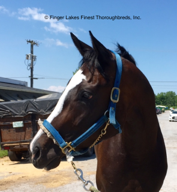
As beautiful as Princess is in her photos, she is even more stunning in person -- definitely a "must see"! She has a lovely, floaty trot with loft and suspension that turns heads and draws lots of oohs and aahs. We first listed Princess last fall, and we are very impressed with how she has filled out from three to four. After she was placed last year, Pri...ncess unfortunately found herself in a dicey situation. One of our volunteers re-acquired her, rehabbed her, brought her weight back to a healthy level, and provided her with the best of farrier care to heal abscesses that had developed in three of her four feet. Once Princess's condition improved, some ground work was initiated in the indoor arena, including free lunging and small cross rails. She has had excellent farrier care with the renowned Esco Buff, and is now100% sound on healthy hooves (he would be amenable to discussing her situation with any potential buyers). She has put on weight, gained muscle and looks and moves like an upper level dressage mount, all from the TLC given by her owner's trainer, who happens to be her daughter! This spring Princess returned to race training and, while she looks the part of a Stakes horse in training, she has proven to be a morning glory and doesn't bring her A game to the races. She is ready now to be moved into a career off the track where it is our firm belief that she will excel in dressage or eventing. Princess is a very fancy mover, which is especially evident when at liberty, but also under tack. It's important to her current connections that Princess goes into a home that will offer her a long-term commitment that will bring out her tremendous potential. Price: $2500 negotiable Contact Lauren Linn 585-919-4376
http://www.equibase.com/profiles/Results.cfm?type=Horse&refno=9343432®istry=T
As always, a pre-purchase veterinary exam is recommended.
Leo’s Legacy, 2011, 16h+ Dark Bay Gelding
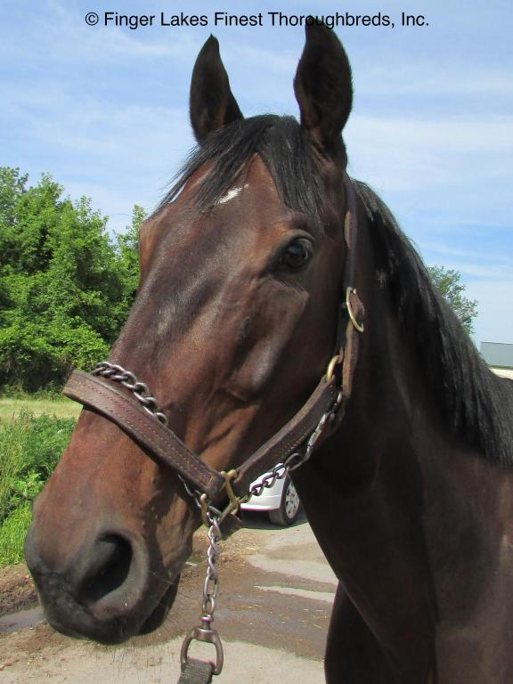
After only 10 starts, Leo’s Legacy is letting his connections know that his heart is in a different discipline, so his trainer is retiring him clean legged, sound, and slow. We admired this handsome boy’s good bone structure. Once he fills out, this boy will be massive and a force to be reckoned with. We could see him excelling as an event horse! He was extremely quiet during his photo shoot and his trainer reports he is always sensible and well behaved, “easy to live with”. From the sounds of it, Leo’s Legacy would easily transition quickly to a new career off the track and he is the perfect age to start retraining! His trainer reports that he has no vices. Big, sound, young geldings at this price tend to sell quickly! http://www.equibase.com/profiles/Results.cfm?type=Horse&refno=9128362®istry=T&rbt=TB Price:$1500neg Contact: Sugar Rohena 585-412-3678
As always, a pre-purchase veterinary exam is recommended.
Summer Warrior, 2013 16.1h+ bay gelding
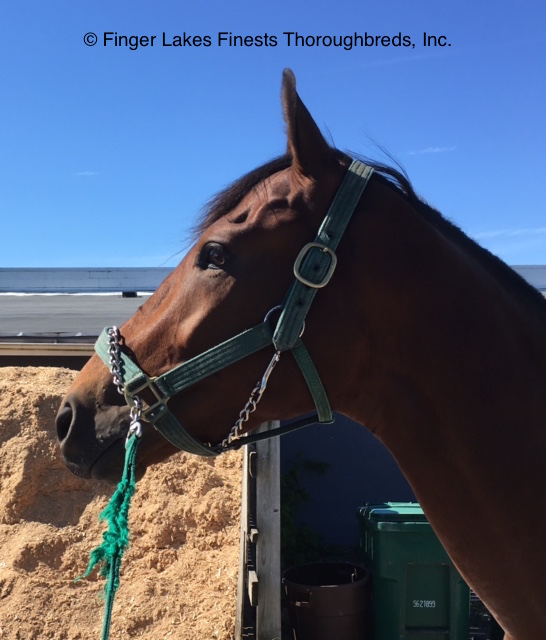
This gorgeous grandson of AP Indy is a dream horse for those who appreciate that there are few things more beautiful than an elegant plain bay thoroughbred! Lightly raced, clean legged and sound, still growing and likely to top out at close to 16.3, Summer Warrior is letting his connections know that he just doesn't want to be a racehorse. We think he just wants to float around the show ring and beg for treats! He displayed lovely light flowing movement for his jog video. Summer Warrior is described as a very friendly horse who loves candy and kids; we saw this for ourselves as he nuzzled and played with the young son of one of the barn workers, and the trainer's wife showed us photos on her phone of Summer Warrior cuddling with kids in his stall. Unlimited potential for any discipline -- call fast because big, young, sound, lovely movers with kind temperaments are what everyone wants! Price: $3500 Contact: Jim Wright 585-734-9656
Race Record and pedigree: http://www.equibase.com/profiles/Results.cfm?type=Horse&refno=9507753®istry=T&rbt=TB
As always, a pre-pruchase veterinary exam is recommended.
Randie's Dream, 2013 16.2h+ chestnut gelding
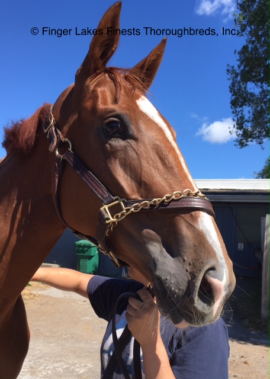
Randie is indeed a dream -- this barn favorite is described as a big sweet puppy dog who is always well behaved. We saw his friendly and laid back personality first hand as he mooched for mints and jogged quietly, showing off lovely light movement for such a big growing young horse. Randie is lightly raced with only 6 starts, and even though he recently broke his maiden, his connections know he isn't going to succeed in the tougher level of competition he must now face, so they want to do the right thing and let him find a new career while he is still so sound and clean legged. He has unlimited potential for any new direction. He has the demeanor to be a show hunter, and the size and stride for eventing or jumping. Randie is a son of Dublin, who is a son of Afleet Alex. Afleet Alex offspring are well know for having great brains and temperaments, as well as good movement and jumping ability. Randie is bargain priced for such a big, young, sound, sane, nice moving gelding, so you should call quickly if you are seriously interested. Good home essential, and references will be required.
Price: $1,500
Contact: Dan Conway 585-329-7803
Race Record and pedigree: http://www.equibase.com/profiles/Results.cfm?type=Horse&refno=9498861®istry=T
As always, a pre-purchase veterinary exam is recommended.
Putttinonashow 2011 15.3 h bay gelding: sold for racing
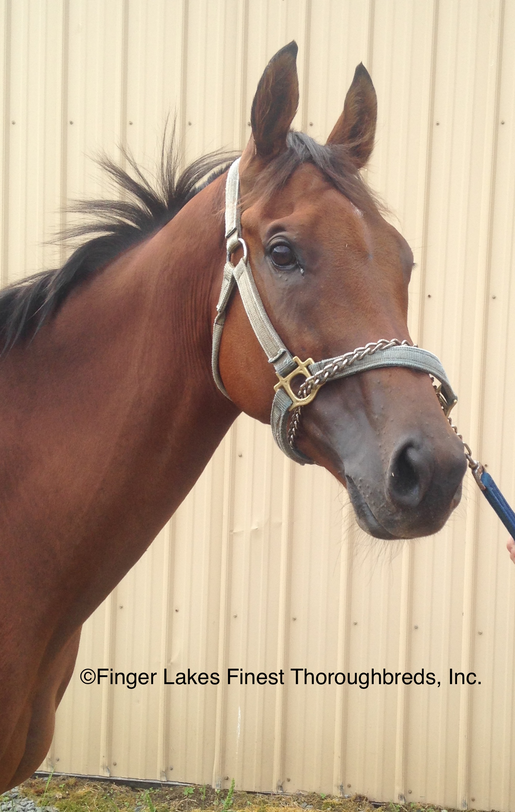
Look past the plain brown wrapper and see the lovely, kind, very nice moving gelding at a bargain price. He's quite the traveling man with starts at many eastern and midwestern tracks and, along the way, has compiled 50% in the money finishes. The conditions are getting more difficult to continue as a competitive racehorse and he is retiring sound. His trainer says he's a very good horse to handle, with no vices. We liked the looks, movement and temperament of this sweet gelding and saw nice, balanced movement at the jog with good push from behind. We can definitely see him putting on a show in the hunter ring or wherever you point him.
Contact Michelle Tasso 585-472-2804 (text or call)
Price $1200 neg.
http://www.equibase.com/profiles/Results.cfm?type=Horse&refno=9093502®istry=T&rbt=TB
As always, a pre-purchase veterinary exam is recommended.
Lifes A Roar, 2009, 16.3, Grey/Roan Gelding
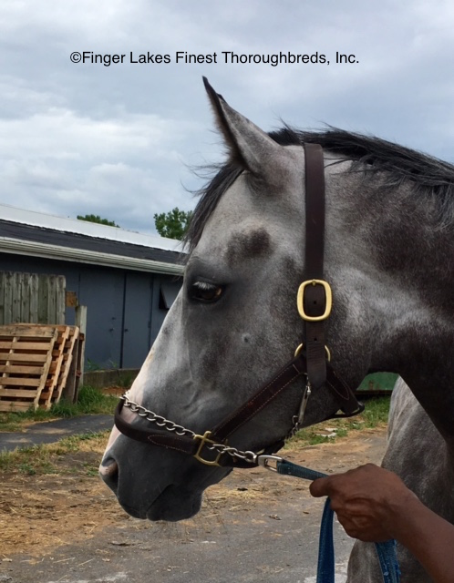
This solid bodied gorgeous grey is sure to be a head turner anywhere he goes!! Wow! Here’s your chance to own a 6 figure horse for a tiny fraction of that cost. He sold for $350,000 as a yearling-- he had clearly been identified by bloodlines and conformation as a great prospect-- and race he did! Lifes A Roar earned $88k+ in 39 races on the track and came to Finger Lakes a few weeks ago from NY. Unfortunately, he had sustained an injury to his suspensory and will need time off with veterinary consultation to properly rehab the ligament. His trainer suspects that he will be ready to start rehabbing in about a month, but ultrasounds have not recently confirmed his current place in the healing process. He was sound at the walk and tracked up nicely. He was just slightly off at the jog and minimal swelling was noted. His current trainer has been taking care of it appropriately. This is a serious bargain for someone willing to put in a bit of TLC with the end result being a drop dead gorgeous, well bred, friendly gelding. With his height and build, he will fill up the leg of even the tallest rider. Price: $1000neg Contact: Neville Henry 585-905-4214 http://www.equibase.com/profiles/Results.cfm?type=Horse&refno=8602282®istry=T&rbt=TB
As always, a pre-purchase veterinary exam is recommended.
RICO ACT 2009 16.1+ chestnut gelding
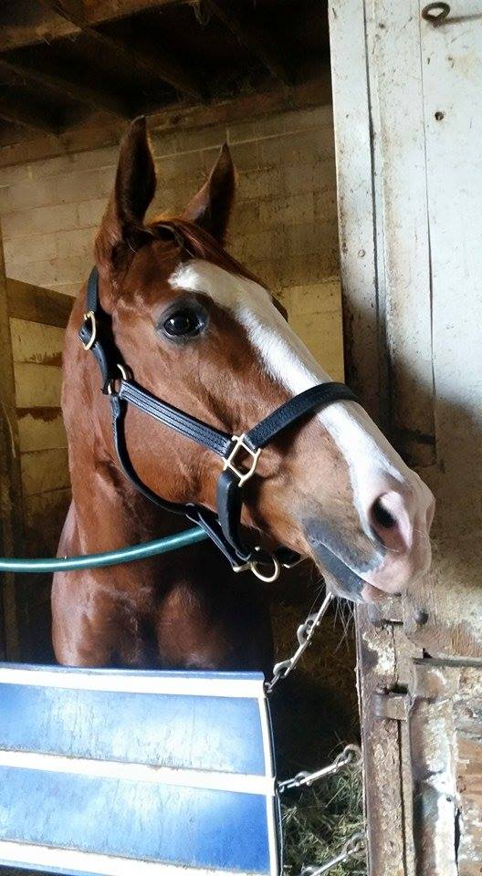
It is with a heavy heart that this beloved pet is offered for sale to someone who will love him and pamper him as much as his current connections do. Rico, who has made almost $100,000 on the track, is not in his competitive years and, while sound, the deep, cuppy racetrack is taking a toll on his big, heavy frame and his owner/trainer is electing to stop on him so he can be fully useful in his second career. His flashy good looks speak for themselves but his huge personality can't be captured in pictures! In some ways, Rico is like the class clown: mugging for treats, craning his neck into the shedrow for scritches and always up for some one-on-one time with his human admirers. His morning routine includes a stop at Aunt Bev's where he has his usual: a serving or two of peppermints and the affirmation that he is a very good boy!
Over the winter, Rico was turned out with some of his stablemates, including a mare, a filly and another gelding who is the stable track pony. Ever the lover and never a fighter, Rico go t along with everyone and made full use of his hillside paddock with many romps with his pals and stayed fit and strong during his vacation.
He had his glory years on the racetrack and now it's time for him to have many, many more glory years in the showring or as a permanent fixture in his new person's riding program. It is important to his connections that Rico is not intended to be a flip project, and he will be sold with a contract and references.
Contact Lauren Linn 585-919-4376
Price $4500
http://www.equibase.com/profiles/Results.cfm?type=Horse&refno=8591742®istry=T
As always, a pre-purchase veterinary exam is recommended.
Punch It, 2013, 15.3h, Bay filly.
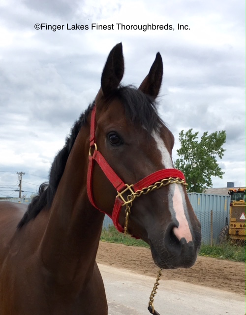
This pretty and well bred filly exudes class. She is lightly raced with only 11 starts and is not showing much promise. Her trainer is ready to retire her sound, clean legged, and with much potential to be successful in another career! She has a great pedigree for sport -- she is by AP Indy's young son Girolamo, out of a Two Punch mare, which is a sire much coveted in the eventing world. Her second and third dams are graded stakes producers. She has a gorgeous build that looks to have a natural topline. She showed a floaty, ground covering trot that we think will turn heads in the hunter ring! At only 3 years old, Punch It will continue to grow in height and will definitely fill out. She was a bit nervous today while we were taking her pictures, but was not naughty. Her trainer reports she is sweet and good to work with and settles quickly at the farm. We were told that her exercise riders love riding her as she is always well behaved and “classy”. A good home is a must! There has already been a lot of interest in this fancy girl, so we suggest calling quickly if you are seriously interested in bring her home! Price: $1000neg Contact: Deb Breed 585-289-3467. **Note: This is a land line. No texting. Best to call late afternoon/early evening. Please leave a message with a number to call back if there is no answer.**
As always, a pre-purchase veterinary exam is recommended.
Quikpikslikchik, 2013, 16h, Dark Bay Filly
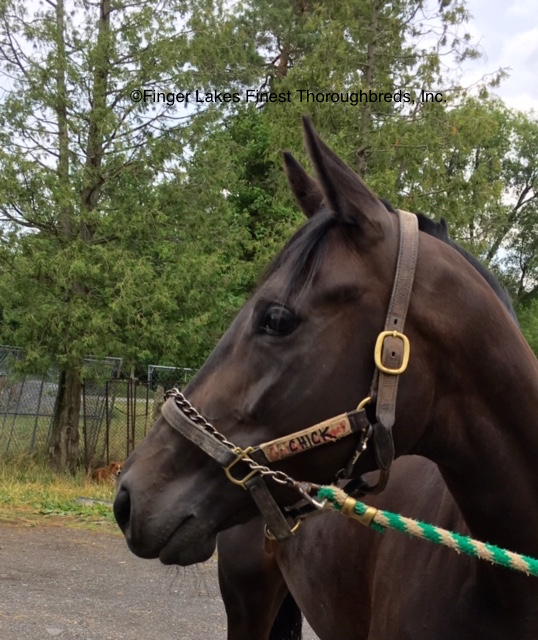
This chick’s got all the moves, a delightfully classy eye, has a nice shoulder, uphill build and is ready to move on in any direction. Her gorgeous dark dapples showed off her nice build and her coat gleams of good care and proper nutrition. Quikpikslikchik is very lightly raced. After only a handful of races, it is clear her talent is better used in a different discipline. She already has some height and substance to her, but Quikpikslikchik will continue to grow in height and will surely fill out even more! She showed light movement at the jog with good reach from the shoulder. We think she would turn heads in the hunter ring. Her trainer describes her as “friendly and curious”. She is currently located at a farm nearby the racetrack. The farm owners report she is super sweet, quiet, and confident despite her young age. She is retiring completely sound and clean legged. Here is a serious bargain for a big, fancy filly with unlimited potential. She has no vices.
She comes from one of the best female families in modern racing: her third dam produced the superstar mare and racing Hall of Fame member Serena's Song, as well as other graded stakes winners. Her second dam, Serena's Song's half sister, was herself a graded stakes winner, and her dam Bright Image, a daughter of Summer Squall, has produced a graded stakes placed runner and two daughters who are graded stakes producers. So in addition to her huge potential for sporting disciplines, this gorgeous filly has significant broodmare potential.
Price: $850 Contact: Jamie Boldt 585-943-4298 http://www.equibase.com/profiles/Results.cfm?type=Horse&refno=9466076®istry=T
As always, a pre-purchase veterinary exam is recommended.
Scorpion's Touch, 2012, 16.1h bay gelding: new price!
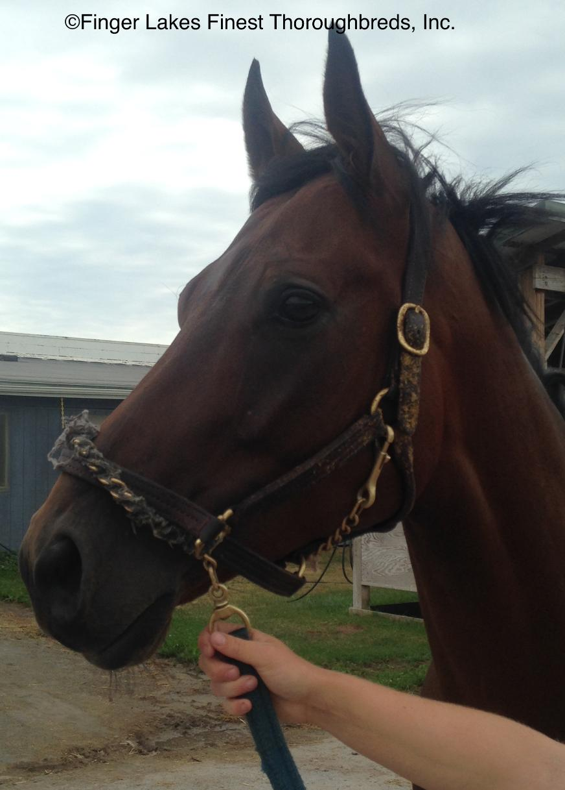
Belying his name, this very pretty young gelding is described by his groom as a kind people lover, quiet and great to work with. We admired his leggy elegance, very attractive head, and his very nice flowing and flat kneed movement at the trot. We also watched the video of his one winning race, and as he cantered back to the winner's circle we admired his lovely balanced canter. His movement should do well in the hunter ring. He was a very well behaved gentleman for his photo session, posing quietly and jogging politely. He has an excellent pedigree for jumping/sport; he is a son of Touch Gold, who is by Deputy Minister, and his dam is by Stop the Music from the Hail to Reason/Turn-to line. Scorpion's Touch is described as sound, but he is ready to move on to a new career because after breaking his maiden he is not as competitive in the next level of racing conditions. He is a great prospect for any new discipline, and given his size, youth, good movement, and good temperament, he is offered at quite the bargain price. Price: $500 negotiable Contact: Jimmy Kettell 585-313-1998
As always, a pre-purchase veterinary exam is recommended.
Pop Emotion 2013 16.1 h dk bay filly: retained by owner
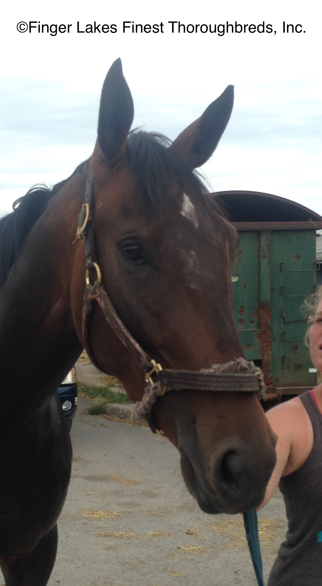
On a day when we saw our share of bargain-priced, nicely moving, sound beauties, we were delighted to see this tall, nicely put-together dark bay filly who undoubtedly will top out at 16.2 or 16.3. She is reported to be sound and has a "puppy dog" personality according to her handler. She is running at bottom maiden claiming level and is just not competitive. Rather than putting more time and effort into her for dubious reward on the track, her trainer is wisely electing to move her on. We really liked this cute girl and think she can go in just about any direction (except, perhaps, polo!)
Contact Jimmy Kettell 585-313-1998
Price $1500
http://www.equibase.com/profiles/Results.cfm?type=Horse&refno=9523976®istry=T
As always, a pre-purchase veterinary exam is recommended.
Esperanza Turista, 2012 15.3h dark bay filly
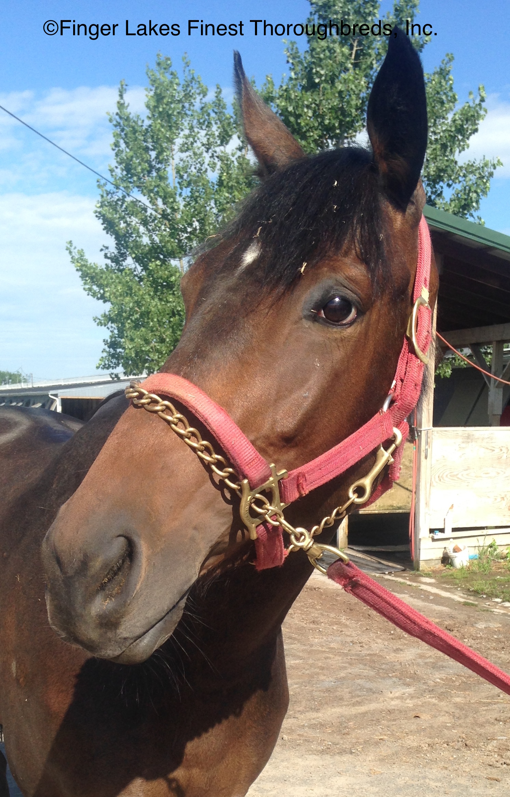
After only three starts, this pretty girl is showing no racing aptitude at the sprint distances prevalent at Finger Lakes, so it is time for her to find a new career. With her lovely movement and strong shoulder and sport horse pedigree to drool over, we think there are many new careers in which she will excel. She is clean legged and described as sound and good to handle, and she was certainly nicely behaved for her photo session. Esperanza Turista is likely to grow a bit more, and we think when she fills out she will be stunning. For her jog video, she showed good engagement from behind, suspension, and nice reach to her big strided trot. She is by Tiago, from the Pleasant Tap/Pleasant Colony/His Majesty/Ribot sire line, and a mare by Stop the Music from the Hail to Reason/Turn -to line. Esperanza's dam is by a grandson of Secretariat; her second dam was a multiple stakes winner, graded stakes placed. Her pedigree is full of stout stamina lines, and is completely free of Mr. Prospector or Storm Cat. Young, sound, pretty, a lovely mover -- all at a bargain price! Price: $1,000 negotiable Contact: Jose Cabrera 315-521-3920
Race Record and pedigree: http://www.equibase.com/profiles/Results.cfm?type=Horse&refno=9270549®istry=T&rbt=TB
As always, a pre-purchase veterinary exam is recommended.
Sean and Matt, 2011 16.3 h dk bay gelding
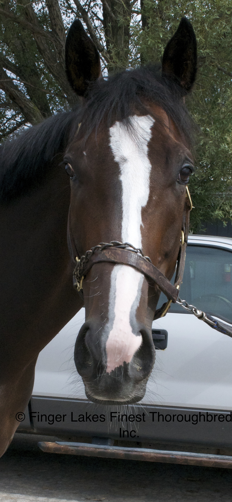
"Matty" is offered for sale by his wonderful connections who truly love this horse and want the very best placement for him. At almost 17 hands, he is the tall, dark and handsome gelding that so many OTTB enthusiasts are looking to park in their barns. Matty is not only flashy, he's very classy and a gentleman to work around. Kentucky bred Matty started his career on the NYRA circuit and his latest starts have been here at Finger Lakes where he has scored 3 consecutive wins this year. With 4 lifetime wins he now moves in to tougher competition in open company races and his owners are moving him on. At the jog, he has a big, ground-covering stride that demonstrates nice suspension and good push from behind. At this price point, big, flashy horses don't last long before getting scooped up. Plan a visit soon!
Contact Dan Conway 585-3297803
Price $2000
http://www.equibase.com/profiles/Results.cfm?type=Horse&refno=9083715®istry=T
As always, a pre-purchase veterinary exam is recommended.
I Am Maria 2013 15.1 h gr/ro filly
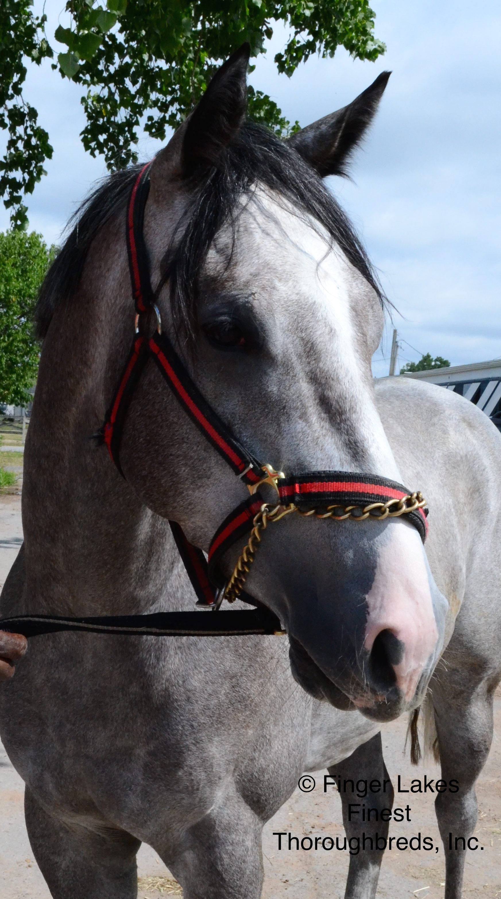
What a cutie patootie! Never raced Maria walked out of the barn and stood like a Breyer horse for her photo shoot. We think she would be a sweet mount for a smaller rider and her pedigree is remarkable for its strong sport/jumping lines. She's from the Broad Brush/Ack Ack sire line out of a Prime Timber mare, who is from the Cox's Ridge line. We observed an irregularity in her left knee but the handler was unable to give information on it, however, a PPE would sort that out. We have reason to believe that Maria needs to find a home sooner rather than later. Cute little grays are popular and we hope you scoop her up soon.
Contact Junior 585-270-9118
Price $1000
http://www.equibase.com/profiles/Results.cfm?type=Horse&refno=9496192®istry=T
As always, a pre-purchase veterinary exam is recommended.
Farwells Runnin 2012 16 h bay filly
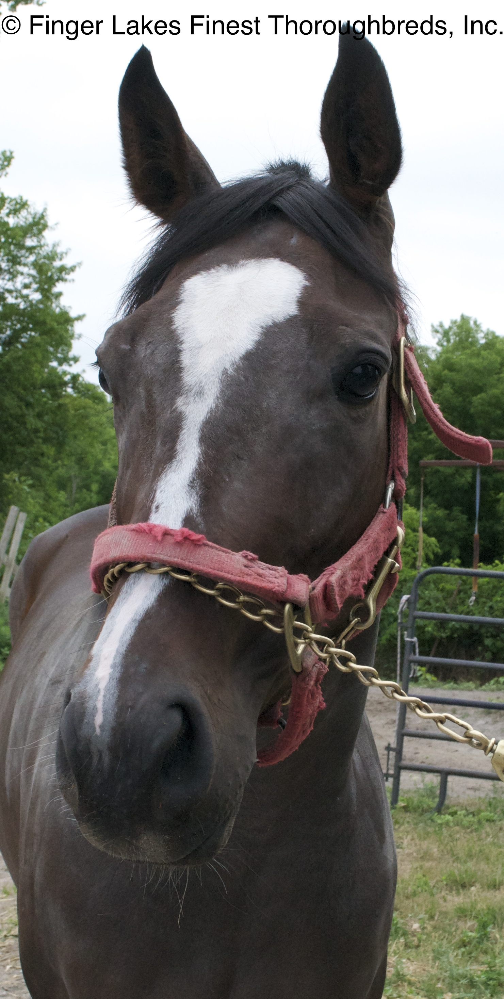
This lovely lass may be the bargain of the day! Look past the dusty coat and there is a pretty filly who will blossom with some elbow grease and TLC. She was very sweet and quiet while we posed her on the road and, because of a language barrier, we were not able to get a lot of information about her, but we did notice a left knee that looks to have sustained some injury. More information about that knee was not available to us on the day of her interview. She did show very nice movement at the jog with reach and suspension and she appeared sound.
Contact Rafael Ramos 786-473-0626. If language is a barrier, contact Margie Linn who can find an on-track interpreter 315-719-8739
Price $500
http://www.equibase.com/profiles/Results.cfm?type=Horse&refno=9332119®istry=T
As always, a pre-purchase veterinary exam is recommended.
Kaylyn's Prayer 2011 16 h bay mare
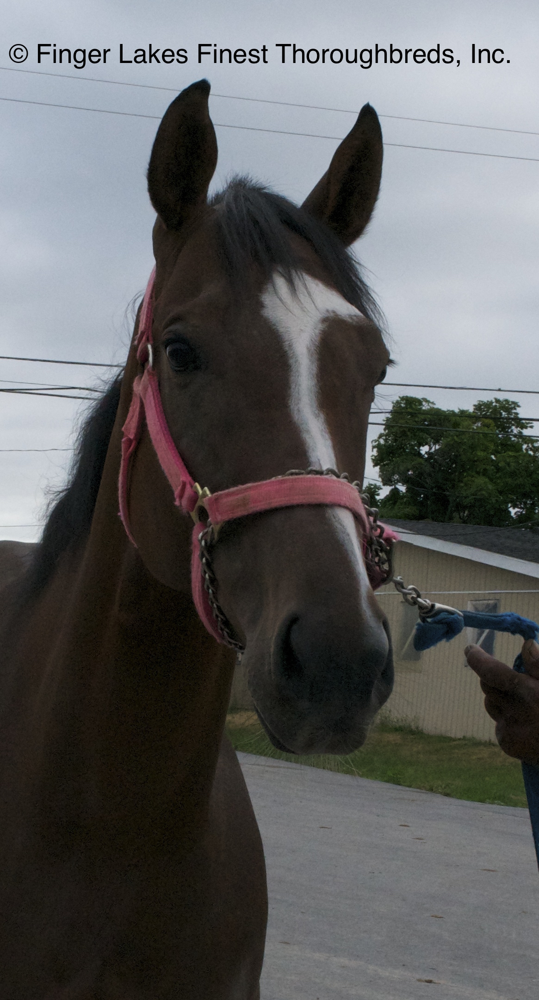
Kentucky bred by Songandaprayer, Kaylyn's best races were run on the surface of Gulfstream Park in 2014, ending her 2014 with a win at a mile on the dirt (ironically, FLF 2015 alum Go To Work was also in that race!). The year off would have to be discussed with the owner/trainer who states that she has breathing issues and that is why she has tailed off. She is very nicely put together and has a pretty head set off with a striking blaze. While we did her interview on one of the main roads, there were water trucks and a tractor going by and she didn't seem to be bothered by any of the activity and noise. It was difficult to get a nice jog on a loose lead because she was ramped up but, at the price, a trip to the track to meet her up close and personal is well worth it.
Contact George Beech 516-725-8715
Price $500
http://www.equibase.com/profiles/Results.cfm?type=Horse&refno=9149119®istry=T
As always, a pre-purchase veterinary exam is recommended.
No It's Not Me, 2010 15.3h chestnut mare
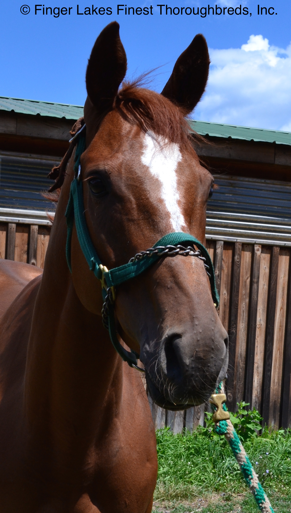
This very pretty and well bred mare dazzled us with her classic, correct, solid conformation, and her in your pocket sweetheart personality. She has been a very good race horse, with 7 wins, and 17 in the money finishes in her 34 starts. In her most recent race in mid-July, she came back sore on a knee that had chips in it (which she had successfully raced on). So now it is time to retire her, and she will need time off to rest her knee. Her owner has not had it x-rayed since the recent race. With her excellent pedigree and beautiful conformation and good race record, we think she is an excellent broodmare prospect, either for racing or for sport. She is by top sire Leroidesanimaux, best known as the sire of Derby winner Animal Kingdom. Her dam is by champion Gulch, who is proving to be a very good broodmare sire. Her second dam is a full sister to Travers winner Corporate Report, and is from the Damascus sire line through his son Private Account. Lots of quality black type in her female family. With the Blushing Groom branch of Nasrullah in her sire line, and the Private Account/Damascus sire line on her dam side, this is a pedigree that has great appeal for sporting disciplines. It also presents many good outcross opportunities to leading sire lines for racing breeding. The people at the farm near the track where the mare is resting raved about her sweet personality, and attested that she has been a model citizen while on stall rest. Her track connections also state that she is a sweetheart who is great to handle. She is a mild cribber, but it is controlled with a collar. Because of her recent knee injury, we did not ask for a jog video. She walked fine, and showed a flowing big stride. We also watched race videos to assess her movement, and we think she is a lovely mover with a flat kneed, flowing and balanced way of going. Price: $500 negotiable. Excellent home essential, references required. Contact: Jamie Boldt 585-943-4298
Race Record and pedigree: http://www.equibase.com/profiles/Results.cfm?type=Horse&refno=8989212®istry=T
As always, a pre-purchase veterinary exam is recommended.
Rust in My Halo, 2012 15.1h gray filly
This adorable, compact, sweet little gray girl is unraced and clean legged -- and a clean slate for any new career. With her small size we think she could make a great polo horse, but we also think she could do well in jumping disciplines, given her pedigree. Her sire is by Halo out of a Secretariat mare. This is the Hail to Reason/Turn-to sire line. Her dam is a Gone West granddaughter whose dam is from another branch of Hail to Reason through Cure the Blues. Her trainer says she is not showing enough ability to make it worth bringing her to the races. She recently came to his barn with a bad case of thrush, which he is treating. It is not quite cleared up, and while she walked just fine for a video, he did not yet want to jog her on the hard ground. He says she is very sound otherwise, and we observed completely clean legs. If she is not snapped up immediately, we will check in later for a jog video. Everyone wants a cute gray, so call fast if you are interested! Price: $1,000 Contact: Neville Henry 585-905-4214
Race record and pedigree: http://www.equibase.com/profiles/Results.cfm?type=Horse&refno=9346876®istry=T
As always, a pre-purchase veterinary exam is recommended.
Buddy Red, 2008 16h bay horse
Another wonderful durable war horse, the handsome and adorable Buddy Red is still sound and clean legged and quite a lovely mover after 69 starts, with 8 wins and 32 in the money finishes. He is really just a big puppy dog -- his owner/trainer kept saying what a good kind horse he is, not the slightest bit studdish. Just think what a great gelding Buddy will be! We experienced Buddy's agreeable good-to-handle nature for ourselves when one of our volunteers offered to jog him for his video, since his owner/trainer has limited mobility. Buddy trotted politely on a loose lead, stepping out nicely and showing off a beautiful flat kneed ground covering trot. We think Buddy is a true gem, who could excel in any new discipline. He is certainly pretty enough and has the movement for the show hunter ring. Do not let his age or "intact" status deter you -- he has many more years to give, and at his bargain price you can pay for a simple gelding procedure and still have one of the bargains of the season! A very good home is essential. Price: $500 negotiable Contact: Ulises Gonzalez 585-615-0497
Race record and pedigree: http://www.equibase.com/profiles/Results.cfm?type=Horse&refno=8336908®istry=T&rbt=TB
As always, a pre-purchase veterinary exam is recommended.
Poem, 2012 16.2h dark bay filly
This beautiful filly is dark and tall. On the track she has given her all, but now it is time for her to find a great new home that is loving and kind.
Yes, indeed, this big, elegant, almost black granddaughter of Dynaformer had us waxing poetic! We see exceptional sport horse potential. Poem posed like a model, as we admired her strong shoulder, dapples, kind and intelligent eye -- and the cute gray spot on her right shoulder. She is ready to find a career other than racing, because since she broke her maiden earlier this year, she is not as competitive in the next level of race conditions. Poem slightly bowed a tendon last year, before she raced, but it was fully rehabbed, and is now cold and tight and causes no soundness issues. Since she started her race career last October, she has run regularly, so we do not think she will have any limitations for any new career. She showed good suspension and engagement for her jog video. We also watched the race video of her one winning race, and as she trotted back to the winner's circle we observed a very lofty big trot that suggests excellent potential for dressage or eventing. And her pedigree shouts sport horse! Her sire Purim was a major stakes winner on turf and dirt, and he is by the great Dynaformer, well known as a sire of athletic jumpers and horses with endurance. Her dam is a granddaughter of Danzig, Northern Dancer's son, and also has two crosses of Buckpasser. Price: $1200 negotiable Contact: Sugar Rohena 585-412-3678 (contact person for owner/trainer Sam Morales)
Race Record and pedigree: http://www.equibase.com/profiles/Results.cfm?type=Horse&refno=9351244®istry=T&rbt=TB
As always, a pre-purchase veterinary exam is recommended.
Kitchi Warrior, 2010 16.2h bay gelding
Hubba Hubba -- on a day when we saw many big beautiful bays, Kitchi Warrior won our volunteers' hearts as the handsomest hunk of the day! This gorgeous solidly built guy could easily blend in amongst warmbloods in the show arena. We admired his balanced build, strong shoulder, top line, elegant head, dappled gleaming coat, and kind intelligent eye-- he looks show ring ready. He is clean legged, and his owner/trainer says he is very sound and a very good sensible horse to work with, with no vices. Kitchi has a good racing record, with 6 wins, and 17 in the money finishes, but his owner wants to retire Kitchi from racing because he has developed a partially obstructed airway at top racing speeds, exacerbated in the hot humid weather this summer. He says Kitchi has no breathing issues when galloping, does not make a noise, and should be fine for any discipline that involves less than the full speed of racing. Kitchi showed dressage type movement for his jog video, with nice suspension and engagement from behind. The owner says he had Kitchi on his farm over the winter, and he was great to handle and good to turn out with other horses. He is offered at a bargain price for such a big, clean legged, gorgeous horse, so call fast! Price: $1,500 negotiable Contact: Kevin 585-698-8102 Note: when he is at home rather than the track, his cell service can be spotty, so if you don't get through keep trying. He says texts are fine as well.
Race record and pedigree: http://www.equibase.com/profiles/Results.cfm?type=Horse&refno=8953841®istry=T
As always, a pre-purchase veterinary exam is recommended.
Fried, 2007 16.1h+ bay gelding
This handsome and flashy solid boned guy is a class act in all respects! He has had a very good racing career, with 10 wins and 50% in the money finishes in 50 starts. But his allowance and stakes class days are behind him, and in his races this year he is not as competitive, and he is telling his owner/trainer it is time to let him enjoy a new career. He is described as sound, intelligent, great to handle, well behaved -- and we certainly saw all that. We admired his elegant head, strong shoulder, shiny coat and chrome as he posed for us just soaking up the sun. He showed good balanced movement for his jog video. He has a great sport horse pedigree. He is a son of Freud -- a sire very popular in sporting disciplines and full brother to Giant's Causeway --, and his dam is by Fappiano's son Cryptoclearance. Damascus is another prominent jumping sire name close up on his dam's side. Fried has many more years to give in a new endeavor to the person lucky enough to step up for him. Do not let his age deter you -- this is a classy durable sound horse who we think will be able to do anything in a new career. Price: $1,000 negotiable Contact: Joe Marino 315-521-0583 or Marc Marino 315-521-0939
Race record and pedigree: http://www.equibase.com/profiles/Results.cfm?type=Horse&refno=8027600®istry=T&rbt=TB
As always, a pre-purchase veterinary exam is recommended.
Devonshire, 2007 16.2h+ bay gelding
For those of you who love the durable war horses, the ones who have danced every dance and are still sound, and who so richly deserve a great new life off the track, please step up for the beautiful and flashy Devonshire! Over his long and successful racing career, he has racked up 10 wins, 18 places, and 13 shows, for over 50% in the money finishes in 78 starts. Even though he is now working out regularly, he is letting his trainer know that he just doesn't have the speed and racing desire he once had, so it is time to move him on to a new career. And with his size, elegance, and light lovely movement with good suspension, we can see many new disciplines in which Devonshire can excel. Devonshire did slightly tweak his tendon this spring, but he is sound on it, and is regularly breezing 4 and 5 furlongs. So his trainer is confident that he should hold up for any new discipline. We can see him as a great dressage horse, or in the hunter ring, or on the trails.... or anything! Price: $750 negotiable Contact: Joe Marino 315-521-0583 or Marc Marino 315-521-0939
Race Record and Pedigree: http://www.equibase.com/profiles/Results.cfm?type=Horse&refno=8002194®istry=T&rbt=TB
As always, a pre-purchase veterinary exam is recommeded.
Mostly Love, 2008 16.3h bay mare: new price
For our volunteers, it was ALL love as we admired this gorgeous big kind mare with a fantastic sport horse pedigree. Over her racing career, Mostly Love has won 6 races, with 20 in the money finishes. But her owner/trainer says she is letting him know she just doesn't want to race anymore, so it is time to find her a new career where her beautiful shiny looks, solid build, and big strided good movement will turn heads. He says she is sound, is a "big pet," and that she turns out well with other horses, both geldings and mares. He told us that over the winter, his wife rode Mostly Love around their farm, and the mare was very well behaved. Even though Mostly Love just wanted to drag her trainer over to the grass when he jogged her for us, we could still see that she is a very nice mover, with a powerful big stride and good engagement from behind. She is sired by Leroidesanimaux (one of three of his daughters that we photographed today!), who is from the Blushing Groom sire line, was a turf champion, and is best known as the sire of Derby winner Animal Kingdom. Her dam is by Roberto's son Lear Fan, and is a half sister to Read the Footnotes, who has sired many horses who have gone on to notable success in eventing and jumping disciplines. With this pedigree, Mostly Love has excellent broodmare potential, either for racing or sport. Price: $2500 negotiable Contact: Richard Lathrop 585-703-8958
Race Record and Pedigree: http://www.equibase.com/profiles/Results.cfm?type=Horse&refno=8383389®istry=T&rbt=TB
As always, a pre-purchase veterinary exam is recommended.
Perfect Alignment, 2013 15.3h+ bay filly: sold for racing
This very pretty and still growing young filly has the uphill build and lovely movement that make her an excellent prospect for the hunter ring or for eventing... or for any discipline for that matter. After only 8 races with no wins, she has demonstrated that racing is not her game, so her owner/trainer wants her to find a new career while she is sound and her potential is unlimited. We admired her clean legs, good shoulder, flashy chrome, and very pretty head. When she has finished growing and is filled out, we think she will be stunning. She jogged politely on a loose lead, showing off a flat kneed trot with good reach from the shoulders and engagement from behind. Since she turned three only two months ago, we expect that she will top out at 16.1h, at least --on the day we photographed her, we estimated her height at just a hair under 16h. Her dam is by Smokin Mel who is a Fappiano grandson; we have placed several Smokin Mel offspring and they are durable, have great minds, and are doing well in many disciplines. We think Perfect Alignment is a perfect prospect for many sporting disciplines!
Price: $1500 negotiable Contact: Sugar Rohena 585-412-3678 (contact person for owner/trainer Sam Morales)
As always, a pre-purchase veterinary exam is recommended.
Do It For Dennis, 2010, 16.3h, dark bay gelding
Tall, dark, and handsome -- Dennis impressed us a classy and kind guy. He is by Performing Magic, who is by Gone West -- this is a sire line coveted by many in sport horse disciplines. He has Sadler's Wells and Roberto on his dam's side. We admired Dennis' uphill build, long legs, intelligent eye, and perfect behavior. He showed fluid balanced movement for his jog video. He has old osselets, but he has raced with them, and his trainer says he is sound. It is time to find a new career because he hasn't been competitive since he broke his maiden, and in his workouts so far this season he isn't showing enough speed. His trainer says he is a good boy, an all around nice horse. Dennis is quite the bargain for such a big handsome gelding, and we think he would just love being someone's partner for lower level jumping, trails, or pleasure riding.
Price: $500 negotiable to a good home Contact: Luis Gutierrez 585-880-5622 or Rey Gutierrez 585-857-0612
As always, a pre-purchase veterinary exam is recommended.
Autumn Purge, 2010, 16.1h Bay Gelding
Here is a boy with unlimited potential!! After a decent racing career with 11 in the money finishes during his 36 starts, Autumn Purge is retiring clean legged and sound. He is just not showing the same competitiveness this year so his trainer feels it is best to let him shine elsewhere. This gorgeous boy has a very correct build and is flashy to boot! He will stand out in any arena you steer him towards. He was very well behaved during his meet and greet and was so quiet, his trainer could barely get him to jog. We could see some nice suspension to his brief jog and he tracked up nicely. We think he would be a comfy ride! His trainer reports he is a gentleman to handle and has absolutely no stable vices. This is a bargain price for a big, clean legged gelding with a great attitude. He is everything that everyone tells us they are looking for, so we would suggest calling quickly if he catches your eye (he sure caught ours)! http://www.equibase.com/profiles/Results.cfm?type=Horse&refno=8891821®istry=T Price: $1200 negotiable Contact: Mike Lacesse 585-303-9467
As always, a pre-purchase veterinary exam is recommended.
Portada, 2012, 16h Bay Filly
Portada (meaning “headline” in Spanish) is ready to be headline news in a new discipline. After 16 races, she is just not proving herself successful at the Finger Lakes Track. Her trainers report she has everything going for her-she has a good mind, great build, clean sound legs, but it doesn’t come through at race time. Her trainers report they have looked up and down for a reason why she isn’t cutting it at the races and have concluded her heart just isn’t in it. She recently had her teeth done and was recently scoped for breathing issues (came back clear). Her trainer reports she is as gentle as they come and thinks she would be a good children’s horse after some let down and retraining. Portada is reported to be an excellent shipper, eater, and stands quietly to be bathed and get her shoes down. This is certainly the impression we got during our “meet and greet”! She tracked up nicely at the walk and trot as she jogged gently beside her mature handler. Her trainers love her dearly and are quite attached to her. They are most concerned with finding her a great home where she will be appreciated for all her wonderful attributes. She has no stable vices. http://www.equibase.com/profiles/Results.cfm?type=Horse&refno=9328352®istry=T&rbt=TB Price: $1000 negotiable Contact: Phyllis Shetron 585-317-8892
Qusaichi, 2012, 15.2h Chestnut Gelding
Cutie patootie alert! We’ve had a slew of shoppers looking for athletes in smaller packages lately and here is another great option!! We are so happy riders are coming to appreciate that horses can be just as, if not more, competitive in many disciplines without towering above the competition. The lightly raced Qusaichi screams athletic. He has very correct conformation, is clean legged, and retiring completely sound. He shows good speed and even some racing talent, but recently has decided he does not want to break from the gate during races. His trainers feel he is telling them that his heart is in a different discipline. Qusaichi is a very nice mover, tracking up well at both the walk and the jog. He could really cover some ground on the cross country course or jumper ring! However, his compact build could also appeal to polo, barrels, or other sporting disciplines. What we do know is he is bargain priced and horses in this price range tend to sell quickly. Don’t let this adorable guy with unlimited potential pass you by. His trainer reports he is great to work with in the barn and has no stable videos. http://www.equibase.com/profiles/Results.cfm?type=Horse&refno=9286169®istry=T Price: $850 negotiable Contact: Jamie Boldt 585-943-4298
As always, a pre-purchase veterinary exam is recommended.
Queen's Gambit, 2012 15-15.1h gray/roan filly
Adorable little gray fillies are much coveted, so you had better call fast to have a chance at Queen's Gambit. With only 3 starts, this daughter of Frost Giant, granddaughter of Giant's Causeway, is showing no racing ability, but she is a clean slate for any other discipline. She is a homebred, so you will be able to get her whole history from her owner/trainer. Her legs are clean, and he says she is sound. He also says she is a quiet and good girl. She certainly posed like a calm model for her photo session, as we admired her dapples, pink nose, and dark mane. She showed very nice balanced flat kneed movement for her jog video, which makes us think she could be an adorable children's hunter. But her stature also suggests that barrels or polo might be her niche. Price: "Best offer" (owner would not name starting price -- but he is not going to let her go for a cheap price) Contact: Dave Donegan 585-330-4466
Race Record and pedigree: http://www.equibase.com/profiles/Results.cfm?type=Horse&refno=9311938®istry=T&rbt=TB
Macushla, 2012 16.2h bay filly
This big, lightly raced, and clean legged filly has a great sport horse pedigree. She is by Tiago, who is from the Pleasant Colony/His Majesty sire line out of a mare from the Hail to Reason/Turn-to line. Her dam is by Point Given, and there are two crosses of In Reality on her dam side. After only 4 starts, Macushla is letting her owner/trainer know that racing is not her game. Her trainer says she is sound, has no vices, and is good to handle. She posed perfectly and jogged very quietly for her photo session, and showed nice movement. Once she fills out, and finishes growing, she should be quite impressive. Unlimited potential here for any discipline. Price: $2,000 negotiable Contact: Dave Donegan 585-330-4466
Race Record and Pedigree: http://www.equibase.com/profiles/Results.cfm?type=Horse&refno=9338750®istry=T&rbt=TB
Tommy No Read, 2012 16.1h+ bay gelding
Located at a farm very close to the Finger Lakes Race Track in Farmington, NY (near Rochester, NY). This very well bred, lightly raced big young guy hasn’t lived up to his stellar pedigree on the racetrack, so his trainer wants to find him a new career where he can excel. Tommy ran well on the synthetic track at Woodbine as a two year old, and his current connections claimed him in Florida. But Tommy has shown a dislike for the hard dirt surface at Finger Lakes. He was retired from racing previously, but his trainers decided to geld him and give it another go. Unfortunately (for them), Tommy is still not showing an interest in racing here. Racing's loss is your gain! Tommy sustained an injury to his right hind ankle earlier in his life, and while it is now a piece of racing jewelry, we were told that it causes him no problems, and he has been racing and training sound on it and he jogged fine for us. Tommy was friendly, quiet and well behaved for his photo session in the rain, and he was so mellow he did not even want to trot. But when he did trot for his video, he showed some nice balance with hints of suspension. Tommy is likely to grow some more, and once he is gelded we think he will make a great horse for many disciplines. He was certainly bred to be the real deal: a son of leading sire Sky Mesa, a son of Pulpit, grandson of AP Indy and out of a mare by Dixie Union, from the Dixieland Bank sire line, who sold for $200,000 as a yearling. His trainer states he is excellent to have in the barn and has no vices. This is a bargain price for such a handsome, kind, sound young gelding with good size! Price: $800neg Contact: Mike LeCesse 585-303-9467
Afleet Magic, 2006, 16.3h Bay Gelding
Love at first sight!! Our volunteer immediately fell in love with this handsome warhorse who has immense presence and a huge heart. His trainer raved about what a wonderful boy he is-a true barn favorite that will be missed. He has earned over $170,000 with 39 in the money finishes. After a successful career, he is just not showing the same level of competitiveness as he previously did, so his trainer is retiring him sound and clean legged-a testament to his durability. In our experience, it is these warhorses that are the most durable, hardworking, and dependable, with exceptional longevity in their second careers. Afleet Magic is large in height, body, and will. His height combined with his stocky build will fill up the tallest of riders’ legs. His trainer feels he would make an excellent event horse-and we agree. He showed a beautiful, ground covering trot with excellent movement from the shoulder. Combined with his uphill build, he will be a force to be reckoned with amongst any competition! His trainer states that he is “easy to live with”, an excellent eater (we can tell by his weight!), and has absolutely no stable vices. Horses with this build and movement tend to be quick sells! http://www.equibase.com/profiles/Results.cfm?type=Horse&refno=7747317®istry=T Price: $1500neg Contact: Mike LaCesse 585-303-9467
Knockout, 2008, 16+ h bay ridgling
Located at a farm very close to the Finger Lakes Race Track in Farmington, NY (near Rochester, NY). This tank of a horse is aptly named! Wow, what a looker this guy is. His breeding is exceptional and his race record reflects a highly respectable number of in-the-money finishes out of 39 starts. He is reported to be a classy guy to work with who never puts a foot wrong. We had the benefit of getting the input of his regular rider who said that he is a professional, knows his job, puts his head down and is all business on the track, although he is a powerful boy and is strong in the racetrack environment. We were delighted to see beautiful movement, with a big flowing stride, suspension, cadence, and loft, maintaining a natural frame, that had our assembled group of volunteers exclaiming with oohs and ahhs! We can envision him excelling as a dressage mount, or in the hunter ring or in eventing. He is a good prospect for a large or tall rider with his solid bone and substantial build. He cost $300,000 as a two year old, so we’re not the only ones who think he is indeed a knockout in the looks department. He is by champion sire Smart Strike, out of a mare by Red Ransom, a son of Roberto and grandson of Damascus. These are great sport/jumping lines. Here's your chance to own a $300,000 horse at a tiny fraction of that! He is listed at a bargain price which is negotiable to a good home. Put those savings towards his gelding procedure and you will have a stunning, athletic horse that will turn heads wherever you take him. His trainer reports he has no vices. Price: $800neg Contact: Mike LaCesse 585-303-9467
Buddy Jones, 2009, 16.2h Dark Bay Gelding
Buddy Jones is all class! This sweet boy has had a successful racing career with 9 wins, 2 seconds, and 3 thirds in his 31 starts, earning over $83,000. He is not showing the same competitiveness this year as he previously had and his trainer wants to retire him sound in order to start his second career. Buddy was super sweet during our meet and greet. He seemed to have an old, wise soul who will proudly do whatever is asked of him. He has a fabulous sport horse pedigree. He is by Ghostzapper, who has Deputy Minister and Relaunch/In Reality up close, out of a mare by Personal Flag, from the Private Account/Damascus sire line. He is the real deal! Buddy has old, set osselets that he has been racing sound on and do not seem to impact his performance. His trainer would like to see him go to the very best of homes where his regal nature will be appreciated. Buddy is reported to have no stable vices. We can’t wait to follow this handsome man's second career. He has a lot to offer his next rider! http://www.equibase.com/profiles/Results.cfm?type=Horse&refno=8597870®istry=T&rbt=TB Price: $800neg Contact: Mike Lacesse 585-303-9467
Kerry Washington, 2011, 16.1h Chestnut Gelding
This celebrity named gelding is a bit of a celebrity in his barn-known for his great personality and looks- and also because he happens to have only one eye. Don’t let that deter you! We know many horses who have had very successful competitive careers with only one eye. Although he may not have a career in the rated hunter ring, he has the build to be a great jumper, dressage horse, or to just be an all around good guy for pleasure riding. He was perfectly behaved for his photo shoot, which has been what we observed when visiting him on other days. He does not appear nervous or spooky. He did not display any vices in his stall. During his very recent race on a very hot and humid day, Kerry Washington was eased, potentially fatigued. Like all horses coming off the track, he could benefit from some time to just “be a horse”. This sweet guy is bargained price so he can find a home very quickly. http://www.equibase.com/profiles/Results.cfm?type=Horse&refno=9143556®istry=T Price: $800neg Contact: Angel Lopez 315-719-4252 Arcadio Lopez: 315-521-9556
As always, a pre-purchase veterinary exam is recommended.
Going for Millions 2012 17 h bay filly
This lanky, lovely filly impressed us as a fantastic prospect for a future in a sporting discipline with her elegant looks and classy demeanor. Her owner trainer is quite attached to her and wants her to be in the right situation when she leaves the track. She got a bit dinged up in her last race and didn't handle the extreme heat index well and her connections are ready to call it a day. She has won two races this year and competition gets tougher after this. She is a daughter of Noonmark and, in our experience,his offspring need to be brought along patiently without a timeline. As tall as she is, she still has a lot of maturing and growing to do and when she tops out, she is going to be a force to be reckoned with. Of note, she is out of the same dam as Tanzillion, who is killing it in the Big A hunter shows. With her size, looks and breeding, we think she has oodles of potential in the show ring.
Price $4000
Contact Joe Cabrera 315-704-8256 http://www.equibase.com/profiles/Results.cfm?type=Horse&refno=9312665®istry=T
As always, a pre-purchase veterinary exam is recommended.
Unnamed grey gelding, 2014, 16.1h, Gr/Ro Gelding
It is not every day that we are able to list a true blank slate opportunity! This cutie by Dublin is with great connections who take fabulous care of their horses, but simply do not have the time to start this one. They have lots of horses, including babies, that are taking up quite a bit of time. The handsome grey boy has not been broken, but is handled daily. His groom told us that he is actually one of the best horses to handle at the farm, even at only 2 years old! He said he is a happy and easy going guy who tries to do right by his handler at all times. He is reported to be good in turnout and in his stall. He was very well behaved during his photo shoot and even jogged in hand like he had been doing for many years. He has clean legs and has never had any soundness issues or injuries. He also has no vices. At only 2, he has substantial size and will continue to grow for a couple more years. Because of his age, size, and the fact that he is unbroken, an experienced handler (or someone working closely with a trainer) is suggested. Price: $1500neg Contact: Mike Lacesse 585 303-9467
As always, a pre-purchase veterinary exam is recommended.
Eastern Giant, 2012, 16h, Chestnut Gelding
On a day where we listed many good movers, Eastern Giant really stood out! Like other Stonesider babies we have listed, Eastern Giant has jaw dropping movement, with excellent reach and suspension even in hand at a jog. As someone commented on our Facebook page, he is a real “beefcake” and a handsome one at that! His solid bone structure combined with his height makes him suitable for even taller of riders. He is very lightly raced with only two lifetime starts. While working around the 20th of June, Eastern Giant mildly bowed. His trainer (who is also the owner and breeder) has been meticulously rehabbing him. We have known many horses from our listings with minor (or worse!) bows that go on to lead extremely successful careers even at upper levels. We know Eastern Giant will be no different. His trainer reports that he is great to work with, which is exactly what we saw while taking his photos. Eastern Giant is located with a barn known for their excellent horse care and honesty. You can rest easy when working with this trainer knowing that they will be as upfront as possible to ensure horse and rider are happily matched. We could provide some “happy customer” references who have bought lovely horses from these connections in the past. His current connections would keep this very loved homebred (who they call the family pet) forever but very unfortunate health circumstances in the trainer’s family is forcing a herd reduction. Only the best of homes will do and they would love to follow his second career! He has no vices. http://www.equibase.com/profiles/Results.cfm?type=Horse&refno=9332015®istry=T&rbt=TB Price: $800 negotiable Contact: Bob Ubbink 585-738-3159
As always, a pre-purchase veterinary exam is recommended.
Major John, 15.3h, 2010 Dark Bay Gelding
Located at the Finger Lakes Race Track in Farmington, NY (near Rochester, NY). This adorable gelding has rooted his way deep into the hearts of his connections and it is obvious by the impeccable manners he exhibited for his meet and greet on the backside this weekend. He is reported to have no vices, loads and travels well, quiet for grooming and all around good to handle. Major John doesn’t have the stern demeanor of most modern Major Generals– he is easily soothed to sleep by playing with his forelock and he will even stretch his neck down to have his mane thinned and pulled! His owners are ready to let him find his next career. This clean legged, sound gelding is your tabula rasa and is ready to be molded into your next performance horse, pleasure pet or show prospect!!! Don’t wait– kind-eyed geldings like this one won’t last long!! Major John had just pulled a shoe when we took his listing, so we were unable to get a jog video. We do however have a jog video that we had previously taken. He needs to be seen in person to truly appreciate his good looks and sweet personality-so please call his trainers to make an appointment quickly! Price: $1,500 Negotiable Contact Toni Cook 585-857-1361
As always, a pre-purchase veterinary exam is recommended.
West Bay Road 2010 16.1 h gr/ro gelding
Nicknamed "Buddy" because he wants to be friends with everybody, West Bay Road is a beautiful, sweet boy who is kid safe and a total mush. The connections' 7 year old granddaughter is especially attached to him and he is gentle enough to allow her to pick his feet and groom him. His handler stated that he does everything right, turns out with other geldings in the winter and is a problem free member of their stable. He is endorsed by his track pony girl who absolutely loves him! West Bay Road is reported to be sound and we saw clean, tight legs that raced just a few days before our interview with him. He is not as competitive this year and doesn't like the newly surfaced racetrack and, as a 6 year old, his racing days are behind him. We know that grays are popular and we agree that this gelding is as handsome as they come, but his sweet personality puts him in a special category of horses that tick all the boxes, and then some!
Price $4500
Contact Beth Miller-Saul 315-573-2864
As always, a pre-purchase veterinary exam is recommended.
Lookn Mighty Fancy 201 16.2+ h ch filly
This unraced daughter of Stonesider is a homebred out of the mare Easter Buddy, who produced Clean Jean, a notable racemare who made $275,000 as a Stakes winner and hardknocking, consistent winner at higher competition levels. We were immediately bowled over by her sheer size: she is tall and solid as a tank. When this lovely lass tops out and develops different muscling, she is going to be a truly stunning mount for any sporting discipline. Her owner/trainer explained that she is 100% sound and the only reason he is reluctantly parting with her is because of his need to be concentrating on his family life, and he is downsizing his herd in order to do that. He described Fancy as fun to gallop and an all around good citizen, with no vices and an agreeable demeanor, on the ground and on the track. She reminds us of another Stonesider filly we listed a few years ago, Roar n Denae, who shared the size and build of Fancy.
Despite her size, Fancy delighted and surprised us with a lovely, floaty trot that showed lots of suspension and loft. We walked away from this interview feeling quite excited about the potential she has for a sporting career and we feel that she is worth every penny of the asking price. The owner/trainer is prepared to hang on to her until next year because he is especially fond of this filly and wants her to go into the best possible situation.
Price $3000 firm
Contact Bob Ubbink 585-738-3159
http://www.equibase.com/profiles/Results.cfm?type=Horse&refno=9514530®istry=T
As always, a pre-purchase veterinary exam is recommended.
Smooth Navigator, 2012 16.2+h bay gelding
Big, young, gorgeous, sound, and a great mover -- Smooth Navigator ticks all those boxes! We photographed him the day after he raced, and he showed lofty light movement for his trot video -- none of the stiffness that many horses show the day after a race. His trainer also gallops him, and she says he is very good to ride, and very smooth. We estimated his height at a bit over 16.2, almost 16.3, and he looks like he still has some growing to do. His owner/trainer has decided it is time to find him a non-racing career, since he is just not competitive in the next level of racing conditions after breaking his maiden last fall. Racing's loss should be the sport horse world's gain -- with his balanced build, strong shoulder, solid bone, and great movement, this young horse has unlimited potential for many disciplines. We think he is an excellent eventing or hunter/jumper prospect. He is clean legged (the rear wraps were standard post-race care), said to be very sound, and a good horse to handle and work with. He has an excellent sport horse pedigree. His sire is Suave, who is a son of AP Indy, out of a mare from the Dixieland Band and Pleasant Colony sire lines. His dam is a granddaughter of Danzig. Better call fast if you are interested in Smooth Navigator, because he is they type of horse that everyone says they want!
Price: $2500 negotiable
Contact: Jackie Falk 508-633-4668
As always, a pre-purchase veterinary exam is recommeded.
Feloya, 2011, 15.1+, Chestnut mare
Despite this girl’s petite stature, she is one beautiful package. Her connections refer to her as “Fancy” because of her classy, correct movement. She was very polite posing and jogging on a busy morning all the track with lots of cars and trucks coming and going. She is described as sound with no vices, easy to work around and kind with children. We loved watching her cuddle with the resident barn kitten! She came up from Tampa with her connections this spring and won once but isn't running well in the heat of the summer on the Finger Lakes surface. With her fabulous movement, she will excel in any sporting discipline. However, her size and stature may appeal to polo riders. The horses in her size range have gone extremely fast lately-so if you are looking for a powerhouse (a sweet powerhouse at that) in a small package, we suggest calling quickly. http://www.equibase.com/profiles/Results.cfm?type=Horse&refno=9125225®istry=T Price: $2500neg
Contact: Megan Lucas 585-503-7743
As always, a pre-purchase veterinary exam is recommended.
Alwaysindiamonds, 2013 15.3 bay filly
This may be the bargain of the day! We saw a lot of nice horses today, and Always in Diamonds was one of our favorites! We couldn’t stop remarking about how well built she is! At only 3 years old, she will continue to grow and fill out. This filly is going to be a real stunner! Her trainer reports that she has no vices and is not at all marish. She was lightly raced this year (she has 8 starts) and just isn’t showing an aptitude for racing. Her trainer wants to retire her so she can be successful in a career that she has more of an affinity to. We could see her making a lovely hunter but you could point her in any direction you choose! For the shoppers looking for lightly raced mounts, this girl is a serious bargain. http://www.equibase.com/profiles/Results.cfm?type=Horse&refno=9510183®istry=T Price: $500 neg Contact: Michelle Tasso 585-472-2804 (If no answer, leave a message or send a text message)
As always, a pre-purchase veterinary exam is recommended.
Sassy Talker, 2012, 15.3h bay filly
Located at the Finger Lakes Race Track in Farmington, NY (near Rochester, NY). This gorgeous moving and still growing homebred girl is unraced and a clean slate for the discipline of your choice. She is a daughter of Alphabet Soup, out of a mare from the Fappiano line, so she has a pedigree much coveted by eventers and other jumping disciplines. Her owner/trainer/breeder says she has a good mind, is very sound and brave, loves to run fast, is good around other horses and in close quarters, so he thinks she would make a fantastic polo horse. With her movement and pedigree, we can also see her excelling in dressage or eventing. Alphabet Soup tends to produce late maturing horses who do not finish growing until 6, so she may well wind up a bit over 16h. She was purchased by this trainer a few months ago who realized she is just not going to cut it as a race horse. So this fabulous moving, gorgeous filly is again offered at a bargain price! Like her younger brother Gilded Feather, we expect this fabulously moving sound young filly to go fast, so please do not hesitate to call. Price: $1500neg Contact: Jackie Stauffer 585-857-1413
http://www.equibase.com/profiles/Results.cfm?type=Horse&refno=9332017®istry=T&rbt=TB
As always, a pre-purchase veterinary exam is recommended.
Chasin outlaws, 2013, 16.1 bay filly
Check out that expression in the jog video-it simply does not get any more adorable than this! This young girl has been inconsistent in race training for her current trainer, so she’s ready to retire her to a second career where she can be consistently happy, competitive, and successful. She is retiring sound. At only three years old, this already big girl will continue to grow and fill out. She would be a good option for a tall rider that needs something to fill out their leg. We could not get over her sweet and quiet expression while jogging. She is a beautiful mover that we feel would really stand out in the hunter ring but at her young age, you could certainly point her in any direction you choose! Her trainer reports she really bonds to her handler and would like to see her to go someone that will be Outlaws’ “special person” rather than being in a lesson program with many different riders. She has a low splint on the right front which is old, cold, and set. This is a common blemish on horses in many disciplines and does not typically cause issues. It sure doesn’t seem to bother Chasin Outlaws! http://www.equibase.com/profiles/Results.cfm?type=Horse&refno=9474289®istry=T Price: $2000neg Contact: Amber Cobb 518-316-0089
As always, a pre-purchase veterinary exam is recommended.
Our Brave Warrior, 2008, 16.3+ Chestnut Gelding
How do you put “PERFECTION” into words? That’s how this drop dead gorgeous boy’s connections feel about him and we are equally as smitten. Warrior was a $170,000 yearling, so his class was noticed at a very young age. His trainer reports he is excellent to work with, as well mannered as they come. He said if he had to describe Warrior in one word it would be “intelligent”. After earning over $126,000 at the track, he is retiring sound and clean legged-a sure sign of a durable, built to last horse who has countless competitive years to come. His trainer reports that he is excellent to ride and a an exercise rider’s dream. While he says he would be quiet enough for a child, he also looks like he could jump the moon and be a force to be reckoned with in any arena-so he would appeal to the amateurs and professionals alike! His height combined with his build makes him an excellent choice for the very tallest of riders. He has no vices. We can’t wait to follow what is sure to be a very exciting and promising second career for this classy horse! Price: $4,000 Contact John Tebbutt 585-230-5710 http://www.equibase.com/profiles/Results.cfm?type=Horse&refno=8295654®istry=T
As always, a pre-purchase veterinary exam is recommended.
Chaz, 2000, 16h Chestnut QH gelding
Occasionally we have the rare privilege to list a hard working pony horse from the track. They may not all be OTTBs, but they help keep the race horses safe and happy and are worth their weight in gold. Chaz’s owner described him as “bombproof”. He was a former cutting horse who the owner took in while he was underweight and in poor condition. She has lovingly put weight on him and got him looking healthy again. Chaz has excelled as a pony horse, safely delivering his TB pals to the track for training and racing time, but his connections are ready to move this solid bodied, sensible guy on so that he can enjoy a more lighthearted career. He has an old bow on the left hind tendon that is reported to not bother him. The would love to see him in a family-oriented, trail riding or pleasure home. He certainly has the demeanor that would help him excel in those disciplines. No need to “retrain” this one-- just hop on and go for a ride! He is reported to be great in turnout and has no stable vices. Price: $1500neg Contact: Tammi Lord 585-736-0769
Bagasse, 2013, unraced bay gelding 16.2+
If you’re hoping to blend in with the warmbloods at the big A shows or maybe tearing across the cross country field-- here is your boy! At only 3 years old, this guy is a tank and he will continue to grow in height and fill out (is it even possible for him to fill out more)? Lovingly called “Chumlee” because of his size, this handsome boy is unraced. He is sound with completely clean legs, but just isn’t showing enough speed to pursue racing. His connections have opted to list him for sale so that he can start a career that he will truly excel in from an early age. He comes from a barn that always has quality horses who are impeccably cared for-- full of shiny coats, exuding excellent nutrition, grooming and horsemanship. His trainers also love to get updates on their horses and follow their life off the track. Bagasse is reported to be wonderful to work with good manners. They report he has matured a lot this year and typically acts much older than his age, although he has the occasional baby moment. His groom has wonderful things to say about him, which is always a glowing recommendation! Big, solid young geldings like this typically get scooped up quickly so we strongly suggest calling quickly if he ticks all your boxes! http://www.equibase.com/profiles/Results.cfm?type=Horse&refno=9516623®istry=T&rbt=TB Price: $4500 Contact: Judy Turetsky 315-415-3550
As always, a pre-purchase veterinary exam is recommended.
Lime Candy, 2011, 16.2 grey mare
Beautiful grey alert! This kind-eyed gal visited pleasantly with our volunteers on a busy morning on the backside today. She has a strong uphill build and is reported to be a sound horse with no vices. She raced in an allowance race this week and did come back sore, but her connections believe that she is just foot and body sore from putting forth her best effort in some of the hottest temperature that we ever encounter in the upstate NY racing season. While she has raced with some success at this higher level, she has made it clear to her connections that it is time to move on to a slower paced career. Her trainer states that she is a “riding horse, not a race horse” meaning that she is quiet minded and just doesn’t have the cutthroat competitiveness to make it as a racehorse any longer. With some down time, we could see this adorable girl becoming an excellent partner for any discipline. http://www.equibase.com/profiles/Results.cfm?type=Horse&refno=9113021®istry=T&rbt=TB Asking $800 negotiable Contact Jose Cabrera: 315-521-3920
As always, a pre-purchase veterinary exam is recommended.
Storm Center, 2014, 16.1, Grey/roan Gelding
Our second adorable grey alert for the day! Storm Center is just about as handsome as they come. As a foal, around 6 weeks old, he became very ill and foundered. He was nursed back to health and meticulously cared for by his current connections. Because of his foundering as a youngster, he is not going to cut it as a racehorse. His trainer is looking to find him a good home that will be able to properly care for him and give him lots of love! He will need to go somewhere without lots of grass as he will be prone to foundering in the future due to his past history. He is currently shod in rubber shoes. There are xrays available for seriously interested parties. He has not raced but is broke and is lightly worked by his connections regularly. His trainer would like to find him a low key trail home, although he could be sound for more with appropriate care and good shoeing/farrier care. She reports he is good to work around and very sweet-used to lots of human interaction from a young age due to his illness. A good home is a must! http://www.equibase.com/profiles/Results.cfm?type=Horse&refno=9679771®istry=T&rbt=TB Price: $500neg Contact: Rachel Sells (585)748-0983
As always, a pre-purchase veterinary exam is recommended.
Devin's Posse, 2013 15.3h bay colt: retained for racing
Beautiful beefcake -- and a well manned sweetheart as well! Devin's trainer says he is one of the most well manned pleasant to handle horses he has ever worked with -- not a studdish bone in his body. If Devin is this kind as a colt, imagine what a great gelding he will be! We got to see Devin's laid back unflappability first hand -- as the trainer started to walk and jog him, a horse on a nearby walking machine started putting on a rodeo show, and Devin barely reacted. Devin showed off lofty dressage style movement at the trot, with good push from behind. After only 6 starts without hitting the board, it is clear that Devin's aptitude is for a career other than racing, and we can see unlimited potential for many sport disciplines. Since he is only three, Devin will grow some more, but with his solid bodied big barreled conformation, he will already take up a taller rider's leg. Devin's legs are clean and tight, his trainer says he is very sound, and he has no vices. He is a son of Posse, from the Deputy Minister sire line, which is a great sport horse line. Price: $2,000 Contact: Neville Henry 585-905-4214
Race Record and pedigree: http://www.equibase.com/profiles/Results.cfm?type=Horse&refno=9492357®istry=T
As always, a pre-purchase veterinary exam is recommended.
Pioneer of Wifi, 2012 17h dark bay gelding
This boy is HUGE, and he still has a lot of filling out to do! He is by the same sire as American Pharoah -- Pioneer of the Nile, so here is your chance to own a close relative of the great Triple Crown winner. Wifi is looking for a new career because with only one win in 19 starts, his trainer would like to see him move to a new discipline where he can excel. The trainer says he is very sound, good to ride, and good to handle, with no vices. His legs are clean. Once Wifi finishes growing into his huge frame, fills out, and gets remuscled, we think he will be an outstanding sport horse prospect. Everyone says they want a big, young, sound gelding with a good temperament-- and the chrome and pedigree on this guy are plus factors! So you had better call fast! Price: $2000 Contact: Neville Henry 585-905-4214
Race Record and pedigree: http://www.equibase.com/profiles/Results.cfm?type=Horse&refno=9272489®istry=T
As always, a pre-purchase veterinary exam is recommended.
Tin Cup Too, 2010 15.3h bay gelding
This handsome homebred dazzled us with his dappled good looks and laid back demeanor. With 7 wins in 22 starts, he obviously has a big heart and a great work ethic. He's slowing down a bit this year, and with so many wins there are few racing conditions for him, so it is time to find him a great new home where he can excel in a new career. We see excellent potential for many new disciplines in which this flashy boy can shine. Tin Cup showed very nice balanced movement for his jog video, and he posed perfectly and politely did everything his handler asked. The groom said he is very good to handle, with no vices -- just an all around good guy. His trainer says he is sound, and that he has some old race track jewelry on one ankle that he has raced soundly on for a while. Tin Cup Too is very bargain priced for such a quality horse! Price: $900 Contact: Mike LeCesse 585-303-9467
Race Record and pedigree: http://www.equibase.com/profiles/Results.cfm?type=Horse&refno=8871906®istry=T
As always, a pre-purchase veterinary exam is recommended.
Okay Momma, 2012 16.1h dark bay filly
This young black beauty is quite elegant -- the photos do not fully capture her exceptional good looks, so come see her in person to fully appreciate her! She is very well bred, by Derby winner Super Saver, who is quickly becoming a top sire, out of a stakes placed mare by Defrere, from a strong Canadian family full of graded black type. So Okay Momma should attract strong interest from breeders. Super Saver is known for getting very well balanced, nice moving horses with good brains -- which was also an attribute of his sire, Maria's Mon. After breaking her maiden last December, Okay Momma is finding the next level of competition a bit much, so her trainer would like to find her a new career. She was described to us as a quiet horse, good to handle -- although she does like to dunk her feed! She posed perfectly, despite a lot of activity around her busy barn and on the training track right next to her barn. Price: $1500 Contact: Mike LeCesse 585-303-9467
Race record and pedigree: http://www.equibase.com/profiles/Results.cfm?type=Horse&refno=9332457®istry=T
As always, a pre-purchase veterinary exam is recommended.
D'Princess Diana, 2013 15.3h bay filly
This princess is indeed regally bred, but she has not lived up to the success of her many stakes winning forebears on the track. She has yet to win in five starts, and her trainer says that although she is completely sound, she is just not showing enough talent for racing. But that can be the sport world's gain, since this still growing girl with lovely movement and balanced solid bodied conformation has so much potential for many disciplines. For her trot video she showed balance, suspension, good engagement from behind, and a very good correct way of moving. Her trainer says she is a good girl to handle, but she does mildly crib, and it is controlled with a collar. Breeders should take great interest in her as a broodmare prospect -- her female family is one of the very best in the US stud book. She is by Congrats, a successful sire son of AP Indy, and her dam is by Gone West and out of the great grade 1 stakes winning and producing La Guerriere. This is the Searching/Priceless Gem/Lady Winborne branch of the coveted foundation La Troienne female line. D'Princess Diana's dam, Alta Love, has had offspring sell for up to $500,000 as yearlings, and she herself was a $390,000 yearling. Price: $1,000 Contact: Neville Henry 585-905-4214
Race Record and pedigree: http://www.equibase.com/profiles/Results.cfm?type=Horse&refno=9464294®istry=T
As always, a pre-purchase veterinary exam is recommended.
Bulldog On a Bone, 2008 16h bay gelding: retained by owner
This handsome, sound, classy, and lovely moving horse is obviously much loved by his trainer, and our volunteers fell in love with him too! We watched the trainer give "Boner" scritches on his neck and withers, which were rewarded with nuzzles. The trainer says he is a really cool horse , a very sound and very nice boy who is laid back and great to work with and ride, but who tries to con you into thinking he's a grouch by making crabby faces while in his stall. But once he brought him out, the true sweetheart personality shone through, as Bulldog On a Bone and his trainer showered affection on each other. Bulldog On A Bone is clean legged and described as very sound after 60 starts with 5 wins and 27 in the money finishes. There are few race conditions left for him so it is time to let him find a new career. We see unlimited potential for any new career. With his lovely balanced movement and flashy good looks, he could certainly shine in the hunter ring. As a bonus, we were told that the owner has ridden Bulldog on A Bone all through fields and woods in the winter, in a western saddle, and he is bombproof -- the owner put on the borium shoes and the snow pads, and off they went across the countryside. So Bulldog On A Bone is already proven as a trail and cross country horse! Please do not let the fact that he is 8 years old deter you -- this is a lovely sound and durable horse who has many great years left to give and could shine in many disciplines! Price: $2500 Contact: John Tebbutt 585-230-5710
Race Record and pedigree: http://www.equibase.com/profiles/Results.cfm?type=Horse&refno=8349116®istry=T
As always, a pre-purchase veterinary exam is recommended.
Morse 2011 15.2+ chestnut gelding
Do you covet a Tapit offspring? Here's Morse, an adored son of the hottest Thoroughbred sire in racing. Morse was regally bred by Brereton Jones and was sold for $100,000 at Keeneland's September yearling sale. Morse is unabashedly described as his trainer's pet, a sweetheart who has a friendly and playful personality, loves candy and playing halter tag with his buddies in turnout. He is described as high energy for his race training but completely laid back on the farm. He is no longer competitive and his connections have decided to retire him sound and sane.
We were very impressed with his beautiful, well balanced conformation and shiny, copper penny coat, in fact, the more we studied his photos, the more we appreciated how well he is put together. With those flashy good looks, Morse is bound to attract attention wherever you take him, and we think he would be an adorable children's hunter.
Price $2500 neg. (references will be checked)
Contact Stacy Torelli 585-506-7663
http://www.equibase.com/profiles/Results.cfm?type=Horse&refno=9116227®istry=T&rbt=TB
As always, a pre-purchase veterinary exam is recommended.
ARAZI BLUE 2013 16.2+ GR/RO gelding
Every now and again we see a "sleeper", a horse who flies under the radar and is hiding in plain sight, waiting for his racing connections to read the memo and move him on. When we were hailed to the barn this morning to meet "Baby Blue", we were excited to see that he is a desirable gray, but his color, although popular, doesn't scratch the surface of the depth of his potential. Wowza! This unraced young, sound, big fellow is a blank slate for someone who wants to bring him along patiently while laying a solid foundation for a sporting career. His handler explained that Blue doesn't want anything to do with the racetrack. He is described as very laid back and easy going, with no vices.He was happy to pose quietly in the road and indulged us for his photos before making a valiant effort to coax his handler to the grass (which is finally green and abundant again!). We loved his balanced uphill build and, although young, big and growing, he isn't awkward or gangly. His sire is Marsh Side, a Kentucky bred son of the great Gone West.
At the jog, Arazi Blue showed floating, ground covering movement with a huge reach. It was a display of fabulous movement we don't often see and we would never have expected this out of our impromptu photo shoot, but what a delightful and exciting surprise it was. It is our opinion that this impressive young horse has the potential to be a major player in the sporting world. For serious buyers, our advice is to act fast because horses of his calibre and potential don't linger.
Price $3500
Contact Kathy Babcock 585-704-1357 http://www.equibase.com/profiles/Results.cfm?type=Horse&refno=9539662®istry=T
As always, a pre-purchase veterinary exam is recommended.
BUSTIN ACES 2012 15.3 chestnut filly
We heard so many superlatives about this diminutive gal, we hardly know where to begin! Let's just say that her on-track connections had nothing negative to say about her and stated that she is the sweetest, kindest and gentlest horse she has ever worked with (and there have been many!). She further related that her young daughter is able to groom and play with Bustin Aces in her stall. Bustin Aces has been turned out with others on several farms and gets along well with everybody. She is reported to be sound and is entered on Tuesday September 6, so be sure to watch her replay to see her movement at the gallop and jogging back. She is a lightly raced filly with only 10 races, 1 win, 1 second and 3 third place finishes. She has a bright and shiny summer coat with plenty of chrome to command attention and a cute "saddle" of roaning just below her withers. At the jog, Bustin Aces shows really cute flat-kneed hunter movement, suggesting that she might be considered as a young rider's hunter mount, however, we think she will excel at just about any discipline you fancy. If you're looking for a horse with a superb temperament, this flashy youngster could be the one for you!
She also has an excellent pedigree that should attract breeders. She is by undefeated stakes winning sprinter Bustin Stones, a son of top sire City Zip. Her second dam is multiple graded stakes winner and stakes producer Darby Shuffle, who ran second in the Breeder's Cup Juvenile Fillies race. her third dam is also a multiple stakes producer.
Price $1000 negotiable
Contact Dana Saul 315-871-9383
http://www.equibase.com/profiles/Results.cfm?type=Horse&refno=9356892®istry=T
As always, a pre-purchase veterinary exam is recommended.
Reya Soup, 2013 15.3h chestnut filly
This flaxen maned beauty is such a sweetheart -- we watched as she licked at her trainer's arm and hand and enjoyed the pats and cuddles he gave her. She is so flashy, with her caramel colored coat, blonde mane and tail, and big white blaze. With only one start it is clear that racing is not her game, but oh my does she have great potential for so many other disciplines! She is a daughter of Alphabet Soup, who is much coveted as a sport horse sire, and his offspring are known to be late maturing, athletic, good jumpers with good brains. She is described as completely sound, and her legs are clean and tight. Her trainer says she is an easy keeper, good to work with, and a friendly girl. She showed very nice balanced movement for her jog video, although she was a bit fresh from lack of recent work. After a small bout of exuberance, she politely came right back to a polite jog for her trainer. We can see her as a fantastic children's or adult hunter, but she also looks like a great prospect for barrels, polo, or western pleasure. And of course, as an Alphabet Soup daughter, out of a mare from the Gone West and Halo lines, eventing should be right up her alley. In other words, choose your direction for this pretty girl! Price: $1500 negotiable Contact: Ortis Henry 585-364-4711
Race Record and pedigree: http://www.equibase.com/profiles/Results.cfm?type=Horse&refno=9498701®istry=T
As always, a pre-purchase veterinary exam is recommended.
Gold Ghost, 2007 16.3h bay gelding
Elegant, classy, handsome... our volunteers kept reaching for superlatives when we saw Gold Ghost. He obviously has a lot of talent, athleticism, and heart, as he has won 10 of his 60 starts, with 32 in the money finishes and almost $200,000 in earnings. He is slowing down this year, so it is time to let him find a new career. And with his soundness, durability, clean legs, good movement, work ethic, and easy going temperament, he has unlimited potential! Gold Ghost's groom attested that he is great horse to work with, and his trainer also raved about what a consistent, good to handle, and class act he has been in the barn for several seasons. Gold Ghost has impressive size, balanced conformation, a great shoulder, a dappled coat gleaming with good health and top notch care. We watched some of the videos of his many winning races, and we observed a beautiful, fluid, big strided gallop. We can see Gold Ghost eating up the cross country course or fox hunting with gusto. When a horse is still clean legged and sound after several years of racing, in our experience they are very durable, transition quickly to a new career, and have many more years left to give! Note that the wraps on his leg are standard practice in this barn, and he had already been done up by the time we were able to get his photographs. We were provided with a photo of his front legs unwrapped, which show that they are clean and correct. Price: $1500 negotiable Contact: Dana Saul 315-871-9383
Race Record and pedigree: http://www.equibase.com/profiles/Results.cfm?type=Horse&refno=8024608®istry=T&rbt=TB
As always, a pre-purchase exam is recommended.
Channel the Storm 2013 16.2+ dk bay gelding
Described as an in-your-pocket sweetheart, Channel the Storm has raced once and demonstrates no aptitude for racing. His trainer isn't going to push him to be something he's not so here's a great opportunity to take on a young, sound, big and handsome gelding for the next Retired Racehorse Project, or what have you. If he grows into his ears, he'll be a big boy! He's had excellent handling and training so you can start him in just about any discipline. He has a solid, nicely conformed body and excellent feet. At the jog he shows cute, balanced movement with nice tracking. He was such a well mannered boy and was very patient with us posing him just so with biting flies out in force. He is described as completely sound and without vices.
Price $3500
Contact Chris Nunn 315-374-1877
http://www.equibase.com/profiles/Results.cfm?type=Horse&refno=9502942®istry=T
As always, a pre-purchase veterinary exam is recommended.
Hammerhead 2010 16.3+ gr/ro gelding
When we were introduced to Hammerhead, we asked what his JC name is, thinking that it's term of endearment with special meaning for his personality. Nope. Hammerhead it is, named by his breeder/owner for the shape of his noggin. He has been with the same owners, his breeders, all of his life and they describe this big, handsome gelding as very mellow and very sweet. He just had a quarter crack taken care of by an expert farrier who put a bar shoe on it and he was quite sound at the walk and jog. He shows nice, balanced movement , another big gelding that moves lightly considering his height and girth. We know how popular big horses are, more so if they are big grays, so we think Hammerhead's connections will have some serious inquiries.
Price $3500 neg.
Contact Chris Nunn 315-374-1877
http://www.equibase.com/profiles/Results.cfm?type=Horse&refno=8895610®istry=T&rbt=TB
As always, a pre-purchase veterinary exam is recommended.
Eddie's Dream 2009 15.3 h bay mare: went to FLTAP
This pretty and classy bay mare was initially listed by us and then retained for racing but it is now clear that her racing days are definitely over. With just a bit of down time we think this mare will be suitable for just about any discipline. She has a great sport/jumping pedigree. She is by Hook and Ladder, who has Cox's Ridge and Dixieland Band close up and has sired many horses that have transitioned well to become show hunters, foxhunters, and eventers. Her dam is by Personal Flag, a son of Private Account, from the Damascus and Hoist the Flag lines. She reportedly develops some puffy ankles after racing but is never sore, and she did not demonstrate any lameness when we took her video. She's reported to be good in turnout, nice to ride, stands well for the vet and farrier and is an overall good citizen. If you're lucky enough to live near a body of water it is reported that she loves to swim too!
Price $750 neg. to good home
Contact Eileen Muller 585-748-5261
http://www.equibase.com/profiles/Results.cfm?type=Horse&refno=8611712®istry=T&rbt=TB
As always, a pre-purchase veterinary exam is recommended.
C JS RULER 2013 GR/RO 16.2 H FILLY
This big, beefy, beautiful filly still has some growing to do and she has so much potential that the discerning buyer will be more than willing to give her some rehab to be 100% from her somewhat recent bowed tendon. CJ is reported to be a super sweet girl that could easily be a kid horse. With proper rehab she has unlimited potential. She was blistered and has been hand walking for six weeks and is sound on her left front. We loved her big, well balanced conformation and her personality is quiet, classy and friendly.
She is lightly raced with only 8 starts and 1 win, so she is ready to be moved on. This filly is big, really big, and beautifully put together, well worth an investment of money and time to get a gem of a horse.
Contact Mariannne Manning
Price $1000 neg.
http://www.equibase.com/profiles/Results.cfm?type=Horse&refno=9660026®istry=T
As always, a pre-purchase veterinary exam is recommended.
Miz Sweet, 2011 16.3h bay mare: retained for racing
If ever a horse was aptly named it is Miz Sweet! Her trainer raved about what a sweet and kind mare she is, and we got to see her sweetness for ourselves, as she begged for treats and enjoyed out pats and scritches. She is also very pretty -- the photos do not do her justice, so you need to come see this big, sound, sweetheart for yourself! It is time to move Miz Sweet on to a new career because she has found that second win elusive. Her trainer says she is sound, and her legs are clean. She had raced just a couple days before her photo session, and she showed no ill effects, jogging prettily and politely, with balanced movement. The trainer also said Miz Sweet is easy to work with, and very nice to ride. There is unlimited potential for the new career of your choice with this big lovely young mare. Price: $1800 negotiable Contact: Jose Cabrera 315-521-3920
Race Record and pedigree: http://www.equibase.com/profiles/Results.cfm?type=Horse&refno=9064711®istry=T&rbt=TB
As always, a pre-purchase veterinary exam is recommended.
DIZZY DISCO DIVA 2010 16.1 H BAY MARE: went to FLTAP
Fans of Disco Rico offspring will appreciate this pretty mare's statuesque good looks and cute movement. Disco Rico is known to produce horses with good brains, and her handler relates that she is a good girl. She has had a decent racing career with 45 lifetime starts and 26 in-the-money finishes. Her retirement from racing is your opportunity to transition her into the discipline of your choice. She is reported to be retiring sound and is also reported to be a well-mannered girl who is easy to work around. As her photos show, she is race fit and beautifully muscled, showing a strong hind end and pretty shoulder.
Price $2000 neg. -- Contact Marianne Manning 585-491-2391
As always, a pre-purchase veterinary exam is recommended.
No Herring 2012 16.2 h bay gelding
On many visits on the backside, we finish our day be talking about our favorite of the day or the nicest mover, or the diamond in the rough. This pretty young fellow is the latter, truly a diamond waiting to be polished up to reveal the sparkling gem we think he will be. A son of Posse, this young gelding has an excellent sport horse degree and, in discussing him with another trainer who has been working with him to become a track pony, he is reported to be a good boy with a great brain. Video of him on the track in western tack shows him to be a cute mover and we saw more of that when he was jogged for his video on the morning of his interview. With 17 lifetime starts, his only win was when he broke his maiden at Belmont two years ago. This handsome youngster has just enough chrome to be flashy and a very sweet face with a kind eye. His price may be very negotiable, so jump on this cutie quickly.
Contact Rae Norsen 315-871-9176 or Ramo's 786-473-0626
Price $1200 neg
http://www.equibase.com/profiles/Results.cfm?type=Horse&refno=9073668®istry=T
As always, a pre-purchase exam is recommended.
Beth, 2013 16h dark bay filly
Darling Beth is oh so pretty with her big white blaze and black spots on her hind white socks -- she will certainly catch the judge's eye in the show ring! And her trainer says she is a total sweetheart, which certainly looked to be true to us as we watched her nuzzle with him. After 11 starts without a win, he thinks it is time to let Beth find a discipline where her good looks and sweet personality will carry her further than they do in racing. Beth was very friendly and seemed to love the attention we gave her. She had just had her shoes pulled, awaiting an upcoming date with the farrier, so we will have to wait to get a video of her. She comes from a black type rich stellar female family -- the same female family as Unbridled's Song -- so she should be of interest to breeders. Her first four dams are all stakes winners, and her third dam is a full sister to Trolley Song, who produced the great Unbridled's Song. This is also the same direct female family of the sire of California Chrome. Price: $2500 negotiable Contact: Leon McKanas 917-328-9789 (text preferred)
Race record and pedigree: http://www.equibase.com/profiles/Results.cfm?type=Horse&refno=9517415®istry=T&rbt=TB
Tassinaia, 2010 16.2+h dark bay mare
"Tassie" is her trainer's beloved pet, and as we hung out with them and helped satisfy Tassie's love for peppermints, we too fell in love with this big beautiful,, elegant and kind mare. Tassie's trainer says she is great to handle -- even her elderly father easily handles her. She is very nice to ride, but she is a big girl with big forward movement, so the trainer thinks an experienced rider who will love her athleticism is the best fit for a new career for her much loved girl. The trainer kept telling us how much she loves Tassie, and that she will shed some tears when she leaves the track to go to her new home -- one that will have to keep in touch and let her know how her girl is doing. It is time to let this big beautiful mare retire from racing to enjoy a new career because while she trains well in the morning, she no longer brings her A game to the afternoon races. Tassinaia is described as very sound, and we observed nice clean legs. She showed very good balanced light movement for her jog video. The trainer says Tassinaia is a very good eater, but in the track environment she does not gain weight. At the farm over the winter, she more easily puts on weight. She has a great pedigree for sport/jumping disciplines. She is sired by Raffie's Majesty, from the His Majesty/Ribot sire line. He is well known for siring big great moving horses with great brains. Her dam brings in the very desirable sport sire lines of Buckpasser and Prince John/Princequillo. Price: $1800 negotiable Contact: Bev Wheaton 585-455-8823
Race record and pedigree: http://www.equibase.com/profiles/Results.cfm?type=Horse&refno=8858252®istry=T
As always, a pre-purchase veterinary exam is recommended.
Keep the Canoli, 2010, 15.3+ Gr/Ro Gelding
Beautiful grey alert (with a super cute name to boot). Keep the Canoli has had a successful racing career earning over $180,000 in his 40 starts with 5 wins, 6 seconds, and 6 thirds. Less than a week ago, Keep the Canoli fractured the sesamoid bone in his right front. He will need stall rest and a rehab plan to be determined by a vet. Keep the Canoli needs to go to a home experienced with this type of injury and rehabilitation. X-rays have been taken and his trainer will release them to seriously interested parties as well as allow them to discuss the finding with Keep the Canoli’s vet. His trainer reports he is great to work around and has no stall vices. He was quiet and polite during his photo shoot and seemed to love the attention! http://www.equibase.com/profiles/Results.cfm?type=Horse&refno=8814976®istry=T Price: $500neg Contact: Julio Diaz 787-536-1710
Photos 11/16
As always, a pre-purchase veterinary exam is recommended.
Artichoke Gaby, 2012 16.2+h bay filly
This leggy big young filly with a very pretty face is not showing any interest in racing well this year, so her trainer wants to find her a new career. She has an uphill build and strong sloping shoulder, and when she finishes growing and fills out, she should be quite impressive. Her trainer says she is a good girl, nice to work with and has no vices. For her jog video she showed good movement with some suspension. She does have old set osselets, and she has been racing on them all year. She has an intriguing pedigree for sport disciplines or for sport horse breeding. She is by In Summation, from the Honor and Glory/Relaunch/In Reality sire line, and her dam is a daughter of Notebook, from the Raja Baba sire line. Halo, Arts and Letters, Ribot, and In reality also appear in her dam's pedigree. Price: $1500 negotiable Contact: Leon McKanas 917-328-9789 (text preferred)
Race Record and pedigree: http://www.equibase.com/profiles/Results.cfm?type=Horse&refno=9425900®istry=T
As always, a pre-purchase veterinary exam is recommended.
Perkasie Boy, 2012 16.1h bay gelding
Perkasie Boy is a diamond in the rough with huge potential, not to be overlooked if you want a young, sound gelding who is a fabulous lofty mover! When the groom first pulled him out for us, we thought "hmmm, needs groceries, nice bone structure, clean legs, pretty head, kind eye, will be really nice looking when he fills out." And then we saw him trot.... oh my can he move! Light, lofty suspension and a big stride. His trainer says he is sound and a quiet nice horse. Perkasie Boy is very lightly raced, with only 6 starts, and it is evident that racing is just not his strong suit. But sporting disciplines or dressage should be right up his alley! He is a grandson of Freud out of a mare by Cryptoclearance, who is by Fappiano out of a Hoist the Flag mare. This pedigree sure does suggest jumping ability. For such an outstanding young prospect, Perkasie Boy is very reasonably priced, do don't hesitate to call. Price: $1500 negotiable Contact: Arcadio Lopez 315-521-9556 (trainer; limited English) or Angel Lopez 315-719-4252 (trainer's son, excellent English)
Race record and pedigree: http://www.equibase.com/profiles/Results.cfm?type=Horse&refno=9387303®istry=T
As always, a pre-purchase veterinary exam is recommended.
Domus, 2013 16h+ bay gelding
Very well bred, lightly raced, sound, and all the potential in the world for any new discipline! We admired Domus' uphill build, topline, clean legs, and kind intelligent eye. Domus has won one of his six starts, but he is with a great barn that not only takes the best of care with their horses, but also believes in letting the horses who are not showing enough talent to win at the highest levels move on to new careers while they are still young, lightly raced, and sound. This commendable practice is definitely to your advantage, and presents a wonderful opportunity to get a great sport/jumping prospect at a very reasonable price. Domus was very well behaved for his photo session. One of our volunteers handled him for his jog video, and he showed beautiful movement with lightness and suspension. We also watched the video of his winning race, and observed a balanced fuid gallop. Domus' trainer says he has no issues, is good to handle although he occasionally can be a bit grumpy in his stall -- something that he feels will evaporate when Domus gets off the track and can enjoy turn out and a less stressful environment. When our volunteer went into his stall to halter him and bring him out for his video, he was friendly and polite. Domus is by champion Gio Ponti, a rising young sire star who won on turf and dirt. His dam is by Rahy, out of a Broad Brush mare, and she has two crosses of the Halo branch of the Hail to Reason/Turn -to line. Price: $1500 negotiable Contact: Dan Conway 585-329-7803
Race Record and pedigree: http://www.equibase.com/profiles/Results.cfm?type=Horse&refno=9495344®istry=T
My Kryptonite, 2008 16.3h dark bay gelding
This much loved horse is known to his many fans around the track stable area as Clark Kent, or Clark for short. His current connections have had him for four years, and he is their barn mascot, and beloved pet. They admitted some tears will be shed when he leaves to go to his new home, but they know it is time to let him find a new career. They will be very picky about finding the perfect home for Clark, and would very much like his lucky new person to stay in touch. Our volunteers fell in love with Clark too. How could you not - just look at that face, his kind and wise eyes, his handsome balanced physique, his glowing dappled velvety dark coat. And wow is he a lovely mover -- light, flowing, with suspension and a ground covering stride. Clark is very friendly and a huge peppermint fan. His trainer says he is great to handle, and a high energy, forward, but good guy to ride. He is also reported to be sound, and good in turnout with other horses. And, in anticipation of an eventual new career, he has already been accustomed to mounting blocks and cross ties. His trainer, who also gallops him, says he can pull up a hay bale, step up on it, and climb right on with Clark standing there like a perfect gentleman. Clark's trainer and we think he would make a great event horse, but we can also see him excelling in any discipline. Price: $1,000 negotiable Contact: Polly Grabowski 315-746-0207
Race Record and pedigree: http://www.equibase.com/profiles/Results.cfm?type=Horse&refno=8309964®istry=T
As always, a pre-purchase veterinary exam is recommended.
Oghma, 2010 17.1h bay gelding
Wow, this big beautiful guy ticks all the boxes! Sound, clean legged, great shoulder, balanced build, lovely mover, great sport horse pedigree. Oghma's owner says he is just not trying at the races, so he wants to find him a new career... and what unlimited potential there is for any discipline! When Oghma came out for his photos, we could tell he was big, but also very well put together and balanced. His trainer put a measuring stick to him, and yes indeed he is all of 17.1 hands. He is reported to be very good to handle, with no issues. His perfect behavior for his photos session and jog video certainly underscored that information. Oghma showed off very good movement for his jog video, with balanced lightness, engagement from behind, and good flow from his shoulders. He is very well bred, by young sire star Into Mischief, a son of Harlan's Holiday and a half brother to superstar Beholder. His dam is by Rubiano, who is a son of Fappiano, and she is out of a Deputy Minister mare. Oghma has two crosses of Hail to Reaon's son Stop the Music in his pedigree, and other illustrious names include Affirmed, Nijinksy, Dr. Fager, and Icecapade. We think Oghma is an exceptional prospect for eventing, or for hunter/jumper disciplines. We expect this fabulous horse to go fast, so do not hesitate to call! Price: $2,000 negotiable Contact: Kevin 585-698-8102
Race record and pedigree: http://www.equibase.com/profiles/Results.cfm?type=Horse&refno=8904807®istry=T
As always, a pre-purchase veterinary exam is recommended.
Richiebythelinks, 2012 16.2h+ dark bay gelding
From a wonderful barn whose horses always gleam with good care, Richie is no exception. This big, handsome, dappled young boy impressed us with his solid body and good strong shoulder, and very good movement with lightness and suspension. Richie is ready to move on to a new career because since his trainer got him in Pennsylvania last winter, he has not run well at Finger Lakes, and she does not believe in pushing horses to do something that do not excel at when they are sound and have so much potential for a new career. Richie has huge potential for many new disciplines; we can see him excelling in eventing or in the hunter/jumper arena. Richie's trainer says he is sound, and we observed nice clean legs. She also says he is a very sensible good boy with no bad habits, nice to be around, a good shipper, who turns out well with other horses. For his jog video, Richie showed lightness, suspension, and a toe pointing trot, and he was perfectly behaved despite lots of activity around him. Richie is what everyone says they want -- a young, lightly raced, sound, pretty, big, quiet, nice moving gelding, and he is reasonably priced for his quality and potential. So do not hesitate to call fast! Price: $700
Contact: Phyllis Shetron 585-317-8892
Race record and pedigree: http://www.equibase.com/profiles/Results.cfm?type=Horse&refno=9371380®istry=T
As always, a pre-purchase veterinary exam is recommended.
She's Roman, 2012 15.3h chestnut filly
As we walked down the shed row to look for the trainer who had said she had a horse to list, a very pretty and friendly chestnut face came out of a stall to greet us, looking for pats or treats, and we said "oh, we hope that's the one we are going to list!" And indeed it was -- presenting the adorable She's Roman. This compact, nicely balanced and clean legged girl with a striking white blaze is described by her trainer as sound, very friendly, great to handle, with no vices, and an easy delight to ride. "Anyone can ride her," she said. She does whatever the rider asks, and never spooks, pulls or misbehaves. She's Roman is ready to find a new career because, even though she has been hitting the board, she is not showing enough racing ability to go to the tougher Florida circuit where her trainer races during the winter. For her jog video, She's Roman was very polite, staying slow along with her handler, and even though he did not ask her to trot out, we could see nice movement, suspension and lightness. She's Roman is a daughter of Corinthian, who is by Pulpit, a son of AP Indy. Her dam is by Woodman, and she has two crosses of Seattle Slew and Alydar in her pedigree. This pedigree certainly suggests jumping ability. This young filly could go in any direction you choose; her build would suit polo or barrels, but she could also make a great show hunter or event prospect. Price: $2,000 negotiable Contact: Linda Dixon 585-329-9062
Race record and pedigree: http://www.equibase.com/profiles/Results.cfm?type=Horse&refno=9272475®istry=T&rbt=TB
As always, a pre-purchase veterinary exam is recommended.
Echo King, aka "Jazz", 2004 gelding
Jazz is an unraced TB whose registered name is Echo King... but everyone at Finger Lakes knows him as Jazz, or Jazzie. As we saw Jazz approaching us (after he first displayed his ability to be ground tied), we couldn't help remark about his prodigious girth. And we were told that he "lives on air" and gets very little grain to maintain that boyish figure. Jazz has been used as a track pony and one of the pony girls who has used him to pony racehorses in the morning and afternoon states that he is a great guy to ride, can be opinionated, but responds very well to a confident, experienced hand. She further states that, despite his heft, he is light on his feet and very athletic, with a quick turn of foot. Jazz has pretty much done a little bit of everything and has proven to be a versatile mount, having been ridden western, English, on trails and with 4H kids. His handler told us that she feels that he might have some Morgan in him because of his action. We admired his beautiful face, kind eye and sweet demeanor. His owner is sadly parting with him because she feels that he needs to have a job and be in more consistent work. This is an excellent opportunity for a been-there-done-that guy who is sound and still full of many years of life and usefulness.
Price $1500
Contact Josie 585-749-2796
As always, a pre-purchase veterinary exam is recommended.
Silent Jewel, 2013 16 h bay gelding
Here is a young, handsome, lightly raced, sound gelding who is still growing! He is a grandson of the great Sunday Silence, and this is the Halo/Hail to Reason sire line that is so coveted in the sport/jumping world. Lots of other good sport/jumping lines in his pedigree: Danehill, Blushing Groom, Icecapade, Arts and Letters, Buckpasser. After only three starts, "SJ's" trainer is ready to call it a day on this cute, solidly built gelding who just isn't going to be a consistent winner on the track. His trainer reports that he is sound, that he is nice to ride and goes in a frame when under tack during training. We thought he had a beautiful, expressive face and eye and looks like he might top out at closer to 16.1-16.2. SJ has been out of training and had not been out of his stall for a few days when we photographed him, so was a bit fresh on a cool morning that inspired antics in a lot of the horses on the backside, but he looks to be a cute mover.
Price $2500 negotiable
Contact Megan Lucas 585-503-7743
http://www.equibase.com/profiles/Results.cfm?type=Horse&refno=9514638®istry=T&rbt=TB
As always, a pre-purchase veterinary exam is recommended.
Thatwouldbeall, 2009 15.3h dark bay mare
Affectionately known as Gracie, this very special girl must find a very special person. Gracie is lightly raced, beautifully and solidly built, pretty, and a sweet horse when she finds a person she can trust. And oh wow, can she ever move -- one of the nicest movers we have listed this year. When she trotted she just floated, with great engagement from behind, reach from the shoulders, and a big flat kneed toe pointing stride. This was with only one shoe on, feet badly in need of a trim, and on a hard packed rocky driveway. Just imagine how well she will move when her feet are done and she is on good footing! Gracie's trainer thinks she had an abusive experience with a whip earlier in her life, because she is guarded and defensive until she realizes she can trust a person, and she is apprehensive of the race environment and jockeys brandishing whips. For this reason, the trainer will be very careful and choosy about who is lucky enough to get Gracie. It must be a very experienced horse person with patience and understanding. No first time horse owners or first time OTTB owners, please. Gracie's current trainer, who also rides her, has been working with her for several months, and has gotten her to where she is very good to handle and work with. She says Gracie is a lovely floating forward ride, who enjoys going but never pulls or acts up. She says Gracie is very sound, and very intelligent. We watched Gracie get groomed for her photo session, and she was patiently tolerant of having burdocks pulled out of her forelock and tail, and seemed to love getting curried and brushed. She was friendly and inquisitive with our volunteer, mooching mints. Gracie is submissive in turn out, and gets along well with the dominant mare she is currently out with. We think that Gracie will make a spectacular show hunter or dressage horse, and will richly reward the right person. Price: $500 negotiable to excellent home with references. Serious inquiries only. Contact: Dorothy Gentner 518-522-0229
Race record and pedigree: http://www.equibase.com/profiles/Results.cfm?type=Horse&refno=8604869®istry=TAs always, a pre-purchase veterinary exam is recommended.
Penitent 2013 16.1 h dk bay gelding
A lightly raced gelding who hasn't managed to grab the gold ring, Penitent has the looks and size to leave racing in his rear view mirror and head right into a sporting discipline, where we think he will be more successful. Since being broke as a racehorse, Penitent hasn't had any breaks and the deep, loose track here has caused some hind end soreness which his trainer states will be helped by some turnout and living the life of a horse. He is reported to be sound otherwise with clean legs and when we first arrived at the track we watched him leave the barn to go to the training track for a morning jog. His trainer states that Penitent is a good boy under tack and, if he has any vices, it is being territorial in his stall. While he was standing for his photos, we admired his big, beautiful shoulder and how it tied in to his neck. We think this young gelding has a lot of potential once he gets some letdown.
Price $2500
Contact Megan Lucas 585-503-7743
http://www.equibase.com/profiles/Results.cfm?type=Horse&refno=9563884®istry=T&rbt=TB
As always, a pre-purchase veterinary exam is recommended.
Shamadaan, 2010 16.3h+ chestnut stallion
The big, impressive Shamadaan is a very well bred horse who is described by several people we spoke to about him as a real gentleman, and a "really cool" horse with a winning personality. He was bred by Shadwell stud, owned by Sheik Hamdan, and he is sired by Shadwell's international superstar Invasor, one of the greatest racehorses of all time. Shamadaan's dam is by Elusive Quality out of Grade I winner Jersey Girl, and she is a half sister to Grade I winner and young sire Jersey Town. This is the direct female family of leading sire Valid Expectations, and Kentucky Derby winner Foolish Pleasure, and many other stakes winners. In light of his pedigree and impressive physique, Shamadaan's owner would love to place him with someone who would like to use him for breeding, either for racing or sport horses or both; indeed, the owner would be willing to make special arrangements and provide some support to a breeding home, and also would like to be able to send three of his own mares to Shamadaan each year. Shamadaan has old set but large osselets in one ankle; the trainer reports that the ankle was injured before Shamadaan began his racing career. He reports that even though the ankle has limited flexion, Shamadaan is sound on it and can gallop, has recently breezed in a timed workout, and indeed has raced with the ankle in this condition. He has finished in the money in 12 of his 16 races. While the ankle would likely rule out high level sporting careers, Shamadaan seems fine for lighter riding enjoyment. He did trot fine for his video. Shamadaan is reported to be good to handle, friendly, good to turn out. But because he is big, and a stallion, he is not recommended for an inexperienced rider or neophyte horse owner. The owner and trainer really love this horse -- they say he really grows on you, and whoever gets him will surely fall in love with him too. They very much want him to find a really good home where he can enjoy the good retirement he deserves. Price: $1,000 negotiable Contact: Mark Eagan 804-317-2531
Race record and pedigree: http://www.equibase.com/profiles/Results.cfm?type=Horse&refno=8832299®istry=T
As always, a pre-purchase veterinary exam is recommended.
Can’tcatchjack, 2012, 16.1h Chestnut Gelding : sold for racing
Posse fans take note! Our volunteer is in love! We can’t come up with enough adjectives to describe what a sweet and kind horse Jack seems to be. On a day where the 30 degree temperature drop had lots of horses feeling quite “high”, Can’tcatchjack walked quietly out of his stall using a stall guard to lead (no chain or lead tope around)! Jack has a very correct, uphill build and once he fills out, he will be stunning! His trainer reports he is sound and clean legged (which is what we saw) but is just not competitive enough to continue racing. His trainer states that he is easy to work with in the barn (which is certainly the impression we got too) and would make a good kid’s horse with retraining. Jack ticks a lot of boxes for shoppers looking for sound, young, good natured geldings, so we suggest calling quickly. He is by Posse out of a Belong to Me mare. He is reported to have no stall vices. Price: $2000neg Contact: Luis Gutierrez 585-880-5622 http://www.equibase.com/profiles/Results.cfm?type=Horse&refno=9340595®istry=T
As always, a pre-purchase veterinary exam is recommended.
Torcci 2013 16.2 h chestnut gelding
Torcci (cute name!) was known to us before we took his listing today. His trainer is convinced that he was abused prior to coming to him, while he was racing in Louisiana. He is territorial in his stall and is reluctant to be caught in his stall, although he will happily come front and center when he hears a peppermint wrapper. Torcci's groom gets along well with him and vice versa, so he is capable of forming a trusting relationship, with a soft touch that comes from mutual respect. Torcci is already a big boy and still has lots of growing to do. We admired his shiny copper coat and beautiful build with lovely neck and shoulder. Torcci is relatively lightly raced with only 16 starts and 3 wins, 1 second and 1 third, so he has his racing chops, but it's taken a toll on his young body. He has a set osselet on his left front but is reported to be racing sound on it. His trainer just doesn't want to push him anymore, and we share his opinion that some time off being a horse and bonding with his human will yield a very nice riding buddy. As we were passing by his barn later in the morning, another trainer in his shedrow told us that Torcci has a ton of personality and amuses them on a daily basis, playing with anything left near his stall and mugging for mints. It's always nice to hear endorsements from others who see the horses on a daily basis.
Price $500
Contact Jim Kettell 585-313-1998
http://www.equibase.com/profiles/Results.cfm?type=Horse&refno=9469864®istry=T
As always, a pre-purchase veterinary exam is recommended.
Kellster, 2009, 17.3, Dark Bay Mare
For everyone who insists they need a 17h horse to take up their long legs, here’s your girl. Despite her mammoth size, this girl is nicely conformed and light on her feet. Her trainer couldn’t find enough nice things to say about Kellster, who is a barn favorite. Her trainer states she is easy to live with and has no vices. We admired her correct, uphill build and intelligent expression. She has been a good racemare earning over $121,000 in her 33 starts with 7 wins, 4 seconds, and 9 thirds. She has some mild ankle rounding from her years on the track which obviously do not impact her judging by her fabulous movement she showed off today.
Price: $8000neg
Contact: Mike LaCesse 585-303- 9467
http://www.equibase.com/profiles/Results.cfm?type=Horse&refno=8610153®istry=T
As always, a pre-purchase veterinary exam is recommended.
Keep Bustin, 2010, 16.1 Dark Bay Mare
Keep Bustin has been a very successful racemare earning over $329,00 in her 38 starts with 9 wins, 8 seconds, and 4 thirds at the Belmont and Saratoga tracks (allowance level) as well as Finger Lakes. She recently has been diagnosed with a knee chip which has been causing some unsoundness. Because of her success on the racetrack, her trainer would love to find her a broodmare home to hopefully pass on her racing talent, but reports she would also be sound for riding with some time off. He reports she is easy to work with, very sweet, and has no stable vices. She is otherwise clean legged and had never had any previous injuries. She is by Bustin Stones out of a High Yield mare. Her second dam is multiple stakes winner and Grade 1 placed Darby Shuffle, who ran second in the Breeders' Cup Juvenile fillies. Darby Shuffle is a stakes producer. The third dam is stakes placed and a multiple stakes producer, including a son who is a successful jump racing sire.
http://www.equibase.com/profiles/Results.cfm?type=Horse&refno=8910428®istry=T Price: $500neg
Contact: Mike LaCesse 585-303- 9467
Johnnie O, 2008, 16h, Chestnut Mare
It takes a special thoroughbred to live in the hustle and bustle environment of the race track and maintain a steadfast, quiet, low key personality, but the adorable miss Johnnie O has just that! She is said to be an easy ride-- her connections report that she has the same laid back personality every day and could make an outstanding kids horse, even in a lesson program. Not many horses could go from the track to that type of job, but our volunteers agreed: this gal seemed to have a perfect personality. She is easy to work around, sound, clean legged with no vices and this girl exudes class. Her exercise rider states she is “the most intelligent horse she has ever ridden”. Johnnie O is reported to also enjoy swimming and caught on to swimming at the racetrack pool immediately. Johnnie O has been with her connections for quite some time. They are very attached to her and want to ensure she goes to only the best of homes, so references will be required and they would love updates! We thought she was an adorable mover who would make a great children’s hunter. Johnnie O has a fantastic sport pedigree, and her sire Holy Ground is Barbaro's half brother, out of the same mare. Her sire is a grandson of Halo, and her dam is by Stage Door Johnny -- a sire you rarely see so close up in a pedigree these days. Price: $3500neg Contact: Shirley Edwards 603-682-0487 http://www.equibase.com/profiles/Results.cfm?type=Horse&refno=8341042®istry=T
As always, a pre-purchase veterinary exam is recommended.
Skidaway, 2013, 15.3 Chestnut Filly
Cutie patootie alert! If you are looking for lots of chrome to stand out in the ring, Skidaway is your girl. This lightly raced, well built, stocky girl is just not cutting it as a race horse. We think she has her eyes set on a different sporting discipline. After only 9 starts, her connections are retiring her sound and clean legged. Her groom reported she is nice to work with and has excellent stall manners. Imagine how adorable she will look waiting for you to arrive at your barn each day! Price: $500 neg. Contact: Rachel Sells 585- 748-0983 http://www.equibase.com/profiles/Results.cfm?type=Horse&refno=9530348®istry=T&rbt=TB
As always, a pre-purchase veterinary exam is recommended.
Special Dinner 16.1h, 2010, Dark Bay Gelding
Our flashy boy of the day! Special Dinner is a favorite of his trainer, who couldn’t find enough wonderful things to say about him. Special Dinner is described as very intelligent with a strong work ethic. His trainer, who is also his exercise rider, states he is excellent to ride, goes right to work without any funny business and is “all class”. His trainer reports he has never had any soundness issues and is completely clean legged. Between races he spends time at the farm and is used to being turned out. He has no stable vices. Special Dinner is sure to turn heads wherever he goes. It is difficult to take videos at his farm due to the lack of straight paths, but he showed nice movmenet in both locations we videoed. He has earned over $80,000 in his 35 career starts with 5 wins, 6 seconds, and 5 thirds. We know he will be just as successful in his second career! A good home is a must and references will be checked. Price: $6,000neg Contact: Dorothy Gentner 518-522-0229 http://www.equibase.com/profiles/Results.cfm?type=Horse&refno=8899662®istry=T&rbt=TB
As always, a pre-purchase veterinary exam is recommended.
Thirty Percent, 2012, 15.3 Bay Colt: retained by owner
Hubba hubba! We admired Thirty Percent’s beautiful neck and overall build. After 19 starts, he is showing his connections that his heart is not in the racing game. He is being retired sound and clean legged. Thirty Percent is a nice mover who has no stall vices, but could benefit from a simple “brain surgery” (that’s a gelding procedure). A gelding procedure is a simple and inexpensive way to make a fancy colt into a fancy, easier to live with gelding! This very affectionate colt may need an experienced rider and handler. What a stunning upper level prospect he will be! Price: $1000neg Contact: Michelle Tasso 585-472-2804. http://www.equibase.com/profiles/Results.cfm?type=Horse&refno=9270548®istry=T
As always, a pre-purchase veterinary evaluation is recommended.
Hellcat, 2010, 16h+ Dark Bay mare: sold for racing
Don’t let her name fool you– there is not an ounce of hellion in this beautiful young mare. This clean legged, sound and well balanced mare has been a good race horse, with 20 in the money finishes out of her 44 starts, earning over $92,000. She is slowing down a bit this year so her trainer would like to retire her while she is still sound and clean legged. That will be the gain of someone looking for an athlete who can excel in many new careers! She has balanced conformation, clean legs, and her solid body will take up plenty of leg but her feminine head will draw the crowd’s attention in the show ring. Her dark coat is dappled with good health, although the cloudy day did not show them off. Hellcat was friendly, cuddled with her trainer, and was beautifully behaved for her photo session. Her trainer states that she settles right in at the farm and enjoys the laid back atmosphere as opposed to the hectic environment of the track. She has no vices, a beautiful flowing gait and is ready to start her new career!! We were unable to get a new video today as she was entered to race, but she showed lovely movement when we listed her in the past and will get a new video when we are at the track next weekend. http://www.equibase.com/profiles/Results.cfm?type=Horse&refno=8915951®istry=T
As always, a pre-purchase veterinary exam is recommended. Price: $3,000neg Angel Montanez 585-402-3237
Polly’s Passion, 2013, 16h, Dark Bay Filly: new video added
This young gal has striking curb appeal and is reported to be clean legged and sound. She has an athletic, uphill, balanced build, and since she is only three she will continue to grow and fill out. She is going to be stunning when she if fully mature and remuscled! She is a lovely mover, very balanced and fluid. We got to see her trotting and cantering on the track -- as the videos show. Her trainer is also her exercise rider and jockey, and she says she is very nice to ride, smooth and responsive. Her connections report that she would be an ideal candidate for a one-person home where she can develop a bond with her new owners. She can be playful and territorial in her stall, so she would probably love an environment where she can enjoy turn out. While she has given it her best, she has just not been able to get a win on the racetrack and her owner is looking to retire her while she is sound. This well built filly will has unlimited potential as a sport horse, and her pedigree surely has sport horse aptitude in it. Her sire Cosmonaut was a turf stakes winner by Lemon Drop Kid, who is by Kingmambo. Her dam's sire comes from the Sir Gaylord/Turn-to sire line and the Graustark/Ribot dam sire line. Price: $1500 negotiable Contact Chris Trakas: 617-697-5555
http://www.equibase.com/profiles/Results.cfm?type=Horse&refno=9501714®istry=T
As always, a pre-purchase veterinary exam is recommended.
Red Tassel, 2011, 16.1, Dark Bay Gelding
Our volunteers are in love! Looking for the perfect mix of temperament, looks, personality and athleticism? Look no further. This classy fellow checks all the boxes for sporthorse prospects! This gorgeously built boy is a barn favorite and only the best of homes will do. His trainer and grooms had nothing but wonderful things to say about him. We thought he was quite handsome to look at...and then we saw him jog. WOW! Red Tassel gets our “fabulous mover of the day” award. On this brisk, rainy day, he stood and jogged very politely for his trainer but also showed tremendous reach at the shoulder --a ground covering gait that will be sure to turn heads in any discipline! We suggest calling quickly on Red Tassel as his qualities are highly coveted amongst most shoppers. He has no vices.
Price: Contact: Chris 617-697-5555 http://www.equibase.com/profiles/Results.cfm?type=Horse&refno=9138425®istry=T&rbt=TB
As always, a pre-purchase veterinary exam is recommended.
Unsanctioned, aka “Nugget”, 2014, 15h Chestnut Gelding
This little “nugget” as he is called by his connections is the real deal, in a smaller package. He is well built with a strong, correct, uphill conformation. He is reported to be clean legged and sound with no vices (which is exactly what we saw). His handler reports that he is easy to work around and goes well under tack. He has started race training well, but shows no aptitude for the track. He is a groom favorite, which is always a good endorsement. Despite his young age, he stood perfectly still and was totally chill on this brisk, rainy day. He had nice reach and movement for his jog video which had the volunteers oohing at what an adorable boy he is! This clean slate seems to be one of the bargains of the meet and we would suggest calling quickly!
Price: $1000 negotiable Contact: Jeff Englehart 585 329 0716
http://www.equibase.com/profiles/Results.cfm?type=Horse&refno=9708096®istry=T&rbt=TB
As always, a pre-purchase veterinary exam is recommended.
Queen of New York, 2013 16.1h chestnut filly
This very well bred girl enchanted us with her sweet and kind face and eye. Queenie is reported to be a very good girl, nice to handle. She has not been running well since she broke her maiden, so it is time to find her a new career. With some groceries, grooming, and muscle development, we can see great potential for any new discipline. We were not able to get a jog video because she was missing shoes and waiting for a date with the farrier. But we watched the video of her winning race to assess her movement, and we saw a fluid very nice moving filly. Queenie has a great pedigree. She is by top sire First Samurai, a son of Giant's Causeway. Her dam, by the excellent sire Crafty Prospector, is a full sister to a multiple stakes winner. The second dam, by Rahy, also produced other stakes winners. She is from the tail female family of European champion and foundation mare Monade, whose daughters are responsible for generations of graded stakes winners, top sires, and stakes producers. Price: $2000 negotiable Contact: Leon McKanas 917-328-9789
Race Record and pedigree: http://www.equibase.com/profiles/Results.cfm?type=Horse&refno=9518137®istry=T
As always, a pre-purchase veterinary exam is recommended.
Prime Surprise, 2013 16h bay filly
This pretty girl with a big white blaze will surely be stunning when she finishes growing and fills out. She has good conformation, a balanced build, and a great sloping shoulder -- which suggests jumping ability. Her pedigree is certainly exceptional for sport/jumping. She is by Giant Surprise, a young son of Giant's Causeway, and her dam is by Prime Timber. She is very closely related to Drivenbychocolate, a horse we listed in 2014 who has turned out to be an outstanding jumper. After nine starts, she is showing that racing is not where her talents lie, but she has excellent potential for any new career. Her trainer says she is a very sweet and quiet girl, lovely to handle. He also says she is sound, and we observed clean legs. She showed good reach at the trot. With her excellent pedigree, she also has good broodmare potential, either for racing or sport. Her young sire, whose first crop is only 3, has already sired several stakes winners and was the leading freshman sire in NY, and she is the first foal of her dam, who is a half sister to a multiple stakes winner in NY, Driven by Success, and a Canadian stakes winner. Other daughters of the second dam have become stakes producers. Price: $2,000 negotiable Contact: Eddie Maver 786-285-2047 or Pamela Araya 585-905-5774
Race Record and pedigree: http://www.equibase.com/profiles/Results.cfm?type=Horse&refno=9512800®istry=T&rbt=TB
As always, a pre-purchase veterinary exam is recommended.
Seek Perfection, 2012, 16.1h Bay Filly
After only 13 starts, this pretty girl is letting her connections know that her heart isn’t in racing. Most of her career starts were in Pennsylvania and she was moved to Finger Lakes this summer in hopes she would be more successful at a new track. Upon arrival, Seek Perfection got her hoof caught on the wire grate at the bottom of her stall which caused her to abscess. There was no structural damage done. She is now sound and her trainers have kept her barefoot since she is not currently working. She was very quiet during her photo shoot despite the windy day and not working on the track recently. Her trainer reports she has no vices and is a very intelligent horse, but seems to bond to one handler and may appreciate having her “own person”. Her regular exercise rider says that she is athletic and a strong galloper, so an experienced rider would be best. She is by Pleasantly Perfect out of a Prime Timber mare. Pleasantly Perfect is from the Pleasant Colony/His Majesty/Ribot sire line. And Prime Timer is from the Cox's Ridge sire line, and is well known as a sire of horses who have great brains, are durable, and can jump! Eventers and fox hunters covet the Prime Timber bloodlines.This is a great opportunity to get a big, beautiful lightly raced filly at a bargain price! Price: $500 negotiable Contact: Archie Ricciardi 617-347-1689
As always, a pre-purchase veterinary exam is recommended.
Greenway, 2013 15.3 chestnut filly: retained by owner
A flashy daughter of Freud, lightly raced, with unlimited potential! After only two starts, Greenway is letting her trainer know that racing is not her game, so he would like to find her a new career where she can excel. We admired her correct and balanced conformation, deep girth, and sloping shoulder-- she looks very athletic. And her striking blaze and cute white chin just add to the adorable picture. Her trainer says she is sound, and her legs were clean. He said that Greenway is a strong horse to ride, and would be best for an experienced rider to bring along. This young filly is likely to grow some more as she matures, and we think she will look stunning once she fills out and loses the tucked up race horse physique. She had trained on the track just before her photo session, and we saw her just as she emerged from her post work out bath, so she was a bit stiff for her jog video. Based on her pedigree, which is excellent for sport, and the fact that all of the many Freud offspring we have seen and placed have turned out to be athletic good movers who can jump and are bold enough for eventing, we think Greenway could be an excellent sport horse prospect. Her dam is by a son of Tri Jet, from stout Fred Hooper breeding lines, anther pedigree element known for producing durable sport horses. Price: $2,000 negotiable Contact: Ramon Vazquez 585-355-1022
Race Record and pedigree: http://www.equibase.com/profiles/Results.cfm?type=Horse&refno=9514808®istry=T&rbt=TB
As always, a pre-purchase veterinary exam is recommended.
The Black Cloud, 2009 16.1h grey/roan gelding
Here's the silver lining for all your dark clouds! This big gorgeous grey guy is ready for a new career because he just isn't interested in putting forth a winning effort at the races anymore -- he contends early in his races and then backs himself off. His owner has had him thoroughly checked by a vet, to see if there is any underlying physical reason. The great news for a new career is that he is sound and scoped clean! The Black Cloud showed lovely movement for his jog video, with good engagement from behind and good reach from his shoulders. We spoke to his regular rider, who reported that he is very comfortable to ride, and is a strong galloper who can take hold of the bit. He certainly has the looks and movement quality to stand out in the show hunter ring, or to make a great event horse. His groom described him as a good boy, nice to work around. He is a grandson of AP Indy with Nureyev, Hoist the Flag, Fappiano, and two crosses of Caro in his pedigree -- good sport/jumping lines! Better call fast -- this guy ticks all the boxes, and will be especially popular because of his flashy grey good looks! Price: $2,000 Contact: Dan Siculietano 609-276-2447
Race Record and pedigree: http://www.equibase.com/profiles/Results.cfm?type=Horse&refno=8545004®istry=T&rbt=TB
As always, a pre-purchase veterinary exam is recommended.
A Sensational Guy, 2012 16.1 h bay gelding
A sensational guy indeed! Stonesider fans should salivate over this talk, dark and handsome youngster who is washing out as a racehorse. But, oh boy, what a sensational sporthorse prospect he is! We admired his solid build, dappled coat and lovely expression. He is reported to be quiet and well behaved on the ground and on the track. He was certainly quiet while we snapped pictures and stood him up for a height estimate. At the jog he showed nice, flowing, toe pointing movement with suspension and reach and expect that he can cover a lot of ground in his big stride. This guy exemplifies what so many of you are looking for and is, additionally, impeccably broke and cared for, as are his stablemates.
Price $1000
Contact Linda Dixon 585-329-9062
As always, a pre-purchase veterinary exam is recommended.
http://www.equibase.com/profiles/Results.cfm?type=Horse&refno=9453949®istry=T
Bustin Buttons 2012 14.2 h bay gelding
Squeee!!! Cute, little Buttons is the perfect child hunter prospect at a true 14.2 hands (he was sticked). He was just a sweet little lovebug and is described as a cuddly boy who is friendly, has sense of humor and yet has some spunk. Alas, as much as his connections love him, he just isn't cut out to be a racehorse (maybe because he has to take two strides for every one of the big guys!) and has no plans to break his maiden (he sent the memo!). He is currently barefoot and sound and showed super cute movement at the jog. With his big, kind eye and compact little build, we think Buttons will be the perfect mount for a young or petite rider in the hunter ring.
Price $2000
Contact Sal Iorio 585-455-4019
http://www.equibase.com/profiles/Results.cfm?type=Horse&refno=9479486®istry=T
As always, a pre-purchase veterinary exam is recommended.
Commersant, 2009 16h dark bay gelding
This flashy guy won our volunteers' hearts with his chrome and compact solid build, and he really sealed the deal as a volunteer favorite when we saw his lovely movement and heard his regular exercise rider enthuse about how great he is to ride. His rider says he is "like a smooth sports car" under saddle, with impulsion and responsiveness, but never any nonsense. She says he is unflappable, with a "been there done that" attitude. She raved about his prospects as a show hunter or dressage or event horse, and we agree. Commersant was a friendly and laid back guy for his photo session, and trotted out for his video on a loose long lead. He showed off lovely balanced and light movement, with good engagement from behind with suspension and a flat kneed reach. We certainly thought he could excel in the show hunter ring, or in any discipline you want to do with him. His trainer said he is very sound, but he is ready to move on to a new career because in the last couple of years he has slowed down on the track. We were also told that Commersant has spent time on his owner's farm and has turned out well with other horses. Price: $1000 Contact: Dorothy Gentner, 518-522-0229
Race record and pedigree: http://www.equibase.com/profiles/Results.cfm?type=Horse&refno=8602523®istry=T
As always, a pre-purchase veterinary exam is recommended.
National Buck, 2010 16.2 Chestnut Gelding: New Price
This kind eye and sweet face have the personality to match! He was already in a meet and greet when our volunteers arrived and this classy gentleman was standing quietly while his connections spoke of how he's easy to work around, good to work and sound. He is located off the track at the trainer's farm where he has started the let down process. He is just not showing the racing abilities that his strong stature might suggest. But as is often the case, racing's loss is our gain in the sporthorse realm! Stonesider progeny are known for being outstanding second career thoroughbreds who blend right in with their warmblood counterparts in the show ring! National Buck will be no exception!! He is already filled out with thick muscling and a beautifully correct, uphill build and an adorable, eye-catching head and expression to top it all off! Adorable, Sound, Stonesider bloodlines in gelding form?? This guy will not last long. Call today to make this one your next RRP or TIP champion.
http://www.equibase.com/profiles/Results.cfm?type=Horse&refno=8906524®istry=T
Price: $2000
Contact Karen Barrow 585-415-1152
As always, a pre-purchase veterinary exam is recommended.
Forever Afleet 2012 15.3 h bay filly
This well-travelled filly has finally convinced her connections that, after 24 starts, a win isn't in the cards for her. She hasn't been entirely lackluster in her outings, but just can't grab the golden ring. She walked out of the barn quietly and stood like a statue while we took her photos. Her handler stated that she just isn't trying on race day and that she is sound on set osselets. Her temperament is described as quiet and kind, and we certainly saw that on this morning. What a sweet face and nicely proportioned, compact build. Maybe this pretty young lass will be your partner in the show ring or on the hunt course, or maybe in western tack. We can see her going in just about any direction. She is a sweet bargain too!
Price $850 neg.
Contact Jamie Boldt 585-943-4298
http://www.equibase.com/profiles/Results.cfm?type=Horse&refno=9311439®istry=T
As always, a pre-purchase veterinary exam is recommended.
Millpoint Creek, 2010 16.1h grey mare
This beautiful, solid boned mare is a gorgeous floaty mover, and the grey dapples certainly add to the attraction! The assistant trainer who showed her to us said she is sound, very athletic, very nice to handle, and very good in turn out with other horses. Wow, what more can you ask for?! She was perfectly behaved for her photo session and jog video on a cold blustery wet day. We loved her solid bodied conformation and her great shoulder, and when she trotted we really fell in love! She showed off great reach from her shoulder, good engagement from behind, and a balanced, light, floaty quality to her movement. We can see this mare standing out in the show hunter ring, or excelling in eventing or dressage. Her pedigree has lots of sire names well known for jumping/sport: Fappiano, Rahy, Caro, Halo, Relaunch, In Reality, Dixieland Band. She has been a sound consisten race mare, with 11 in the money finishes in 23 starts, and 6 out of 11 this year. She has won enough that she now faces few and tougher race conditions, so her trainer wants to move her on to a new career while she is still sound and has unlimited potential. This is a special and spectacular mare, and since so many people covet athletic greys, we expect her to fast, so do not hesitate to call. Price: $2500 negotiable Contact: Michelle Tasso 585-472-2804 (text or call)
Race Record and pedigree: http://www.equibase.com/profiles/Results.cfm?type=Horse&refno=9038165®istry=T
As always, a pre-purchase veterinary exam is recommended.
Kylies Wildcard, 2009 16.1h dark bay gelding: sold for racing
When the assistant trainer in a very large barn goes on and on about how great and kind and sweet and athletic a horse is, we all had better pay attention -- Kylie is a gem not to be overlooked! His dappled good looks stood out on a grey and rainy day, and we admired his balanced solid bodied conformation and his balanced very good movement. Kylie is a barn favorite, described as a a very athletic and sound horse with a great mind, so sweet and easy to handle that he is the favorite of the assistant trainer's 12 year old daughter, who handles him without any problem at all. We photographed Kylie just a couple of days after a race, and he show3d off sound and light movement with good reach. He has been a consistent race horse, with an amazing 12 wins in his career, and 22 in the money finishes in 57 starts. He is ready to move on to a new career still sound and clean legged and happy, ready to enrich your life as much as he has that of his track connections. Kylie is from the Kris S./Roberto sire line, a stout line known for soundness, stamina, durability, and good jumping. We can see Kylie as a great horse for an adult or junior rider ready to move up in the show ring or in eventing, or just wanting to have fun on trails or on hunter paces. Price: $1200 negotiable Contact: Michelle Tasso 585-472-2804 Text or call)
Race Record and pedigree: http://www.equibase.com/profiles/Results.cfm?type=Horse&refno=8558690®istry=T&rbt=TB
As always, a pre-purchase veterinary exam is recommended.
Little Tom Boy, 2012 15.3h+ bay gelding with chrome
This flashy, adorable and very nice moving guy is by Freud out of a Prime Timber mare -- you can't ask for a better pedigree for jumping/sport disciplines! We initially listed Little Tom Boy last year, and then his owner/trainer decided to give him time to grow and mature, and brought him back to the races this year, where he found great success on the synthetic track at Presque Isle in Erie, PA. But now he has raced and won himself out of conditions, and with the end of the season at the all dirt racing track at Finger Lakes approaching, it is time to let him find a new career. This presents a great opportunity for people looking for a young, sound, athletic and very flashy sport horse prospect! We were quite impressed to see how Little Tom Boy has grown and filled out from three to four, and we see more growth in his young frame. He is described as good to handle, no vices, good in turn out with other horses. He posed perfectly for his photos on a cold and blustery day, and jogged politely, showing off a flat kneed trot with good reach. we can see him catching eyes in the hunter ring, or being a blast to take around an eventing or hunter pace course like so many other Freud offspring. We think he is a terrific bargain! Price: $1500 negotiable Contact: Michelle Tasso 585-472-2804
Race Record and pedigree: http://www.equibase.com/profiles/Results.cfm?type=Horse&refno=9335786®istry=T&rbt=TB
Unbridled Toga, 2008 16h bay mare: Retained by owner
Dappled beauty alert! Even on a dreary, rainy and windy day, Unbridled Toga's dappled good health gleamed through the gloom. She is described as a very good mare, a barn favorite, kind, sweet, and so nice to handle that the assistant trainer's 12 year old daughter leads her in and out from turn out -- where she interacts well with other horses. Unbridled Toga is described as very sound, and we observed nice clean legs. She also showed off lovely flat kneed flowing movement that should get attention in any show ring. She has been a good consistent race horse, with over 50% in the money finishes, 7 wins, and $129,000 in earnings. With her solid bodied balanced conformation and lovely light movement, we can see this sweet gem of a mare excelling in the show ring or on the trails or in hunter paces or in eventing for a young rider or an adult who want a loving companion for lots of fun. In her pedigree there are great lines for sport/jumping, such as Fappiano, Caro, Speak John, Broad Brush, Hoist the Flag, Ribot. Price: $1500 negotiable Contact: Michelle Tasso 585-472-2804 (text or call)
Race Record and pedigree: http://www.equibase.com/profiles/Results.cfm?type=Horse&refno=8292301®istry=T
As always, a pre-purchase veterinary exam is recommended.
Jazzington, 2010 16.3h chestnut mare
This big, gorgeous and fancy moving mare is a winning machine! She has won 10 races in 43 starts, which is a testament to her heart and athleticism. With so many wins, there are very few racing conditions left for her, so her success on the track means that she is ready to succeed in a new career. She is described as very sound, and we observed nice clean legs to complement her lovely movement. The assistant trainer who showed her to us said she thinks Jazzington could excel in any new discipline, and we agree, She is certainly fancy enough for the A circuit show hunters, big and bold and athletic enough for upper level eventing or jumping. Jazzington was described to us as a very friendly mare, very good to handle, with no vices. We observed her friendly engaged personality ourselves; her stall was right by the door outside, so every horse who was brought out had to pass right by her, and she was always eagerly putting her head out to say Hi, with her ears forward, and eyes bright. No "marishness" here... just intelligent, friendly, eager to please and athletic great horse! This mare is a true gem, so don't hesitate to call fast on her. Price: $2,000 negotiable Contact: Michelle Tasso 585- 472-2804 (text or call)
Race record and pedigree: http://www.equibase.com/profiles/Results.cfm?type=Horse&refno=8896269®istry=T
As always, a pre-purchase veterinary exam is recommended.
Danger Lurks, 2013, 15h+, bay gelding
This dainty young gelding came to his current connections in the last month to be gelded and placed in a non-racing home. He has been classy to handle and good to work around, has walked like a gentleman to work on the eurocizer, and is reportedly a groom favorite. We observed an adorable face with a quiet temperament on a blustery day! To top it off? This young guy is a cute mover who makes up for his size with a ground covering step! We could see this one growing up to be an awesome sport horse or pleasure prospect. Looking for a clean slate to restart your way? Look no further! PLEASE NOTE: This trainer has multiple horses listed with us. If you call to express interest, please make sure you have the horse’s name. Please refrain from calling to ask about “the cute gelding” or “the bay horse”. Having the name is respectful and makes it much easier to give you correct information. Price: $800 negotiable Contact: Donna Bireta 585-281-3058
http://www.equibase.com/profiles/Results.cfm?type=Horse&refno=9493810®istry=T&rbt=TB
As always, a pre-purchase veterinary exam is recommended.
Ivory Lightning, 2010, 15.3, Gr/Ro mare
This flashy little mare is reported by her connections to be a "Bouncy little thing." She was a perfect lady for meet and greet and photo shoot-- it seemed as if she even knew how to pose!! He is clean legged and sound with no vices. This adorable, compact mare is athletic and powerful. We could see her becoming an outstanding polo horse or enjoying a gallop across the fields for a foxhunter or eventer. She is polite and likes to work, but she can be strong-- an experienced handler is recommended. PLEASE NOTE: This trainer has multiple horses listed with us. If you call to express interest, please make sure you have the horse’s name. Please refrain from calling to ask about “the cute gelding” or “the bay horse”. Having the name is respectful and makes it much easier to give you correct information. Price: $1500 Contact: Donna Bireta 585-281-3058
http://www.equibase.com/profiles/Results.cfm?type=Horse&refno=8910427®istry=T
As always, a pre-purchase veterinary exam is recommended.
Tri coastal, 2012, 16h dark bay gelding
Hello gorgeous! If you’re looking for tall, dark, and handsome (with a super cute nose), Tri Coastal is your boy. Tri Coastal is a leap year baby, born on Feb 29 of 2012, so he also has a cool birthday to add to his awesomeness! His trainer reports that he is just no longer competitive as a race horse, so they would like to move him on to his second career. She reports he is retiring sound and clean legged, which is what we observed during his photo shoot-even with a missing shoe! His groom stated that Tri Coastal is wonderful to work around and is very sweet. He is reported to be good in turnout over the winter and is turned out in a herd. His trainer reports that he is a good feeling horse when galloped in the mornings and doesn’t do anything naughty, but can get strong. For this reason, she feels he is best suited for a rider with some experience, perhaps looking for an upper level prospect. By Stephen Got Even out of a Grand Slam mare, Tri Coastal has a fabulous sport horse pedigree. His breeding indicates he should be a great jumper with a wonderful temperament and personality. He has no vices. References will be required by trainer to ensure a safe and appropriate placement. PLEASE NOTE: This trainer has multiple horses listed with us. If you call to express interest, please make sure you have the horse’s name. Please refrain from calling to ask about “the cute gelding” or “the bay horse”. Having the name is respectful and makes it much easier to give you correct information. Price: $2000 negotiable Contact: Donna Bireta 585-281-3058
http://youtu.be/RNTXQYkhgoU http://www.equibase.com/profiles/Results.cfm?type=Horse&refno=9286275®istry=T
As always, a pre-purchase veterinary exam is recommended.
Flag handler, 2008, 16.1h Gr/Ro gelding
Hubba hubba! Flag Handler is all class and his trainer had nothing but fabulous things to say about him. Flag Handler has spent 5 years with his current connections. They have grown very fond of him and a perfect home is a must. His trainer reports he is wonderful to have in the barn, has a fun personality, and becomes a favorite of everyone he meets. She loves to watch him go on the track and says he has an effortless, floaty stride that is flashy. She reports that over the winter he turns out well in a herd. Flag Handler has some old osselets that are cold and set. His trainer reports they have never bothered him, which is certainly what we saw for his jog clip. Even missing a shoe, this guy was a magnificent mover that will turn heads and draw attention where ever he goes. He has no vices. This guy has already attracted lots of interest, so we suggest calling quickly if you are seriously interested in bringing home this grey beauty. References will be required to ensure a safe, appropriate placement. PLEASE NOTE: This trainer has multiple horses listed with us. If you call to express interest, please make sure you have the horse’s name. Please refrain from calling to ask about “the cute gelding” or “the bay horse”. Having the name is respectful and makes it much easier to give you correct information. Price: $2000 Contact: Donna Bireta 585-281-3058
http://www.equibase.com/profiles/Results.cfm?type=Horse&refno=8324377®istry=T
As always, a pre-purchase veterinary exam is recommended.
Grantiggan, 2010, 15.3+ bay gelding
Grantiggan has been a hard working racehorse, but after 50 starts, he is showing he is ready to move onto his second career. He has become somewhat of a barn “fixture” who is always sound and willing, ready to go to work, and an all around good guy. His groom reports he has a “go with the flow” personality. He has a solid, stocky build which will continue to fill out off the track. His trainer could see him going in many different directions, but knows he will enjoy having a job and being loved on. He stood very quietly for our photo shoot on a breezy cold day. His trainer reports he has no vices. Here’s another clean legged, sound gelding with a good brain for a bargain price! It’s a great time to scoop up these bargains to enter in RRP for 2017! References will be required by trainer to ensure a safe and appropriate placement. PLEASE NOTE: This trainer has multiple horses listed with us. If you call to express interest, please make sure you have the horse’s name. Please refrain from calling to ask about “the cute gelding” or “the bay horse”. Having the name is respectful and makes it much easier to give you correct information. http://www.equibase.com/profiles/Results.cfm?type=Horse&refno=8857007®istry=T Price: $1200neg Contact: Donna Bireta 585-281-3058
As always, a pre-purchase veterinary exam is recommended.
Third Frontier, 2012, 16.1+h bay gelding
This chunky guys is best described as “a lover, kind, and playful” by his trainer and groom. He is reported to be super quiet when in work and is nice to handle, never pulling any naughty stunts, and genuinely wanting to do the right thing. His trainer reports that he winters well and loves turnout time. He turns out well in a herd. In June, Third Frontier had a mild sesamoid fracture that required a couple months of stall rest. He has completed the required stall rest successfully and has been back in work on the eurosizer for almost one month. His rehab has been strictly monitored by the veterinarian at the track and is reported to have an excellent prognosis to even include lower level eventing. He is a groom favorite who has enjoyed his daily pampering while on stall rest. He jogged soundly with a big stride despite being a bit overdue for the farrier and being barefoot. This is an excellent opportunity for someone to get a big gelding with a great personality at a bargain price. Third Frontier is ready to go back to work and would make an excellent RRP horse for 2017! Xrays are available and the trainer will release vet records to serious parties. He has no vices. References will be required by trainer to ensure a safe and appropriate placement. PLEASE NOTE: This trainer has multiple horses listed with us. If you call to express interest, please make sure you have the horse’s name. Please refrain from calling to ask about “the cute gelding” or “the bay horse”. Having the name is respectful and makes it much easier to give you correct information. http://www.equibase.com/profiles/Results.cfm?type=Horse&refno=9324304®istry=T Price: $800neg Contact: Donna Bireta 585-281-3058
As always, a pre-purchase veterinary exam is recommended.
Esky, 2012 15.1h bay filly
This beautifully bred filly from the female family of Eclipse champion Will Take Charge should be a very appealing prospect for breeders. But with her compact, solid, and well put together conformation she should also offer great appeal as a polo or barrel prospect, or any discipline you want to do. Esky is sound and has raced well this year, with two wins and 8 in the money finishes in 11 starts, but that leaves her with few conditions left at Finger Lakes. Her groom described Esky as friendly, but with some fidgety energy in the track environment. While we were visiting with her while she was prepared for her photo session, she was curious and sweet. For her jog video Esky showed cute springy movement, with some cold blustery day spunkiness. Esky is by Eskendereya, a young sire son of Giant's Causeway. Her dam, Tulipmania, is by Empire Maker out of a stakes winning, graded stakes placed mare who has produced multiple graded stakes winners. Tulipmania's current two year old sold for $500,000 as a yearling, and her current yearling recently sold for $70,000, so there's a lot of potential black type upside here. Esky's third dam produced multiple grade 1 stakes winner Take Charge Lady, a Broodmare of the Year who is the dam of champion Will Take Charge and Grade I stakes winner Take Charge Indy, and a daughter who produced Eclipse champion Take Charge Brandi. This is one of the hottest female families in the US! It is rare to find a filly bred so well at Finger Lakes, so if you are a breeder looking to get into this stakes rich female family for a bargain price, you had better act fast. Price: $2000 Contact: John Tebbutt 585-230-5710
Race Record and pedigree: http://www.equibase.com/profiles/Results.cfm?type=Horse&refno=9266409®istry=T
As always, a pre-purchase veterinary exam is recommended.
Piscesbymoonlight, 2008 17.3h dark bay gelding
He is huge! And classy, very well bred, and sound. When we walked up to his shoulder and withers to do a height estimate, we couldn't believe how much he towered over our 16.1 (that's 5'5" in human terms) volunteer. This stunning looking gentle giant is described as a playful but good boy, who will do anything to mooch a mint. Pisces has been a good consistent race horse, with 5 wins and almost $185,000 in earnings. He was allowance class at Belmont and Saratoga when he was younger. His owner states that he is sound, and she will keep racing him a few more times until the end of the meet if he does not sell to a perfect new home. He showed very good movement for his jog video, with a predictably big stride. This leggy big guy should eat up the cross country course, but we think he could excel in just about any discipline. He is by Empire Maker (grandsire of American Pharoah), out of a stakes winning mare who has two multiple stakes winning sons who have earned over $500,000 -- including Piscesbymoonlight's 3/4 brother who won a stakes at Saratoga this summer. Price: $3,000 Contact: Jen Bartlett 585-797-5682
Race record and pedigree: http://www.equibase.com/profiles/Results.cfm?type=Horse&refno=8293847®istry=T
As always, a pre-purchase veterinary exam is recommended.
Readytodothis, 2012 15.3h bay filly: sold for racing
What a pretty girl, with his unusual big white blaze! The assistant trainer says that Readytodothis is a very athletic and sound filly. We admired her balanced good conformation, clean legs, and very nice balanced movement. She has potential go in any direction for any discipline! She has excelled this year on the synthetic track at Presque Isle, but that track won't be running again until next summer, and she won enough this year to have to face tougher conditions, so it is time to let her move on to a new career. Readytodothis has an excellent pedigree for sport/jumping, and is from the Raja Baba sire line that many breeders for both racing and sport covet. Her sire Fappie's Notebook was a stakes winning son of Notebook (a grandson of Raja Baba) out of a Fappiano mare; her dam was stakes quality on the track and is a full sister to a stakes winner. Price: $1500 negotiable Contact: Michelle Tasso 585-472-2804
Race Record and pedigree: http://www.equibase.com/profiles/Results.cfm?type=Horse&refno=9325978®istry=T
As always, a pre-purchase veterinary exam is recommended.
Le Freak, 2008 16.3h dark bay gelding
A rare opportunity to get one of the few remaining offspring of the great and durable Say Florida Sandy -- a sire much coveted by eventers, fox hunters, and H/J riders, known for producing horses as durable as he was, with great brains, stamina, athleticism, and jumping ability. "Freaky" is indeed all that! A long time barn favorite, with a solid warmblood-like build, he is described as a horse with "personality plus", and a total puppy dog when he is able to enjoy regular turn out. Freaky has been a good and consistent race horse, with 8 wins and 26 in the money finishes in 43 starts. In his one start last year, he incurred a small tear in a suspensory. It has been properly rehabbed and rested, and when ultrasounds this summer showed that it was completely healed, Le Freak was started back in training. But his trainer realized it would be the end of the meet by the time he was race fit, and because Freaky is a favorite and has been such a good horse, they did not want to bring him back to racing at 9. So he is being offered to a great new home -- and we are confident that whoever is lucky enough to get this horse will be richly rewarded for a long time. Freaky is a very good mover -- for his jog video he showed lots of suspension and reach. We also watched some of his race videos, and he showed off a light, lofty and balanced gallop and canter to dream about riding! While upper levels of eventing may not be in his future, Freaky should have no limitations for lower level eventing or jumping, or dressage. Price: $1200 negotiable Contact: Michelle Tasso 585-472-2804
Race Record and pedigree: http://www.equibase.com/profiles/Results.cfm?type=Horse&refno=8345810®istry=T&rbt=TB
As always, a pre-purchase veterinary exam is recommended.
Aspree, 2011 16.2h grey mare
This stakes placed big beautiful daughter of Freud came out of her last race, which she won, with a mild bowed tendon, so it is time to retire her from racing. Beautiful, solid boned, with a great shoulder, Aspree has been a winning machine on the track this year, with 4 wins in 6 starts. As a two and three year old she ran second and third in stakes races, so you know there is athleticism and quality and heart here! Aspree is described as good to handle, good in turn out with other horses, and she likes to have a companion in her stall while at the track -- the barn mini often kept her company. Because Aspree had injured her tendon just 4 days before we took her photographs, we did not take a jog video. But we watched replays of her many winning races to assess her movement, and we observed a lovely fluid flat kneed gallop and trot. If you give the tendon proper rehab and time to heal, Aspree will be find for any discipline -- ready to restart after the winter off. Freud offspring are lovely movers and very good jumpers! With her race record and pedigree, she is also an excellent broodmare prospect. Freud, a full brother to Giant's Causeway, is perennially NY's leading sire. Her dam is by Unbridled's Song, and her second dam is a graded stakes winner. Lots of great sire lines for sport/jumping in her pedigree: Fappiano, Roberto, Blushing Groom, Caro, Hail to Reason, Damascus.
Price: $2500 negotiable
Contact: Michelle Tasso 585-472-2804
Race Record and pedigree: http://www.equibase.com/profiles/Results.cfm?type=Horse&refno=9146123®istry=T&rbt=TB
As always, a pre-purchase veterinary exam is recommended.
Breathless Allen, 2013, 15.3+ bay gelding
Cutie patootie alert! This unraced chunky boy is a clean slate. Not only is this guy cute to look at, his trainer, groom, and exercise rider all raved about what a fun horse he is. They said he has a goofy personality and absolutely loves attention. His trainer reports that Allen loves his Jolly Ball and keeps himself entertained with one all day. She also reports he genuinely loves human interaction and would like to go on to be a competitive mount for a rider who also sees their horse as a bit of a pet. Crazy horse ladies looking for a horse to pamper and take selfies with, this boy is for you (and yes, it takes one to know one, so we know who you are). His exercise rider reports he is good to ride, despite his very young age. His groom will be very sad to see him go and references will be checked to ensure a safe, appropriate home. His trainer reports he is completely sound, which is certainly what we saw during his jog pass. He has no vices. PLEASE NOTE: This trainer has multiple horses listed with us. If you call to express interest, please make sure you have the horse’s name. Please refrain from calling to ask about “the cute gelding” or “the bay horse”. Having the name is respectful and makes it much easier to give you correct information. http://www.equibase.com/profiles/Results.cfm?type=Horse&refno=9466078®istry=T Price: $1200 negotiable Contact: Donna Bireta 585-281-3058
As always, a pre-purchase veterinary exam is recommended.
Wesdrewmax, 2012, 15.3+, dark bay filly
After 17 starts, this flashy girl is letting her connections know that her talent is best used in another discipline. Her trainer would like to retire her while she is sound and clean legged. She finished her last race this week, and is ready to head to your farm! Her groom who handled her for her photo shoot reported that she is genuinely a kind girl with good manners. She has been wintered at the farm, settles right in, and is good in turnout with a herd. We think this flashy girl is bargain priced and we would love to see her be someone’s RRP horse in 2017! Wesdrewmax showed a nice reachy trot that we think would appeal to show hunter and dressage riders and a trot that just about any sport horse person would appreciate! She has no vices. References will be required by trainer to ensure a safe and appropriate placement. PLEASE NOTE: This trainer has multiple horses listed with us. If you call to express interest, please make sure you have the horse’s name. Please refrain from calling to ask about “the cute gelding” or “the bay horse”. Having the name is respectful and makes it much easier to give you correct information. Price: $800 negotiable Contact: Donna Bireta 585-281-3058
http://www.equibase.com/profiles/Results.cfm?type=Horse&refno=9309943®istry=T
As always, a pre-purchase veterinary exam is recommended.
Emily May Do It, 2012, 15.2+ Chestnut filly
If you want to do it all, Emily is your girl! This very loved filly is letting her connections know that she is finished with this racing game and is ready to move onto her second career. Her groom and trainer reports that she is a good girl to handle, although can have some “spunk”. She is never naughty, just a good feeling girl with some pep in her step. Her trainer feels she would make an excellent jumper or event horse. She has no vices and is a big peppermint hound, so a home with lots of treats is a must! Emily comes from a shed row known for taking excellent care of their horses. Horses coming from this barn are treasured like pets. For that reason, her trainer requires references to ensure a safe and appropriate home and updates on her progress are very appreciated! http://www.equibase.com/profiles/Results.cfm?type=Horse&refno=9266198®istry=T Price: $1500neg Contact: Dan Conway 585-329-7803
As always, a pre-purchase veterinary exam is recommended.
Value Boy, 2012, 16.2h Grey Gelding
Beautiful grey alert! Value Boy has been a decent racehorse with 10 in the money finishes out of this 29 starts but just isn’t showing the same level of competitiveness to bring back for an additional year. Here is a fabulous opportunity to have a gorgeous horse as a partner in a different discipline! He is described as clean legged and sound. On a very windy day that had lots of horses jumping out of their skin, Value Boy was cool as a cucumber. He has a kind, intelligent eye and showed nice movement at the jog. His uphill build should appeal to many riders in the sporting disciplines. His trainer reports that at the track he is a bit of a stall walker and can be difficult to keep weight on. He says this goes away at the farm with some turnout, which is quite common. He has no other vices. Horses of this size and caliber (and grey to boot) sell quite quickly. We should suggest calling quickly if you are seriously interested. http://www.equibase.com/profiles/Results.cfm?type=Horse&refno=9319778®istry=T&rbt=TB Price: $2000 Contact: Jimmy Kettell 585-313-1998.
As always, a pre-purchase veterinary exam is recommended.
Memory Keeper 2012 16.2 h bay gelding
If you're a fan of Freud offspring (we are!), here is an amazing opportunity to own one that is young, sound, beautifully built and ready for let down for the winter. His trainer explained that his owner is reluctant to run him in tbe lower claimers and wants him to be sold into a good, non-racing career. He broke his maiden at Aqueduct early this year and was sent to Finger Lakes only about a month ago. His trainer doesn't want to bring him back to racing next year and that is the only reason she is stopping on him. What an opportunity to those of you looking for a sporting partner! He was very energized on the morning of his photo shoot and had the look of eagles the entire time, his eyes keen on the spooks hiding in the swirling wind! We admired his solid build and floating movement at the jog. This handsome fellow is a bargain at the price, so don't wait to start making memories with him.
Price $1200
Contact Deb Breed 585-289-3467
http://www.equibase.com/profiles/Results.cfm?type=Horse&refno=9266621®istry=T&rbt=TB
As always, a pre-purchase veterinary exam is recommended.
Chief Gaga, 2009 17h bay gelding: new price!
Huge and solid boned, but beautifully balanced and a lovely light mover -- we can see this gentle giant fitting right in with warmbloods in the hunter ring. Chief Gaga's trainer kept singing his praises -- he is described as a quiet and laid back horse who is excellent to handle and to ride, so kind to ride that he was used to teach the trainer's friend how to gallop on the track. Chief Gaga is a great mover, with suspension and cadence and reach, and he showed it off oh so quietly on a long loose lead. He will need a home experienced with horse care, because his right hind leg tends to get a touch of cellulitis and needs to be kept wrapped when he is not in work so that it doesn't swell up. It causes him no soundness issues at all; indeed, he had raced just a couple of days before his photo session. Last year, he had an abscess in his right hind, and since it blew out and healed, the stocking up tendency remains. Chief Gaga has been a good consistent race horse, with 5 wins and over $100,000 in earnings. To add to the appeal, he is also very well bred, by Indian Charlie (from the Caro sire line) out of a Quiet American mare (from the Fappiano sire line). His second dam is from the Nijinsky sire line with a dam from the in Reality line.These are great jumping lines! We have placed several sons or grandsons of Quiet American and they are all great athletic jumpers! Price: $1500 negotiable Contact: Kayleigh Furia 585-287-2746
Race record and pedigree: http://www.equibase.com/profiles/Results.cfm?type=Horse&refno=8605470®istry=T
As always, a pre-purchase veterinary exam is recommended.
"Rumble", 2013 16.2h+ bay gelding
"Rumble" is unnamed, unraced, very well bred, and adored in the barn for a sweet fun personality. He is a big boned, still growing young guy who is a gorgeous mover, with suspension and lightness. With his kind eye, Rumble looked at us eagerly and said "please give me a chance, I'm a really cool horse!" He urgently needs someone who can see through the ugly duckling phase he is in to envision the swan he can become. Rumble recently suffered a mild bowed tendon while training, but he trotted sound on it, and should be fine for any discipline with some appropriate time off, which he needs to finish growing anyway. Rumble's trainer adores him, and says he is a really fun horse, a very good boy. She wants to find him a good home as soon as possible, because the owner has given Rumble limited time since he cannot race. Although he has a swayed back, they have had no problem riding him. With his light, lofty and balanced beautiful movement, we can see Rumble doing well in dressage. But with his puppy dog laid back personality, we can also see him being an all around fun trail and pleasure horse. Rumble is by Bellamy Road out of Bella Regina, who is a daughter of AP Indy out of a stakes winning mare. Price: $500 negotiable to a good home Contact: Rachel Sells 585- 748-0983
As always, a pre-purchase veterinary exam is recommended.
Brandi Royal 2010 15.3 h dk bay mare
Brandi is another big bodied bay beauty sired by Don Corleone who has been a washout on the track. Although she has never been raced, she has a work ethic and is reported to love having a job. The handler/trainer is her rider and he reports that she is good to gallop and an easy ride, capable of a quick turn of foot. We loved her solid build and her very light, floaty movement at the jog. Here is another well put together mare who, along with her stablemate Tree Baby, provides a blank slate for retraining your way off the track.
Price $500
Contact Sal Iorio 585-455-4019
http://www.equibase.com/profiles/Results.cfm?type=Horse&refno=9168851®istry=T&rbt=TB
As always, a pre-purchase veterinary exam is recommended.
Tree Baby 2013 16.1 h bay filly
Tree Baby is a homebred, sired by the connections' 2004 New York Derby winner, who has shown absolutely no aptitude for racing. The breeder fondly remembers her as a cheeky little baby and she acquired the nickname "She Devil"! She has grown up to be a nice filly who is very brave when galloping and does everything asked of her, everything but running fast. Because of slow works Tree Baby is unraced and she is no longer being pointed in that direction. Her trainer states that she has a chip in the lower joint of her knee and he can provide more information/xrays if desired. We think that, at the price, with her flashy good looks, uphill build and solid body, a simple surgery to remove chips would reward you with a sound, pretty, young horse to bring along as you desire.
Price $500
Contact Sal Iorio 585-455-4019
http://www.equibase.com/profiles/Results.cfm?type=Horse&refno=9504029®istry=T
As always, a pre-purchase veterinary exam is recommended.
That's All Good 2013 15.2 h dk bay filly
Here's another diminutive horse to entice buyers who don't need or want a 16 hand mount. Described as "an attention getter", she demonstrated her technique by pawing the road and sinking her front end down to a nice, long stretch! Her trainer states that she's a laid-back gal and that nothing seems to stress her out. After 10 lifetime starts and one win, the writing is on the wall and she's moving on. Her lone win was a sprint where she came from off the pace to best her field and, since that time, has been unable to capture the elusive second win. That's All Good is described as sound, fun to gallop and without vices. She might attract the attention of people seeking a polo prospect, but would be suitable for just about any discipline. She's young enough that she will probably add some height and, once she tops out, we think she will be a stunner!
Price $800 neg.
Contact Amber Cobb 518-316-0089
http://www.equibase.com/profiles/Results.cfm?type=Horse&refno=9509619®istry=T
Mecke Mantle 2010 16.2 h gr/ro gelding
We know how popular gray horses are and expect Mecke will get noticed for his color alone, but his trainer gave us other reasons to like him. He is reported to be sweet and playful, easy to ride and pretty laid back while training in the morning. He demonstrated this by grabbing the shank and playing tug o' war while standing in the road for his pictures. His trainer told us that her young daughter can pet him and feed him mints without worry. We think that Mecke is like Ferdinand the Bull, just a lover and quiet guy and thoroughly done with racing. He's had 5 wins out of 54 starts, so he's done his bit. .Mecke has a slight sway back but it doesn't affect him physically and one of our volunteers related that her first hunter/jumper champion pony had a swayback. Another volunteer related that her daughter was at HITS getting bested by a swayback mare that won every class, so it's not a deterrent to his suitability as a non-racing mount. We attempted a jog video but Mecke was feeling quite up, a common theme with many horses on the backside on this morning. Call for more information.
Price $1500 neg.
Contact Randy 757-945-8977
http://www.equibase.com/profiles/Results.cfm?type=Horse&refno=8880780®istry=T&rbt=TB
As always, a pre-purchase veterinary exam is recommended.
Moonlit Posse 2012 16.2+h bay filly
Moonlit Posse, a $60,000 yearling purchase, is a big, correct, sound filly that is being moved on from racing only because the trainer thinks she won't rise to the occasion of a second win anytime soon. She did break her maiden in September and did so in a come from behind style, finally getting momentum and using her huge stride to best her rivals. She is described as sound and we observed tight legs without any racetrack jewelry. This young, sound filly is really a blank slate, ready for finishing your way.
Price $2000 neg.
Contact John Tebbutt 585-230-5710
http://www.equibase.com/profiles/Results.cfm?type=Horse&refno=9312051®istry=T
As always, a pre-purchase veterinary exam is recommended.
Shorty 1999 14.3 h paint gelding
The life of a track pony can be rigorous, especially in a large stable, which is the case with Shorty. His owner adores him and appreciates his years of service, but it's time for him to find a cushier job. His owner describes him as "small but mighty", a powerhouse still despite his age. Shorty has been there and done that, turns out well with other horses and has done some jumping. We think he would be perfect in a lesson program or for someone looking for a trustworthy trail horse. As you can see in his jog video, Shorty is sound, has a spring in his step and has may useful years ahead of him.
Price $1200 neg.
Contact Michelle Tasso 585-472-2804 (text or call)
As always, a pre-purchase veterinary exam is recommended.
Real Awesome 2009 16 h ch gelding
This adorable and very well bred gelding has beautiful balanced conformation, and he showed very nice movement for his jog video. He is described as a good guy, good to handle, no vices, and sound. He has been raced at just about every track on the east coast except this one. After breaking his maiden for special weight at Mountaineer, he traveled around a bit, starting 38 more times, compiling a decent race record. At this point, his connections are ready to stop on him because he just doesn't like the track surface and they have no plans to bring him back to racing next year. He has been a good earner on the track, with a 50% in the money finishes and he was bred by Adena Springs, out of Awesome Again, pretty much racing royalty! He has a great pedigree for sport/jumping, with the Deputy Minister and Blushing Groom sire lines from Awesome Again, and his dam is from the Damascus sire line.
Price $2000 neg.
Contact Tammi Lord 585-735-0769
As always, a pre-purchase veterinary exam is recommended.
http://www.equibase.com/profiles/Results.cfm?type=Horse&refno=8564685®istry=T&rbt=TB
Toy Cannon 2009 16.2 h bay gelding: retained for racing
If sweet tempered, quiet, affectionate, sound and handsome are important characteristics in your new horse, this guy is a must to consider. He's been a consistent and useful racehorse with 32 lifetime starts and 11 in-the-money finishes. He is a turf horse more than a dirt surface one, so hasn't had as much success lately on the Finger Lakes surface His handler enthused about his wonderful personality and chill personality, so much so that her kids can graze him and handle him. As we were taking his photos and talking to his connections, several people from other stables walked by and commented "I love that horse" and "he's a barn favorite". And, during our visit, he nuzzled us and soaked up our scritches and attention. As if that isn't enticement enough, he's also a cute mover! The owner of this horse lives in Puerto Rico and, according to the trainer, has set his asking price.
Price $5000
Contact Victor Carrasco 585-259-8546 or Tammi Lord 585-736-0769
http://www.equibase.com/profiles/Results.cfm?type=Horse&refno=8575194®istry=T&rbt=TB
As always, a veterinary pre-purchase exam is recommended.
Colossus 2013 16.2 h bay gelding
Colossus is one of several local sire Don Corleone's get and what they have in common is how pretty and well put together they are! Colossus' trainer states that he is sound and happy to train, but isn't competitive. We admired his solid build and nice, light, hunter-type movement at the jog. His dam is by Read the Footnotes which brings in the Smoke Glacken and Two Punch line, know to produce good jumpers. Colossus is young, sound, handsome and blank slate awaiting finishing your way. Don't let this one get away!
Price $2000 neg.
Contact Gerry Strickland 585-530-7011
http://www.equibase.com/profiles/Results.cfm?type=Horse&refno=9553768®istry=T&rbt=TB
As always, a pre-purchase veterinary exam is recommended.
Aaron Burr 2012 16.3+ bay gelding: new price
A regally bred son of Bernardini, Aaron Burr is a young, statuesque, friendly and classy guy who is being retired from racing because he is not handling the rigors of racing and his connections want the absolute best for him. Aaron is relatively new to his current trainer and he has trained enthusiastically and well, always galloping like a young gentleman under his trainer's regular rider. He's playful, happy and has endeared himself to his connections. Aaron has some arthritis in his left ankle, likely a result of him being pushed a bit as a young horse because he showed so much talent early on. Aaron is beautifully conformed, with a balanced, correct body that may still top out at 17 hands. His trainer has fallen in love with this young guy in the time she has had him, and is committed to finding him an appropriate non-racing home, perhaps as a dressage mount. Aaron's demeanor is impeccable and he demonstrated such a calm and classy disposition while he posed in the road for his pictures, on a loose lead, without putting a foot out of place. For his video, Aaron showed a loose, relaxed walk with a big stride and a light movement at the jog. Aaron's xrays are available for review and his trainer is available to fully discuss his recent veterinarian opinions.
Price $1000
Contact Lauren Linn 585-919-4376
http://www.equibase.com/profiles/Results.cfm?type=Horse&refno=9307250®istry=T
Bail Bondsman 2009 15.3+ liver chestnut gelding
The connections of this handsome boy, "Sparky", couldn't find a single negative thing to say about him and heaped on superlatives to describe his winning personality. And, talk about a winner; he's been to the winner's circle 12 times in his 43 starts, with 10 more in the money finishes. He's won 3 of his 6 starts this year alone, a testament to his soundness and heart. His handler told us that they have a special whistle for him and, when he hears it in the morning, he greets them with a nicker! We admired his lovely burnt caramel color and well conformed, substantial build. His connections are retiring him while he is sound and not racing sour, hoping that that he finds his new home that will love him and appreciate him as much as they do.
Price $2500
Contact Robert Lee 585-298-8019
http://www.equibase.com/profiles/Results.cfm?type=Horse&refno=8592900®istry=T&rbt=TB
As always, a pre-purchase veterinary exam is recommended.
Kid Kaos 2009 16.3 h dk bay gelding
We were feeling the love way before we even laid eyes on the horse, and it turns out that he is definitely a barn favorite, an exercise rider favorite and the best horse the owner/trainer has ever worked with in terms of temperament, friendliness and his durability on the track. Another trainer in the barn enthused about him while she cuddled him and fed him treats. He loves his mints and treats and, with his adorable, puppy dog personality, he probably gets a lot of them! His exercise rider told us he's the "coolest horse on the track" and we heard plenty of corroboration on that report. Kid has been a winner at the races with 44 lifetime starts, 6 wins, 7 seconds and 5 thirds. He's the kind of earner that keeps the smaller stables in business and his trainer, who loves him, wants him to "go out on a win". He won his last out earlier this month in gate to wire fashion, so now it's time to leave the racetrack in his rearview mirror. He is sound, sane, friendly and big and highly endorsed by his backside fans!
Price $3000 negotiable
Contact Steve Jacobs 585-474-9526
http://www.equibase.com/profiles/Results.cfm?type=Horse&refno=8614491®istry=T&rbt=TB
As always, a pre-purchase veterinary exam is recommended.
Group Therapy 2010 15.3 h ch mare
Group Therapy, "Gerty", has been the backbone of this small stable and she has endeared herself to her connections who will only sell her to a perfect home. Gert has been a consistent runner, always putting forth her best effort and has been consistently in the money, even this year at age 6 remaining as honest as the day is long. Having gone through all her conditions, competition is tougher from this point and her connections are ready to give her a good send-off from racing. Gert has 61 lifetime starts and has been in the money in more than 50% of her starts. That's the hallmark of an honest horse and a sound one. Gert's legs are clean and she is wonderful to work with, an easy keeper and great in turnout with other horses. Gert loves to train and puts a lot into it, a powerhouse on the track with a beautiful way of going under tack. We think she would be a great eventer or foxhunter and, being by Freud out of an Unbridled mare, she has the pedigree for sport and jumping. Her connections are sad to see her go but will enjoy watching her succeed in her next career.
Price $3000 negotiable
Contact Lauren Linn 585-919-4376
http://www.equibase.com/profiles/Results.cfm?type=Horse&refno=9492010®istry=T
As always, a pre-purchase veterinary exam is recommended.
Prince Ray 2013 16 h dk bay gelding
Here is another solid bodied young gelding who hasn't returned to his winning form since breaking his maiden in June of this year. In that race, he nosed out two of his competitors in a three way photo finish. He has been out of training because his connections have decided to stop on him and not bring him back to racing next year. Out of his stall, we observed a huge engine and shoulder with heavy bone and just enough flash to round out the package. His handler told us that he "does everything right" and is a good boy to work with. Ray is by Freud, a sought after sire of sporting mounts.
Price $1000 OBO
Contact Jeff Englehart 585-329-0716
Bo' Hopes, 2013 16.h+ ch gelding
It's not everyday that we cross paths with a son of Curlin, but today was just such a day for the volunteers. As soon as he walked out of his stall we remarked on his size and solid build, but standing him up for pictures gave us the opportunity to really see what a nicely conformed fellow he is. He is lightly raced with only 6 starts and 2 in the money finishes and the owner would prefer not to put him back in race training next year. He is described as sound and, while we were conducting his interview, his regular rider approached us to tell us what a nice horse he is, great to gallop with a good brain and winning personality. This guy has a lot of class and flash, and, at only 3, will top out taller than he is right now. We have a hunch he may go fast!
Price $3500
Contact Victor Carrasco 585-259-8546 or Tammi Lord 585-736-0769
http://www.equibase.com/profiles/Results.cfm?type=Horse&refno=9492010®istry=T
As always, a pre-purchase veterinary exam is recommended.
Mom's Chance 2012 17.2 h gr/ro filly
No, that's not a typo: this is a BIG girl, towering over our volunteers! She is described as good to work with, good to gallop and a nicely tempered girl who was so sweet during her photo session. We loved her adorable face and kind expression, and it's hard not to be wowed by those long legs! We were also wowed by her light lofty movement !This statuesque, young filly could be your next eventing or dressage mount (polo and barrels are not in her cards). She finishes her racing career with 12 in the money finishes out of 26 starts, so she's earned her keep in the trainer's stable. Her breeder is her contact for more information and maybe for some cute baby pictures!
http://www.equibase.com/profiles/Results.cfm?type=Horse&refno=9344812®istry=T
Contact: Linda Reading 716-949-8112 Price: $5,000 firm
As always, a pre-purchase veterinary exam is recommended.
Scott Hill 2013 16.3 h ch gelding
Hubba hubba......no other words needed! Scott took our collective breath away with his substantial build, sweet face, stature and cute curly forelock. He followed his trainer around like a puppy on a loose lead and was eagerly following everything happening around him but was never ramped up or naughty. He ran the day prior to his photo session (11/18/16, 4th race) and showed nice, light movement at the jog. All of his 13 lifetime starts have been in 2016 and he has a decent race record with 2 wins, 2 seconds and 4 thirds. His current trainer doesn't want to bring him back next year and, being someone from the h/j world, he knows a nice prospect when he sees one. Scott is reported to be sound and wonderful to work with, but his trainer jokes that he has a "baby brain" . We think this young and gorgeous gelding is one of our nicest offerings of the year.
Price $4000
Contact Joe Raposa 585-734-3756
http://www.equibase.com/profiles/Results.cfm?type=Horse&refno=9525868®istry=T
As always, a pre-purchase veterinary exam is recommended.
Economic Forecast, 2009 16.2h dark bay gelding
Our forecast is that this gorgeous horse is destined to excel in a new sport horse career! This strapping beautifully conformed son of Congrats sold for $180,000 as a two year old, so we're not the only ones who think he's classy and exceptionally good looking. Economic Forecast has been a good consistent racehorse, hitting the board in almost 50% of his races, including this year. His trainer would like to find him a new career while he is still sound and full of potential. The trainer says he is very good to handle and an intelligent, sensible horse, with no vices. Economic Forecast enjoyed our attention and posed like a model, showing off his beautiful balanced conformation. He showed very nice balanced and fluid movement for his trot video. He is a grandson of AP Indy, and his dam is a granddaughter of Secretariat, so he certainly has TB royalty in his blood. Price: $1500 Contact: Manny Gomez 787-565-6042 or Tito 787-662-0965
Race Record and pedigree: http://www.equibase.com/profiles/Results.cfm?type=Horse&refno=8585320®istry=T
As always, a pre-purchase veterinary exam is recommended.
Retired, 2010 16.1h chestnut gelding
He would love to have you help him live up to his name, and let him retire from racing to be your new star as a hunter/jumper or eventing partner. While Retired did add another win to his racing resume this year, he will now face tougher conditions and his trainer says it is time to let him find his new career while he is sound and full of potential. Retired has a beautiful uphill balanced build and good bone, and is described as a very good horse, nice to handle and gallop. We were taken in by his kind eye and beautiful face. His legs are very clean, and his trainer days he is sound. He had raced the day before we took his photos, and he showed no ill effects at all. He jogged quietly on a loose lead, and showed off good movement. He has a terrific pedigree for sport. He is by Greeley’s Galaxy, from the Gone West sire line, and his dam is by Private Account, by Damascus. His second dam is a granddaughter of Arts and Letters and Dr. Fager. This is the type of horse that everyone says they are looking for: handsome, uphill build, sound, nice mover, good temperament, and reasonably priced… so go get him! And then send us updates so we can follow what we are sure will be a successful eventing or H/J career! Price: $1000 negotiable Contact: Manny Gomez 787-565-6042 or Tito 787-662-0965
Race record and pedigree: http://www.equibase.com/profiles/Results.cfm?type=Horse&refno=8826789®istry=T&rbt=TB
As always, a pre-purchase veterinary exam is recommended.
Our Joy Ride, 2012 16.1h dark bay filly
This very solid bodied beauty glowed with dappled good health -- even through her winter coat we could see the dapples glowing in the sun like shimmering spots. She is built like a quarter horse, and the groom said she is a very good eater! Joy is lightly raced, clean legged,and described as sound. She won a couple of races last year, but this year she has had less racing success, so her trainer wants to move her on to a new career. We see unlimited potential for any new career. She has a huge strong sloping shoulder, and showed off toe pointing movement at the trot. She is certainly pretty enough to catch the judge's eye in the hunter ring, and with her strong hind end and shoulder, she sure looks like she will be a jumper or can spring away from a barrel. We spoke with a person who ponies horses for this barn , and she said that Joy is a really nice horse. She is a granddaughter of Afleet Alex, and he tends to get offspring who are very pretty, have very good brains, are good movers, and good jumpers. That sure sounds like Our Joy Ride to us! She is quite the bargain, so don't hesitate to scoop her up. Price: $750 negotiable Contact: Dana Saul 315-871-9383 or Mike Ferraro the owner/trainer 585-943-7809
Race record and pedigree: http://www.equibase.com/profiles/Results.cfm?type=Horse&refno=9270882®istry=T
As always, a pre-purchase veterinary exam is recommended.
King Gettigan 2011 16 h bay gelding: retained for racing
Gettigan's owner is sending him off from racing with gratitude for his accomplishments on the track. This young gelding by Read the Footnotes has had a respectable racing career with $100,000 in earnings and three wins in 39 starts. He last raced on 11/11/16 and finished second. He is reported to be nice to work with, sound and without vices. We admired his athletic build and nice, fluid movement at the jog. Here's your chance to take a cute gelding to next year's RRP at a bargain price.
Price $1000 neg.
Contact Althea 516-435-9017
http://www.equibase.com/profiles/Results.cfm?type=Horse&refno=9099304®istry=T
As always, a pre-purchase veterinary exam is recommended.
Flare Gun, 2013 16.1h bay gelding
This very pretty, solid bodied, lightly raced young guy is a clean slate to take in any direction you want, and he is a bargain price as well! We think he is an exceptional prospect for the H/J ring or for eventing or dressage. After only two races, Flare Gun is not showing enough racing ability, and his trainer realizes his potential for a new career. HIs legs are very clean, and he is described as completely sound. We admired his strong bone, huge shoulder, and compact balanced build. Since he is only three, he is going to grow a bit more, and we think he is going to be quite the stunner when he has finished growing and is completely filled out. At the jog, he showed good suspension and reach. Flare Gun has strong turf breeding, which often translates well to cross-country. He is by Shakespeare, who was a major turf stakes winner by turf champion Theatrical. This is the Nureyev branch of the Northern Dancer sire line. He has Raja Baba, Hoist the Flag, and two different strains of Bold Ruler on his dam side. Everyone says they are looking for good sized, good looking, sound, good moving young lightly raced geldings for a bargain price -- well here he is folks, so call fast! Price: $1000 negotiable Contact: Dana Saul 315-871-9383
Race Record and pedigree: http://www.equibase.com/profiles/Results.cfm?type=Horse&refno=9492863®istry=T
As always, a pre-purchase veterinary exam is recommended.
Midsummer Delight, 2012 16.2 bay filly
This beautiful girl with her classically elegant thoroughbred refined good looks will be a delight in any season! Her groom had nothing but great things to say about her, stressing that she is a quiet, always well behaved, kind and very good girl. She certainly showed those traits to us as she posed perfectly for her photo session and jogged on a loose lead, showing balanced even and nice movement. We think that when she gets some track stiffness out of her and gets remuscled, she will be a really head turning mover. Her trainer says she is sound, and her legs are clean. She has won three of her 18 starts, including a win this year, but now she is facing tougher conditions so the trainer says it is time to let her find a new career. With her good size, beautifully proportioned conformation, elegant good looks, and kind temperament, she has so many options for new careers. She will certainly fit in the show hunter ring, and eventing should be right up her alley as well. She has an excellent pedigree for sport; she is by turf racing star Shakespeare, who is by turf champion Theatrical ( a noted sire of steeplechasers), a son of Nureyev. Her dam is from the Private Account/Damascus sire line, and Seattle Slew, Secretariat, Tom Rolfe, Turn-to also are in her female family. She is bargain priced for a big filly of this quality. Price: $1000 negotiable Contact: Dana Saul 315-871-9383 or Mike Ferraro the owner/trainer 585-943-7809
Race Record and pedigree: http://www.equibase.com/profiles/Results.cfm?type=Horse&refno=9276286®istry=T
As always, a pre-purchase veterinary exam is recommended.
Under Over, 2011 16.2h bay mare
This chocolate colored solid bodied beauty is a lovely, light and flowing mover who we think is going to excel in the show hunter ring or in any other sporting discipline. She has been a quality racehorse, with many wins at the allowance level, and over 50% in the money finishes in her 28 starts. Although she has won two races this year, there are not many conditions left for her, so her trainer wants to mover her on to a new career while she is still sound and has so much potential. Under Over has beautiful balanced conformation, good bone, a strong shoulder, an elegant pretty head and a very kind eye. Both the trainer and the groom said she is a very good girl, quiet and great to work with. The trainer said she is very sound and clean legged; by the time she was brought out for her photos, she had already been done up for the morning, and we did not want to ask the busy stable workers to unwrap her. She stood perfectly for her photos, and jogged on a nice loose lead, showing off light, flowing movement with good hind end engagement and reach from her shoulder. We also watched some race videos, and observed an equally lovely balanced fluid gallop and canter. She runs long in her races, and has shown a lot of stamina, easily winning a race at a mile and a quarter this summer. This bodes well for her ability to gallop all day on a cross country course! She is by AP Indy's son Patriot Act, out of mare from the Dynaformer sire line -- good jumping/sport bloodlines. Price: $1500 negotiable Contact: Dana Saul 315-871-9383 or the owner/trainer Mike Ferraro 585-943-7809
Race Record and pedigree: http://www.equibase.com/profiles/Results.cfm?type=Horse&refno=9061239®istry=T&rbt=TB
As always, a pre-purchase veterinary exam is recommended.
A Trip to Lourdes, 2012 16.1h bay gelding
This beautiful, young, sound and clean legged and very nice moving gelding is a fabulous prospect for sport, and offered at a bargain price! After only 6 races with no better than some 4th place finishes, A Trip to Lourdes is not showing enough racing ability to persist with a racing career, so his trainer, who knows the H/J world well, is offering him as a prospect for H/J or eventing careers. She says he is very sweet, loves people, and also gets along great with other horses, including in turn out. We photographed Lourdes the day after he raced, and he showed no post race stiffness; he showed off very nice light flowing movement with good suspension at the trot. The trainer says Lourdes is very sound, and we observed nice clean legs. He is by Golden Missile, who is a son of AP Indy out of a mare from the Cure the Blues/ Hail to Reason/Turn-To sire line. His dam is by a son of Rock Talk, a stout old TB line coveted in steeplechasing and jumping arenas, with Raja Baba and another cross of Hail to Reason through Bold Reason. This is a stout sport oriented pedigree completely free of Mr. Prospector and Storm Cat. Price: $1,000 negotiable Contact: Dorothy Gentner 518-522-0229
Race Record and pedigree: http://www.equibase.com/profiles/Results.cfm?type=Horse&refno=9400134®istry=T
As always, a pre-purchase veterinary exam is recommended.
One More Act, 2012 16.1h dark bay mare
This gorgeous, solid bodied and very sweet filly has been an excellent, stakes placed race horse. She is a winning machine, with 7 wins in 14 starts, all at the allowance or stakes, non-claiming, level, with 11 in the money finishes. In her last race, a stakes race in which she was favored against top competition and ran third, she came out with a chip in her knee. Her trainer would like to place her as a broodmare, and she certainly deserves a shot at passing on her great heart and racing ability and conformation. We felt her knee and it was not swollen or hot. She jogged sound and showed lovely movement, and could also be suitable for riding on the flat. Surgery to remove the chip is always a possibility, which would increase her new career options. We can personally attest to how sweet and friendly she is, since our volunteer spent over half an hour hanging out with her in her stall, waiting for someone to arrive to bring her out for photos. She loved getting petted, and was as kind and friendly as a horse can be. She is by AP Indy's son Patriot Act, and her dam is by the great Quiet American, a son of Fappiano. Her second dam is a stakes winner. Her bloodlines make her a great prospect for sport horse breeding, as well as racing breeding. Price: $1500 negotiable Contact: Dana Saul 315-871-9383 or the owner/trainer Mike Ferraro at 585-943-7809
Race Record and pedigree: http://www.equibase.com/profiles/Results.cfm?type=Horse&refno=9406255®istry=T&rbt=TB
As always, a pre-purchase veterinary exam is recommended.
Sun Splashed 2010, 16.2h, Bay Gelding
ATTENTION SPORTHORSE SHOPPERS! Here is yet another big, sound, athletic gelding who is ready to move on to a new career. His connections report that he is a good minded working horse-- he knows his job and enjoys going to work each day. He is currently located at the trainer’s farm close to the track where he has started the let down process. He has been a successful race horse, earning over $75,000 in 30 starts including two wins this fall, but his connections are ready to see this gorgeous guy move on while he is still capable and sound. His correct, uphill build combined with his intelligent look will make this horse an outstanding upper level prospect! We could see him making an outstanding eventing horse or jumper prospect, but there is certainly no limit to this guy’s potential. Dreams of RRP 2017 and beyond? Don’t miss out on this one!!
http://www.equibase.com/profiles/Results.cfm?type=Horse&refno=8876024®istry=T&rbt=TB Price: $1,500 Contact: Karen Barrow (text preferred) 585-415 -1152
As always, a pre-purchase veterinary exam is recommended.
John Eddie, 2013, 16.2 chestnut gelding
This adorable face is matched with a kind, well mannered gentleman who aims to please. He clearly demonstrated outstanding conformation when he went through the Fasig Tipton October yearling sale and sold for $45,000! He clearly showed some racing talents when he had two wins at NYRA as a youngster, but he just hasn’t been able to keep up in the racing realm. This guy is by Bustin Stones whose progeny are well known for making outstanding second career thoroughbreds. John Eddie does have some racetrack “jewelry” evident in the rounding in his ankles, but with some time, we could see this kind young soul make an outstanding pleasure riding partner. http://www.equibase.com/profiles/Results.cfm?type=Horse&refno=9493807®istry=T Price: $700 negotiable Contact: Ortis Henry 585-347-4711
As always, a pre-purchase veterinary exam is recommended.
Rope a Dope 2011 16 h bay gelding
Like his stablemate, Rope a Dope is a recent arrival at Finger Lakes and has had quite the travel itinerary. He was bred to be the real deal, sired by Broken Vow out of a Maria's Mon mare, and he certainly showed promise at an early age.He won his first out as a two year old at Kentucky Downs, ridden by Rosie Napravnik for a $91,000 purse! He went on to win three more races with four more in the money finishes. Although he has been relatively lightly raced with 36 starts, he has some set osselets and his connections just don't want to run him anymore. He is reported to be a sweetheart with a kind personality and without vices. He jogged sound on the morning of his interview and his connections state that he has been sound since he shipped in to them. This still young horse still has a lot of good years left in him!
Price $700 neg.
Contact Ortis Henry 585-347-4711
http://www.equibase.com/profiles/Results.cfm?type=Horse&refno=9099262®istry=T&rbt=TB
As always, a pre-purchase veterinary exam is recommended.
Ulations, 2011, 16.2h Chestnut Gelding
This cleverly named gelding by “Congrats” was a $57,000 yearling, so someone saw quality in him from a young age. His class is still evident as a 5 year old. He has had 7 in the money races in his 19 starts and even won a race recently, but he was not as successful this year to bring him back to racing for another year. We often have taller riders looking for large and big bodied horses and this guy is a fabulous choice. He has an enormous body on him that will fill out the longest of legs! He has some old set osselets that he is racing sound with. His trainer reports he has no vices. He can be strong when working on the track, likely partially due to his massive size! Don’t be deterred by his old osselets that have never bothered him on the track. This is another gorgeous RRP 2017 eligible horse. He is currently located at a farm very close to the race track. The trainer also has a handful of big, sound, handsome geldings for sale at the same farm, so it is a very worth while short drive over to the farm to see all of them at the same time! http://www.equibase.com/profiles/Results.cfm?type=Horse&refno=9336406®istry=T Price: $1500neg Contact: Karen Barrow (text preferred) 585-415 -1152
As always, a pre-purchase veterinary exam is recommended.
Mr William, 2009, 16h Bay Gelding
Hubba Hubba! We have a feeling Mr. William’s contact person will have her phone blowing up over this guy. When Mr. William walked out of his stall, our volunteer’s jaw dropped. We simply could not get over how gorgeous he is! Mr. William has a stocky build with a beautiful neck and shoulder. His coat gleams of good care and he has the most adorable dishy face that will make your heart melt. His connections report he is a good boy and doesn’t have any soundness issues, but they want to retire him sound and not bring him back as an 8 year old. He had already been done up with wraps when we arrived in the afternoon, but you could ask the contact if they could text you a picture of his front legs if desired. We could see him turning heads in the hunter or dressage ring, but really he could go any direction, including a super fancy trail or pleasure horse! We observed Mr. William for a bit in his stall and did not see any stable vices. He was alert but not naughty during our photo shoot on a very windy day. Another gorgeous possibility for RRP 2017! We would love to cheer him on there! Price: $1,000neg Contact: Dana Saul 315-871-9383 or the owner/trainer Mike Ferraro at 585-943-7809
As always, a pre-purchase veterinary exam is recommended.
My Bobby, 2012, 17h Grey/Roan Gelding
GREY LOVERS UNITE!! This adorable 4 year old checks all the boxes: Height, Color, Personality, Atheticism and Looks to spare!! He’s reportedly great to work around, good to work, well mannered with no stall vices. He raced yesterday, and showed off his very correct and balanced movement for our volunteers today. Bobby impressed buyers at the Fasig Tipton yearling sale when he sold for $45,000. Racing’s loss is your gain!! His correct uphill conformation combined with his sweet disposition and athletic ability will make him successful in any sport horse discipline, but we could see him excel in the hunter ring or eventing fields!! We would love to follow this one’s success to the RRP in 2017 and beyond! This one won’t last long. Serious inquiries should contact the trainer today!
http://www.equibase.com/profiles/Results.cfm?type=Horse&refno=9341133®istry=T&rbt=TB
Contact: Mike LeCesse: (585) 303-9467 Price: $2,000
As always, a pre-purchase veterinary exam is recommended.
Golden Fire, 2010 16.1h chestnut mare
This girl has been golden on the racetrack, with a most impressive 12 wins, and 26 in the money finishes in her 50 start career. With few racing conditions left for her, she is retiring from racing sound and with no injuries during her successful racing career. We admired her solid bodied athletic build, her flashy chrome, and her adorable and distinctive white spot on her rump hear her tail. She showed very good balanced movement for her jog video. She needs a new home ASAP, which means she is offered at an amazing bargain price for such a solid bodied, good looking, athletic, good moving, sound and sane mare!! The contact person, the trainer's daughter, tells us that some words she uses to describe Golden Fire include: competitive, sweet, energetic, happy, well behaved, smart, confident, willing, and cute. All excellent qualities for a competitive career in any discipline, or for a best friend and trail and pleasure companion. Golden Fire has an excellent pedigree for sporting/jumping disciplines. She is by AP Indy's son Golden Missile, who is out of a Cure the Blues mare from the Hail to Reason/Turn-to sire line. Golden Fire's dam is by a son of the great Damascus, a renowned sire of good jumpers.The trainer's daughter also says that she has no vices, is excellent in the wash rack, stands good for the farrier and vet, and ships well, walking right onto a trailer. Her athletic body and sane mind make her a good candidate to go in any direction! She's fully eligible for the 2017 RRP, and is a great horse for a great price!
Price $850 negotiable. Contact: Jamie Boldt 585-943-4298 (text preferred)
Race Record and pedigree: http://www.equibase.com/profiles/Results.cfm?type=Horse&refno=8851038®istry=T&rbt=TB
As always, a pre-purchase veterinary exam is recommended.
Senora de Lolol. 2011, 16h chestnut mare
Named for a region of Chilean royalty, this adorable young mare will certainly not disappoint! We observed her kind eye, complemented by her athletic build and workmanlike attitude. Her handler reports that she is a nice girl nice to work around with no stall vices. She’s been a successful race horse, earning over $50,000 in her 40 starts, but her connections are looking to move her on while she is still young and capable. She is reportedly good to work, and seems to enjoy going to work each day. She is consistent and predictable-- a good working mare. Her trainer says she is sound and we saw nice clean legs. We can picture her enjoying any new discipline-- call today to bring this cute girl home with you before the end of the race meet!! http://www.equibase.com/profiles/Results.cfm?type=Horse&refno=9146131®istry=T&rbt=TB Price: $900neg. Contact: Mike LaCesse (585) 303-9467
As always, a pre-purchase veterinary exam is recommended.
Wild Brassy, 2010, 16h, bay mare
Wild Brassy is all class! She has a gorgeous, classical, and very correct build that will appeal to true thoroughbred lovers. Wild Brassy has been a hard working and successful race mare earning over $71,000 in her 43 starts with seven firsts, four seconds, and six third place finishes. Our volunteers remarked about her nice clean legs and her handler described her as “sound as a dollar”. She reported that Brassy prefers the synthetic track so didn’t perform as well at the Finger Lakes Track. Her connections would like to retire her to a career that she has more success in. She said she is super sweet, easy to work around, and well mannered. Wild Brassy has a very kind eye and seemed to want to crawl right into her handler’s pocket. Her connections report she has no vices. This is a bargain price for such a big, quality mare. Another wonderful prospect for RRP 2017. We would love to cheer her on there! http://www.equibase.com/profiles/Results.cfm?type=Horse&refno=8848861®istry=T Price: $1200neg. Contact: Mike LaCesse (585) 303-9467
As always, a pre-purchase veterinary exam is recommended.
Chromark, 2013, 16.1 Dark Bay Gelding
Cute, cute, cute is how our volunteers would describe this guy. As he was getting cleaned up for his photo shoot, groom after groom stopped by to give this boy lots of kisses. He is clearly a groom favorite! Chromark has an adorable, kind eye and boy is he ever fancy looking. He has a very correct conformation with a gorgeous head that is not easily depicted in pictures. This guy is a true must see in person. His handler reports he is easy to work around and he showed excellent manners for his photo shoot, seemingly wanting to model for the camera. At only three years old, Chromark will continue to grow in height and fill out. This will be one big boy when he is finished growing! He is reported sound and clean legged and we thought he was a wonderful mover. He would be a great entry for RRP 2017. He has no vices. We could see him excelling in just about any sporting discipline. A juicy pedigree tidbit on Chromark: his dam Sophie is a full sister to Lucky Pulpit who is the sire of California Chrome!! A good home is a must and references will be checked. He comes from a barn that enjoys following their horse’s second careers and updates are appreciated. http://www.equibase.com/profiles/Results.cfm?type=Horse&refno=9536007®istry=T Price: $2000neg Contact: Dan Conway 585-329-7803
As always, a pre-purchase veterinary exam is recommended.
Brooklyn Red, 2009 16.1h chestnut gelding
Brooklyn Red's trainer kept saying "he is a very special horse," and we agree! He is beautiful, with very solid bodied balanced conformation, and he is a lovely mover, light and floaty with good suspension. Brooklyn's trainer describes him as very sound, very kind, and an in your pocked candy lover with a quiet temperament. He has been a good hard knocking race horse, with 8 wins in his 68 starts, but he hasn't found the winner's circle this year, so it is time to let him enjoy a new career. With his solid warmblood body and stylish movement, we can see him excelling in the show hunter ring or as a dressage horse. But he is athletic and balanced enough to do any discipline. Only the best of homes will do for the gem of a barn favorite! He will be at the Finger Lakes Race Track stable area until it closes in early December, then he will go to his trainer's farm which is near the track, where you will be able to see him with an appointment. Price: $2,000 Contact: Donna Bireta 585-281-3058
Race record and pedigree: http://www.equibase.com/profiles/Results.cfm?type=Horse&refno=8568009®istry=T
As always, a pre-purchase veterinary exam is recommended.
Felonious Fred, 2010 15.3h bay gelding
Fred is a long time barn favorite -- everyone LOVES Fred, according to the trainer's daughter. She describes Fred as sound, sane, confident, smart, friendly, brave, athletic, willing, patient and professional. What perfect attributes for a sport horse, or for your equine partner and best friend in any discipline. Fred has been a good consistent race horse who always tries hard, and he was stakes placed and allowance quality in the first years of his career. But he is no longer competitive at that higher level, so it is time to retire him to a new career while he is still sound, happy, and full of potential to do anything. We admired Fred's compact athletic build, clean legs, and very nice movement with suspension, lightness and balance. The trainer's daughter says that Fred is so athletic, balanced, and quick that she can see him excelling as a barrel horse... but we also think he can excel in eventing, pony club, dressage, show hunters, or trails. Fred is great to handle and ride, and stands quietly for the farrier, loads and ships well. he is reported to be a mild and occasional cribber, so mild that he does not need to wear a collar. Fred's on track family will definitely want to keep track of him and follow him in his new life, and references will be required to get this very special much loved boy. He is bargain priced because he needs to find his new home very quickly since it is the end of the racing season at Finger Lakes. Price: $850 negotiable Contact: Jamie Boldt 585-943-4298 (text preferred)
Race Record and pedigree: http://www.equibase.com/profiles/Results.cfm?type=Horse&refno=8849007®istry=T
As always, a pre-purchase veterinary exam is recommended.
Tiz Away, 2013 16h dark bay gelding
This handsome solid bodied black beauty raced only 6 times, with one win and 2 seconds, so he has heart and ability. He is a well bred grandson of the great Tiznow, and he was a $65,000 yearling, so we're not the only ones who think he's quite the looker! He is described as very friendly, well behaved on the track, and good to handle including in his stall. He has no vices. He has current coggins, and new shoes. He is retiring from racing because he has sore knees, and would benefit from some time off. His knees have not been x-rayed. This friendly cutie needs someone to take him in ASAP and give him the opportunity to explore his strengths and weaknesses and figure out which direction to go in. RRP eligible. Pre-purchase exams welcome. Price $500 negotiable, good home essential references required. Contact Jamie Boldt: 585-943-4298 (text preferred).
As always, a pre-purchase veterinary exam is recommended.
Hollywood Jones, 2013, 15.3 bay gelding
Here’s your chance to own a Smarty Jones baby at a bargain price! Hollywood Jones is a blank slate. Although he has had race training, his training times are too slow to continue on as a race horse. His trainer would like him to move on to a new career where he will be more successful. For now, he is enjoying time at the farm getting turned out. He is totally sound, let down, and ready to start training! His trainer reports he is easy to handle and he has no stall vices. He stood quietly in the sleet to get his pictures taken and then calmly walked back to his turnout pasture. He showed gorgeous movement for his jog video. At only 3 years old, he still has some growing to do. Hollywood Jones has a superficial scar on his hind leg from a pasture accident as a foal. It is completely superficial and there was no tissue damage, but he does have a very small bald spot. This is a bargain price for such a clean slate! We suggest calling quickly. References will be checked.
http://www.equibase.com/profiles/Results.cfm?type=Horse&refno=9592813®istry=T&rbt=TB Price: $1000neg Contact: Dorothy gentner 518- 522-0229 (If mailbox is full, we suggest texting).
As always, a pre-purchase veterinary exam is recommended.
First Dine, 2009 15.3h bay mare
Do you want a lovely moving horse who is already retrained and showing aptitude for several new disciplines? Well then, First Dine is for you! This daughter of Stonesider was purchased though our listings in late 2013, and spent all of 2014 off the track, being ridden western and English, going on trails, and she even had barrel racing training. She went over tarps, into water, and along the road without batting an eye. She was introduced to small jumps, and she went right over, showing cute form. Then her owner got a job at the track, so First Dine came along with her, and they decided to put her back in race training during 2015. She even managed to win her first career race, but it is obvious that the next level of competition is too tough for her. Her owner thinks her true talents lie in a non-racing direction, in one of the many she has already been exposed to. The owner recently reestablished the retraining fundamentals with the mare, and First Dine went right back to lunging, bending, flexing, and one rein stops in western tack like it was all old hat to her. She turns out well with other horses, was able to go barefoot off the track, and is up to date on all shots, teeth, and worming. She is clean legged and sound. She has an excellent pedigree for sport and jumping. Her sire Stonesider is a son of Giant's Causeway, and we have placed several Stonesider offspring into new careers as eventers, show hunters, and dressage careers. They are good movers with good brains. Her damsire is Behrens, from the Pleasant Colony/His Majesty/Ribot line.
http://www.pedigreequery.com/first+dine http://www.equibase.com/profiles/Results.cfm?type=Horse&refno=8712451®istry=T
Price:$3,500 Contact: Alexandra Hillegass 585-500-5946
As always, a pre-purchase veterinary exam is recommended.
Jessie Towtruck, 2008 dark bay 15.2 h stallion
Good things come in small packages, and once gelded and given a little time to rehab a small, tight bow on his left front tendon, this handsome solid bodied guy has good thing written all over him! His name is apt -- he in indeed built like a truck and he will take up a lot of leg. His trainer and handler report that Jessie is sweet, easy to get along with, quite charismatic, and not at all studdish. He is reported to be gentle with doting kids, and his winning personality has made him quite the barn favorite -- and a favorite of everyone who works in the same shedrow. Because he has just been hand walking in the shedrow since his recent training injury, he was quite happy to be outside for his photo session, and thus was frisky for his video. But we could see hints of nice light movement, and he appeared sound. The trainer is anxious to find a loving home for Jessie where his best can be brought out in just about any discipline. Once given time to heal, bowed tendons usually present no limitatioons, even for eventing. And please keep in mind that Finger Lakes Finest Thoroughbreds has a gelding incentive program, where we will contribute $50 towards the costs of gelding, to an approved good home.
Price: $400
Contact: Kathy Babcock 585-704-1357
Race record: http://www.equibase.com/profiles/Results.cfm?type=Horse&refno=8269941®istry=T
Pedigree: http://www.pedigreequery.com/jessie+towtruck
As always, a pre-purchase veterinary exam is recommended.
Sir Toby, 2009 17h Bay Gelding: retained for racing
Sir Toby is what everyone says they want in an off the track thoroughbred: big, young, sound, good mover, quiet and with a good mind-- if you're in the market, act fast!! This tall, dark boy is sound and displayed impeccable manners during his photo shoot. His trainer even had trouble convincing him to expend the energy to jog for his video, as he was much more interested in grazing and soaking in the sunshine of the morning. His nice shoulder and uphill build give him potential in any sport horse discipline you may desire but he's laid back enough to be happy as a pleasure horse as well. His groom states that he is one of the easiest horses to work around. We believe that this horse needs and deserves a placement off the track quickly! He is eagerly awaiting grass, peppermints and lots of kisses. Toby may look a bit like a diamond in the rough right now, but if you are a good enough horse person to see through the fact that he could use some groceries and TLC, you will be able to see his great bone structure and athletic build and imagine how stunning he will be. Add his sweet, laid back puppy dog personality to the mix, and you have quite a wonderful horse here.
We first listed Sir Toby last year, and there was a lot of interest before his owner decided to keep him for racing this year, and we expect a lot of interest again, since he is a bargain for a horse with so much potential.
Race record and pedigree: http://www.equibase.com/profiles/Results.cfm?type=Horse&refno=8695764®istry=T
Price: $2000 negotiable Contact: Tito 585-371-0356 or Margie 315-719-8739 (intermediary contacts for the trainer, to help with language barrier).
As always, a pre-purchase veterinary exam is recommended.
Knockout, 2008 16+ h bay ridgling
This tank of a horse is aptly named! Wow, what a looker this guy is. His breeding is exceptional and his race record reflects a highly respectable number of in-the-money finishes out of 39 starts. He is reported to be a classy guy to work with who never puts a foot wrong. We had the benefit of getting the input of his regular rider who said that he is a professional, knows his job, puts his head down and is all business on the track, although he is a powerful boy and is strong in the racetrack environment. We were delighted to see beautiful movement, with a big flowing stride, suspension, cadence, and loft, maintaining a natural frame, that had our assembled group of volunteers exclaiming with oohs and ahhs! The fact that he showed such great movement although he had to be contained on difficult, icy footing makes us think that in a different environment with good footing he will be a truly spectacular mover. We can envision him excelling as a dressage mount, or in the hunter ring or in eventing. He is a good prospect for a large or tall rider with his solid bone and substantial build. He cost $300,000 as a two year old, so we're not the only ones who think he is indeed a knockout in the looks department. He is by champion sire Smart Strike, out of a mare by Red Ransom, a son of Roberto and grandson of Damascus. These are great sport/jumping lines.
Price: $ 1,000
Contact Mike Le Cesse 585-303-9467
Race record and pedigree: http://www.equibase.com/profiles/Results.cfm?type=Horse&refno=8316229®istry=T
As always, a pre-purchase veterinary exam is recommended.
More Impact, 2003 17h dark bay gelding
This big, nearly black, solid bodied stunning boy has been hanging out on a farm babysitting an older mare since he retired from racing three years ago, but his owner has decided that he really wants and need a new career. He has had no retraining from the track (except in begging for peppermints and loving) so he is a RRP Makeover eligible and a clean slate for you to take in any direction! His owner says he is sound and clean legged, a very smart and kind horse, a very good mover, and always a very well mannered gentleman. He is very well bred, and sold for $120,000 as a yearling. He is by top sire More than Ready, from the Halo sire line, and his dam, who is from the Damascus sire line, also produced top racehorse Friendly Island. We have listed several Friendly Island offspring, and they are lovely movers, very good jumpers, and quick learners. So here is a chance to get his half brother, with an excellent pedigree for sport. More Impact is relatively lightly raced, with only 31 starts spaced out over several years, and thus he does not have the wear and tear from the track that one might expect from a horse who raced until 9. His owner says that he is a non-sweater, which limited the time of year he raced to spring and fall. She says that with proper supplements including electrolytes, his condition is easily managed. Because More Impact is her beloved pampered pet, she will be careful about his new home, and references will be required and checked. He is located on a farm near the Finger Lakes Race Track and can be seen by appointment at the farm. The photos were supplied by his owner; when the weather improves we will do our best to get a full set of conformation photos and a jog video. Price: $2500 negotiable to an excellent home Contact: Laurie Ross 315-398-8657
Race Record and pedigree: http://www.equibase.com/profiles/Results.cfm?type=Horse&refno=6790912®istry=T
As always, a pre-purchase exam is recommended.
BJ's Cover Girl, 2011 15.2h chestnut filly with chrome
BJ is indeed as pretty as a cover girl, and those of you who covet lots of chrome and solid QH-like bodies should be all over this lightly raced filly. Her owner/trainer describes her as a very nice filly who rides quietly, and he says you can do anything with her, she is good to handle, to ship, and for the farrier. He says she has been sound, but after a recent workout he noticed what he called a small blemish on a knee, so he had it x-rayed. The vet says there was the mild beginnings of arthritis in the knee, nothing serious, but there was a risk that the stress of racing could aggravate it. Her owner/trainer says the vet thought the filly would be fine for any other discipline, including jumping or barrels. Because she is such a beautiful and nice filly, her owner/trainer decided not to keep her in race training but to find her a great new home where she can pursue another career. From her video, she appears to be a nice mover. She is located on her owner's farm in central NY near Oneonta, and can be seen there by appointment. Price: $2,000 negotiable Contact: Wayne Sparling h: 607-865-4083 or cell: 607-437-2754
Race Record and Pedigree: http://www.equibase.com/profiles/Results.cfm?type=Horse&refno=9070866®istry=T
As always, a pre-purchase veterinary exam is recommended.
Gee's Fast Girl 2010 16.2h Dark Bay Mare
This pretty five year old mare has been on the farm since her last start in October of 2014. With only 5 starts she didn't show much interest in the game of racing but looks like she is more than ready to become someone's show horse. Gee's Fast Girl has been with her owner/trainer since she was a baby so you can get the whole history on her. With a cute toe flicking trot and her nice disposition she looked like a hunter already to our volunteers who went to the farm to get the listing. Gee's Fast Girl stood on cross ties while her trainer cleaned her up for her glamour shots, and then led quietly down the barn aisle. She was very well behaved and trotted evenly for us barefoot. She already turns out in a group where she is low on the pecking order, and has been let down, a perfect horse to pick up and start retraining immediately. She is reported to be sound with no vices. She has a superficial scar on her right hind from a pasture accident that is purely cosmetic. She is located on her owner's farm near Oneonta NY. Call and make an appointment to go see her! Price: $3,000 negotiable. Contact: Wayne Sparling 607-865-4083 farm 607-437-2754 cell
As always, a pre-purchase veterinary exam is recommended.
Get Busted 2011 16.1 dark bay gelding: retained for racing
This adorable, clean legged gelding has galloped his way deep into the hearts of his connections. Their love for him shines in his gleaming coat, bright personality and kind disposition. He loves attention and while his owners are very sad to sell him, he has lost his love of racing and they want to see him succeed in a new career. He is retiring sound with clean legs, no vices and a willing heart. His great conformation and positive attitude will help him to have limitless achievements in a sport horse discipline!! Good home for this horse is a must-- references will be checked!!
http://www.equibase.com/profiles/Results.cfm?type=Horse&refno=9110607®istry=T
Price: $2500 neg Contact Tito 585-371-0586 or Nairo 787-598-2769
As always, a pre-purchase veterinary exam is recommended.
Shining Glitter, 2008 16h chestnut mare: New Video
As always, a pre-purchase veterinary exam is recommended.
Doppleganger, 17.2h 2009 bay gelding with chrome
All we can say when we see the breathtaking and very flashy Doppleganger is WOW! He has such presence, and despite his huge size he is beautifully balanced, with a solid boned physique that should hold up well against warmbloods in the show hunter ring or dressage arena Doppleganger is unraced; he was showing top level talent, but he incurred a very slight 10% tear in a tendon over a year ago. The tendon was given the state of the art stem cell repair treatment and lots of time; his owner/trainer recently had it ultrasounded and the vet declared that it looked great, was fully healed, and the horse could go back into full race training. But it will now take until the end of the current race meet to get him race fit, and non-winners cannot race at NY tracks older than 6, so his owner/trainer realizes that racing time has simply run out for the spectacular Doppleganger. While this may be racing's loss, it is surely the gain of the show hunter, dressage, or eventing disciplines! The potential of this big beauty is unlimited, and he is cleared for any discipline. He shows a lovely floaty trot with great suspension and cadence, and he is a friendly treat hound of a horse who is good to handle. Because he is so big and athletic, and has such tremendous sport potential, an experienced rider/trainer will be the best fit to take this guy to the levels he deserves to go to in a new career. Doppleganger is by international champion Leroidesanimaux, sire of Kentucky Derby and Dubai World Cup winner Animal Kingdom. The very best of homes is essential, and references will be required and checked. Price: $4000 Contact: Judy Turetsky 315-415-3550
Miss Potenza, 2012 15.3h dark bay filly
Miss Potenza is a real favorite of her trainer, who says she is a sweet filly who likes to bond with her person, is always well behaved and never marish. Miss Potenza has found the race conditions she is eligible for after breaking her maiden to be a bit too challenging, so it is time to let her find a new career where she can shine. The trainer described Miss Potenza as very sound. When we initially listed Miss Potenza last year, with her previous trainer, that trainer told us that Miss Potenza is lovely to ride and gallop; the current trainer agreed that she is a good girl who never gives her riders any trouble. Although Miss Potenza was feeling the wind up her tail on a blustery day, and we noted suspension and balanced movement at the trot. The previous trainer, who has placed many horses into H/J and eventing homes where they are succeeding, told us that she thinks Miss Potenza is an excellent hunter/jumper prospect. With her compact build and athleticism and balance, we can also see her taking to polo, or barrels. Miss Potenza is also very well bred, and should attract serious interest from breeders. She is by Pulpit's young son Stroll, out of a young mare by Johannesburg. Her second, third, and fourth dams are all multiple graded stakes producers, including of Grade I top level winners. Price: $800 negotiable Contact: George Beech, 516-725-8715
Race Record: http://www.equibase.com/profiles/Results.cfm?type=Horse&refno=9311363®istry=T Pedigree: http://www.pedigreequery.com/miss+potenza
As always, a pre-purchase veterinary exam is recommended.
Nurse Stone, 2011 16.1 h chestnut filly:
Update: November 2015: she has gone with her trainer to the Mahoning Valley Race Track in Ohio for the winter. We think she may still be available.
Attention all fans of Stonesider offspring! Here is yet another very pretty, nice moving, sweet, quiet chestnut Stonesider daughter for your consideration... all the usual attributes of his offspring! Nurse Stone is sound and clean legged, but very slow, and has not been able to win a race in 15 starts. So her trainer has decided it is best to find her a new career, where her beauty, solid bodied conformation, nice movement, and sweet personality will enable her to shine. We were very impressed with how well put together this filly is, well balanced, with both a strong shoulder and hind end. Her trainer says she is a quiet, friendly, and always well behaved horse, with no vices. She certainly seemed that way to us as she posed quietly despite lots of activity around her. When her trainer started to jog her for a video, a huge noisy track harrowing machine started up next to her, and she hardly turned a hair, waited patiently for it to pass, and then jogged politely alongside the noisy machine and her trainer, showing a flat kneed trot with good reach. With that demeanor, it would be hard to imagine anything she would encounter on a trail ride, hunter pace, or cross country that would bother her at all! This lovely filly can go in any direction you want. Price: $1,000 negotiable Contact: Glenroy (Barney) Brown 585-412-3069
Race Record: http://www.equibase.com/profiles/Results.cfm?type=Horse&refno=9099149®istry=T Pedigree: http://www.pedigreequery.com/nurse+stone
Lexsoya 2011 15.3h+ dk bay mare: sold for racing
This nice dark bay girl impressed us with her lovely movement and correct conformation. At the jog she showed even, floaty movement with suspension and cadence that really caught our eye. Her trainer says she is well behaved, and good to work with. She is also described as sound. But, she needs to find a new career other than racing because in a recent workout she experienced "exercised induced pulmonary hemorrhage", known as "bleeding," and her trainer does not want to push her to race anymore even with Lasix. Once off the track, in less strenuous endeavors and with turnout, "bleeders" rarely have any problems. While a new career that involves intense bursts of speed such as polo or barrels might not be ideal for her, we can see Lexsoya making a lovely dressage or show hunter prospect or pleasure and trail horse. Her pedigree is promising for sport: she is an Unbridled's Song granddaughter from the Fappiano sire line with In Reality close up on her sire's side. Her dam comes from the Gone West and Cox's Ridge lines, so all indications are that she will adapt well to a non-racing discipline.
Price $1000 negotiable
Contact Ramon Vasquez 585-355-1022 or Randy 757-445-8977
http://www.equibase.com/profiles/Results.cfm?type=Horse&refno=9128363®istry=T
Last Run, 2010 16.1h dk bay (black) gelding
Update Dec. 16, 2015: Last Run has been acquired by a retraining/rehoming program, and he is now on a farm in Macedon, NY, not far from the Finger Lakes Race Track. He will start under saddle retraining while he looks for his new forever home.
Here is the information from when we first listed him on the track in the fall of 2015: When the trainer tells you "this is a horse you look forward to seeing every morning," you know it's a wonderful horse with a winning personality! "Runny" is all that and more. He has shiny black good looks, an uphill build, and is described as sound. He just isn't running as well as he used to, so they want to find him a great new home deserving of this barn favorite. Runny is described as so friendly and mellow that a child could groom and lead him. He showed how mellow and quiet he is when we asked for a jog video... Runny wasn't all that interested in trotting. But when he did start to do a slow trot, he looked like a nice balanced mover. Runny is a son of the popular and recently deceased sire Disco Rico, who has offspring succeeding as hunters, jumpers, and eventers. We think Runny looks and acts like the show hunter ring would suit him, but he could go in any new direction you want to take him.
Price: $1500 Contact: Alexandra Hillegass 484-896-8754
Race Record: http://www.equibase.com/profiles/Results.cfm?type=Horse&refno=8873117®istry=T Pedigree: http://www.pedigreequery.com/last+run2
As always, a pre-purchase veterinary exam is recommended.
U Whippersnapper, 2009 16.2h chestnut gelding
This beautiful big horse impressed us with his classy and flashy good looks. He showed good class in racing, too; until 2015 he was consistently hitting the board in allowance company. He is described as intelligent, good to handle, a really nice horse. His regular racing schedule has caught up with him recently, and after his last couple of races his knee was a bit puffy, so it is time to reward him with a new career. Because he is done racing, his trainer wants to find him a home as soon as possible, and the bargain price reflects that. We first photographed him in October 2015, 6 days after a race, and his knee felt cold with no filling at all, and he trotted soundly for his video showing very good movement with a fluid stride and a flat kneed reach. We saw him again in September 2016, and took a new video, and although he was fresh from having had a few weeks off, he again trotted soundly and showed very nice suspension. We can see U Whippersnapper as an elegant show hunter or dressage horse, but he surely will be stunning in other arenas too. Price: $ 500 negotiable Contact: Marianne Manning 585-491-2391
Race Record: http://www.equibase.com/profiles/Results.cfm?type=Horse&refno=8599115®istry=T Pedigree: http://www.pedigreequery.com/u+whippersnapper
As always, a pre-purchase veterinary exam is recommended.
FLF Have Another Look, 2011 16h chestnut gelding
Update October 2016:
FLF Hal remains as cute as ever but due to a barn fire needs a home ASAP. His feet are now in good shape and he is ready to go to work. Hal was just being brought back into training before the fire and now is waiting for his forever home. He has been around all sorts of heavy equipment and buggy horses and remains unperturbed by anything he has encountered so far. A complete puppy dog that will work hard to hold your attention, this sweetheart is hard to beat. He still canters/lopes on a loose rein with great brakes and loves a good currying.
Update June 2016:
FLF Hal turned a bright copper chestnut for his summer coat. He has enjoyed the winter off and has adjusted to group turnout. Hal stayed true to our prediction and is the type of horse that you could ride once a month and still have an easy going fellow. Traffic and trails did not change his relaxed demeanor. He will continue to need quality farrier work and to wear shoes all around. If you are looking for a horse that will always be happy to see you and thoroughly enjoys a good currying, this sweet guy will be ready to oblige.
Happy New Year! Jan. 2, 2016: This boy’s New Year’s resolution is for a second career as a riding horse and beloved pet. He became an FLF project because he was too cute and sweet to resist and that has not changed. Hal has had a two month vacation, ulcer treatment, and is now starting back into work. He is a very quick learner and eager to please. He is picking up on lunging with no concerns and has just started back under saddle. Its hard to believe his first career was as a race horse considering how easily he steers, bends and accepts the leg. Hal is low man in turnout but loves horses and eating outside (he loves eating anywhere). He has no vices and is a real gentleman in terms of ground manners. With a trainer’s supervision, Hal seems like a good candidate for someone looking to enter the world of restarting OTTB’s. Between his sweet disposition and foxy little ears, he should wiggle into anyone’s heart pretty easily. He isn’t mouthy but just loves snuggling and having his head held. He is currently just a hair under 16h but has grown a 1/2 inch since arriving and is still slightly butt high. Hal will be adopted with a no auction/no slaughter/right of first refusal contract.
Price: $750 neg to best home
Contact: Carrie 716.560.5028
Update 10/23/15 - Well we couldn't resist - Have Another Look is now an FLF project horse. He needed to leave the track ASAP, so we have taken him in as our own retraining/adoption project. He is now located at a farm in Portland NY, and can be seen by appointment.
When we went to photograph this striking young guy with his deep caramel liver chestnut coat, he was enjoying turnout in a grassy paddock at a farm adjoining the track. When the assistant trainer went to the gate to fetch him for his photo session, he trotted right up to the gate, nickering, as if to say "oh are you here to see me and give me attention?!" When she brought him out, he tucked his head into her arms, just doting on being stroked. By this point, our volunteers were completely in love with this sweet horse. The assistant trainer verified that he is a very friendly horse, good to work with. But he has shown little aptitude for racing, so it is time to find him a new career. She says he is sound, and we saw clean legs. But it has been hard to keep weight on him in the track environment, which suggests he will flourish when off the track, and can get ulcer meds and regular turnout. He is well put together, has an athletic build, and showed nice suspension for his trot video. His movement suggests that eventing, or dressage will be right up his alley. And he certainly has a great pedigree for sport. He is from the coveted Deputy Minister sire line, and is by a mare by Montbrook, a grandson of the great Buckpasser, with Blushing Groom on the dam side. Have Another Look is quite the bargain for a young, athletic, kind, and handsome young horse!
June 2016 Photos:
Consoles Gotta Go, 2010 16.1h bay gelding
Update June 2016: Console is now located at a farm near Whitney Point NY, which is off of Interstate 81, in between Ithaca and Binghamton. He has had some lunging work and turn out time, but the person who took him from the track last fall has not had time to do much retraining, and due to circumstances beyond her control and that have nothing to do with the horse, she now needs to find him a new home, where his unlimited potential can be realized. She reports that he has a great personality and is easy to work with, and has no vices.
Here is his write up from when we first listed him at the track in 2015:
They say that good things can come in plain brown wrappers, and we think this horse is indeed a good thing for those of you who are looking for a serious sport horse prospect. Uphill build, good bone, sound, lofty movement, and Dynaformer breeding...the ideal package for an event prospect. His trainer says that after Console won a race earlier this summer and had to move up to tougher conditions, he just doesn't seem to be trying or running well like he used to. So he thinks it is a good time to find him a new career. He says Console is sound, and a good horse to handle and work with. We admired his well put together balanced frame, strong shoulder, and uphill build. We noticed a very slight, old and set, very tight and cold bow, and his trainer verified that it has caused no issues at all with racing. Console was barefoot, and because his trainer had stopped on him a few weeks ago, he was very exuberant for his jog video, but we could see a big lofty stride with good reach once he leveled out. To get a further impression of his movement, we watched the video of his winning race this summer, and we saw a big fluid galloping stride that should eat up the cross country course. Console is by Kela, out of a mare by Dynaformer and a Blushing Groom mare. This is a dam line made for sport! We think Consoles Gotta Go may just be the diamond in the rough bargain of the season, so you gotta go call on him fast! Price: $500 negotiable Contact: Veda Tupy 607 -760-5735
Race Record: http://www.equibase.com/profiles/Results.cfm?type=Horse&refno=8885851®istry=T Pedigree: http://www.pedigreequery.com/consoles+gotta+go
https://www.facebook.com/veda.tupy/videos/10209618271837500/?hc_location=ufi
Money Zapper, 2010 16.2h+ bay gelding: retained for racing
On a day when we saw many seriously nice horses, the volunteers who were privileged enough to see this big handsome son of superstar Ghostzapper were smitten, declaring him their favorite of the day! Money Zapper just oozes quality; the photos do not do him justice. This is a "must see in person" horse if you are looking for a great prospect for show hunter, jumper, or eventing! When we saw Money Zapper, we were immediately drawn in by his classic good looks, solid boned correct conformation, strong deep shoulder, big chest, uphill and well balanced build. The alert and intelligent look to his kind eye, his well mannered presence, and his very nice long strided balanced movement add to the exciting package. The groom who showed him to us said he is a well mannered good horse to handle, although he can at times be a bit mouthy. Money Zapper runs better over the synthetic surface at Presque Isle than he does over the hard Finger Lakes dirt surface, and since the Presque Isle meet is now over for this season, and Money Zapper has few conditions for which he is eligible at Finger Lakes, his owners want to find him a great new home while he is still sound and happy. He is indeed described as sound, and his legs looked clean. One of our volunteers felt his legs and palpated them, and pronounced them in excellent shape. His feet are over due for a trim, and his overly long toes at times seemed to cause him some difficulty while jogging, but nonetheless we could see very good movement. We also watched some race videos, and saw a balanced fluid big strided gallop and a similarly ground covering trot with good flow from the shoulders and a flat kneed reach. This horse ticks all the boxes of what everyone says they are looking for, and considering his quality, great breeding, soundness, size, and movement, he is very reasonably priced. Price: $2500 Contact: Mike LeCesse 585-303-9467
Race Record: http://www.equibase.com/profiles/Results.cfm?type=Horse&refno=8846388®istry=T Pedigree: http://www.equineline.com/Free-5X-Pedigree.cfm?page_state=ORDER_AND_CONFIRM&reference_number=8846388
As always, a pre-purchase veterinary exam is recommended.
Shelby Dean, 2011 16.2h bay gelding
This big handsome guy has such a kind eye, and we admired his uphill build and strong shoulder. His trainer says Shelby is a nice horse, good to handle, no vices, and sound. He says he would make an excellent riding horse. Shelby was a perfect gentleman for his photo session. For his jog video, we could see that he has a slight sting halt in his left hind, which showed up when he was turned, and then he trotted right out of it and moved well. His trainer says this is just the way he is, and that he races just fine with it. Shelby has ten in the money finishes in 31 starts. Shelby will be able to do just fine in many new careers, and he is very bargain priced for such a big, good looking young gelding, so please give him a chance to have the great life he deserves! Shelby has a great pedigree for sport. His sire, Artie Schiller is a son of El Prado and a grandson of the great Sadler's Wells. He is out of a mare by Yes It's true, from the Raja Baba line of Bold Ruler, with Danzig on the dam side. There is no Mr. Prospector or Storm Cat blood in this handsome young horse's pedigree. Price: $500 negotiable to a good home Contact: Jose Cabrera 315-521-3920
Race Record: http://www.equibase.com/profiles/Results.cfm?type=Horse&refno=9118814®istry=T Pedigree: http://www.pedigreequery.com/shelby+dean
As always, a pre-purchase veterinary exam is recommended.
Sharpandwitty, 2009 15.3, Bay Mare
How could you resist a mare named Sharp and Witty? Aren’t those just the qualities that all girls possess? This pretty girl whose close up relatives include Distorted Humor and Dixieland Band (indicating great sport potential) was such a pleasant lady on this very cold and windy day. It was very evident that she just wanted to snuggle with her trainer to block the wind and stay warm. Sharpandwitty has a decent race record, hitting the board in 9 of her 33 races. She showed beautiful movement in her jog video, which had our volunteers and shoppers ooohing and ahhhing in the background. On a day that had many horses feeling extra “high” Sharpandwitty was very polite and quiet showing a good natured disposition. Her trainer states that she is sound on old osselets that have held up to race training for some time and will surely hold up to any new discipline. She is reported to have no vices. This kindhearted racemare is the perfect age to start her new career and has the potential to be brought along by a child or amateur under the watchful eye of a trainer.
http://www.equibase.com/profiles/Results.cfm?type=Horse&refno=8578356®istry=T Price: $1500neg Contact Rachel Sells 585-748-0983
As always, a pre-purchase veterinary exam is recommended.
Amy's Spirit, 2010, 16h, Chestnut Mare
This sweet mare has an interesting story. She has been in race training with her current connections for a while, but they have been unable to get the necessary paperwork to actually race from the stallion’s connections. They were hoping to get that settled this year, but it is not looking hopeful, so it looks like this pretty girl will never hit the races. In the meantime, she has been the barn pet while still training. She never needs a chain on her leadrope, is always quiet, and good natured. Her trainer reports she is very easy to work around and would even make a good horse for a child or amateur to bring along with assistance. She has no vices. She has a clean legs and is a blank slate to start your way! Her trainer would really like to keep in touch with whoever purchases her and receive updates. She has become a member of the family in this barn and a good home is essential. We were unable to get a video today, but our volunteers (who have followed her for quite some time) can attest that she is a nice mover with good suspension and reach. We will try to attain a video when we are at the track next time. She is a stocky girl with a solid build. Combined with her height, she will fill up the leg of even the tallest riders.
http://www.equineline.com/Free-5X-Pedigree.cfm?page_state=ORDER_AND_CONFIRM&reference_number=9001095
http://www.equibase.com/profiles/Results.cfm?type=Horse&refno=9001095®istry=T
Price: $1500
Contact: Megan Lucas 585-766-4380
Smokin Hero, 2006, 16.2 Dark Bay Gelding
It is truly an honor to photograph and write about a horse like Smokin Hero. A true athlete with a durable body and a trying heart, he has earned over $411,000 in his 79 starts. A multiple graded stakes winner, he has 12 wins, 15 seconds, and 11 thirds on his resume. He is still very sound with no vices. He had raced just a couple days before we took his video and he showed gorgeous movement that had both FLF volunteers oohing and ahhing. We spoke with his exercise rider who said he is great to ride, moves off your leg, and goes in a natural frame. She said he is very comfortable and sensible. Horses that stay this sound and willing with his racing resume prove to be the most durable of the bunch and will hold up just as well during their second career. A very good home is essential for this very deserving and regal horse. We can really see him excelling as jumper or as an eventer and his trainer agrees. We can’t wait to follow this very classy horse’s life off the track. Perhaps he will be your 2016 RRP champion? http://www.equibase.com/profiles/Results.cfm?type=Horse&refno=7766852®istry=T Price: $1000neg Contact: Molly 585-259-6351
As always, a pre-purchase veterinary exam is recommended.
Clearly Perfection, 2011, 16h Chestnut Ridgling: sold for racing
This handsome chestnut is lovingly called“Big Red” by his connections who keep one of the most meticulous shedrows on the backside. For our volunteers on Saturday, he was more of the studious, Ivy League "Big Red" than the cinnamon and spice variety. His trainer reports that this 4 year old is fun to have in barn, clean legged and has never taken an unsound step while in their care. This fun loving big sound fellow is very quiet and could make a great match for an amateur working with a trainer. He is never studdish even when stabled next to mares. His connections will check references to ensure only the best for this gentlemanly gelding.
http://www.equibase.com/profiles/Results.cfm?type=Horse&refno=9067618®istry=T
Price: $2500neg Contact: Dan Conway 585-329-7803
As always, a pre-purchase veterinary exam is recommended.
Tellme all aboutit, 2008, 16.1, Grey/roan Mare
Look at that gorgeous build!! It’s hard to pick a favorite warhorse on a day when we listed so many fabulous ones, but Tellme All Aboutit was certainly high on the list. This beautiful girl has earned over $180,000 in her 49 starts with 12 wins, 5 seconds, and 3 thirds. A true racemare! Her resume combined with her pedigree should attract breeders! She is by Danzig's son Exchange rate, who is becoming a very successful sire in his own right. Her second dam was stakes placed and produced multiple graded stakes winning millionaire Isitingood, who set a world record for a mile. Although her trainer would love to see her bred, she would also be suitable for any discipline. We could see her excelling as a children’s hunter. Even with hooves that were in need of a trimming/new shoes, she moved out nicely on a loose lead. Her trainer states she is very easy to work around and is always quiet, but she will occasionally weave in a stressful track environment. This goes away on the farm with turnout. http://www.equibase.com/profiles/Results.cfm?type=Horse&refno=8309983®istry=T Price: $4000neg Contact: Ed 585-314-1026 or John 585-314-4111
As always, a pre-purchase veterinary exam is recommended.
Fairway Tom, 2007, 16.1h, Bay Gelding: retained for racing
Hubba hubba! Look at this tank of a boy! We had Fairway Tom listed a couple years ago but he then started showing that he wanted to continue racing a bit more. Now, he is officially ready to retire to a second discipline but boy does he have lots of life left for a sporting career! He is by Freud, which is a popular sire for sport for their athleticism and good brain. Fairway Tom has both of these qualities going for him! He has a decent race record with 8 wins, 6 seconds, and 3 third place finishes in his 52 starts. He has held up very well during his racing career and remained sound and hardworking, an indication that he will remain that way for many more years to come! His trainer reports that he is good to work around and is an easy keeper (he has a nice chunky barrel to head into the frigid cold with). He has no vices. We liked Fairway Tom when we listed him before, and we fell in love all over again. Who wouldn’t love seeing that face when you enter the barn? This is a bargain price for a big, sound, gelding, so we suggest calling quickly! http://www.equibase.com/profiles/Results.cfm?type=Horse&refno=8040731®istry=T $1000 negotiable Contact: Ed Perdue 585-314-1026 or John Perdue 585-314-4111
As always, a pre-purchase veterinary exam is recommended.
Fix It, 2012, 15.3+h Bay Filly: sold for racing
There’s nothing to fix on this beautiful very solid bodied, clean legged and nice moving girl! Wow were we impressed with her good looks, beautiful conformation, kind eye, good temperament, and lovely balanced movement. She has everything she needs to be successful in a new career; after 13 starts without a win, she has shown that racing is not her preferred game. This is great news for people looking for big, sound, clean legged, and young sport horse prospects! She has the solid bodied pretty looks and movement that should do well in the hunter ring, but with her great sport horse lines she could also excel in eventing or dressage. We first listed her last year as a three year old, and even though she was solid then, we are impressed with how much she has filled out this year. Since she is only 4, she is likely to continue growing and filling out. She is certainly big barreled enough to take up the leg of a taller rider. Her trainer reports she is very sound, good to work with and has no vices. We thought she had a great trot that showed lightness and balance, good ground coverage and suspension. She has clean legs. She also has an excellent sport pedigree; she is by Posse, who is a Deputy Minister grandson, out of a mare with Rahy and Roberto up close. On her dam side there is Seattle Slew, Majestic Light, Pleasant Colony, His Majesty, Ribot. Here is your true “upper level prospect” for the hunter ring or for eventing! http://www.equibase.com/profiles/Results.cfm?type=Horse&refno=9340580®istry=T Price: $1500 negotiable Contact: Adrienne D'Alessandro 585-281-1810
Video August 27, 2016:
Video November 2015:
As always, a pre-purchase veterinary exam is recommended.
Roaring Belle, 2008, 15.3 Bay Mare: sold for racing
This flashy mare has earned over $133,000 in her 77 starts with 9 wins, 13 seconds, and 15 thirds. We’ll do the math for you-she hit the board in over 48% of her starts! Through her impressive race resume, she has remained sound and willing! Her trainer describes her as very quiet and thinks she would make a great riding horse for a child. He would also love to see her become a broodmare. She has no vices. Her groom also had great things to say about her, which is always a great indication of a quality horse. This mare could go in many directions! Horses that prove sound after many years of racing are durable and hard working. They have been around the block, seen all the sights, and are ready to go to work in their next discipline! This mare will be scooped up quickly! http://www.equibase.com/profiles/Results.cfm?type=Horse&refno=8080802®istry=T Price: $1000neg Contact: Joe Marino 315-521-0583
As always, a pre-purchase veterinary exam is recommended.
Roar of Raul, 2011, 16h+, Bay Gelding
It was love at first sight for our volunteers! Raul was pleasant and kind in his meet and greet with our volunteers again today-- just as he's been in our past meetings despite all sorts of weather! He seems to understand that our time with him is the start of his new off the track life. He enjoys socializing with us, taking in the sights, and genuinely just "hanging out" in the afternoon sun. He was truly a favorite of the day and we would love to follow his future successes. When we asked his connections to describe him for us he kept repeating “he is just a very good boy”. We certainly agree! Roar of Raul unfortunately suffered a bowed tendon in his left front in his most recent race, and will need some time and rehab before he can reach his full potential-- but we have seen many horses with bowed tendons come back to lead full careers off of the track. He jogged well on the injury, but it is still swollen. As always, a vet check is recommended. Roar of Raul has a beautiful, correct build, a kind eye, and the pleasant demeanor that will make him successful as your next horse. Imagine him after a nice let down period with his excellent structure all filled out. He will be stunning! Due to the bow, he is priced well below last years' listing price-- the owner is hoping for the right person to invest in his rehab and return to success. Price: $500 negotiable Contact: Sugar Rohena 585-412-3678
Race record and pedigree: http://www.equibase.com/profiles/Results.cfm?type=Horse&refno=9055321®istry=T
As always, a pre-purchase veterinary is recommended.
Pay Streak, 2011 16.1 h bay gelding: video added
Pay Streak is a son of Don Corleone, the local winner of the 2004 New York Derby, an event we remember well. When Pay Streak walked out of the barn we recognized his sire in his pretty head with a big star and long barrel. He is very lightly raced with only 7 starts and one second place finish. He is described as easy to work around and all around good boy with no vices. For his jog video he showed beautiful light movement, with suspension and a flat kneed reach to his trot. We believe that his conformation, with a longer barrel, suggests that he may be a dynamite jumper. He looks like he may still have some growing to do and may well top out a bit taller. Pay Streak is an excellent prospect for any discipline; we can certainly see him eventing, doing dressage, or as a hunter/jumper.
Price $1500
Contact Sal Iorio 585-455-4019
http://www.equibase.com/profiles/Results.cfm?type=Horse&refno=9168848®istry=T
http://www.youtube.com/watch?v=pW_Jaw8pG5o
As always, a pre-purchase veterinary exam is recommended.
Retired, 2010 16.1h chestnut gelding: retained for racing
He is telling his connections that he would indeed prefer to be retired to a new career. While he has run third in nearly half his races this year, another win is proving elusive, so they are ready to let him go while he is still sound and has so much potential for sport disciplines. Retired has a beautiful uphill build and good bone, and is described as a very good horse, nice to handle and gallop. He jogged quietly on a loose lead, and showed off good movement. He has a terrific pedigree for sport. He is by Greeley's Galaxy, from the Gone West sire line, and his dam is by Private Account. His second dam is a granddaughter of Arts and Letters and Dr. Fager. This is the type of horse that everyone says they are looking for: handsome, uphill build, young, sound, nice mover, good temperament, and reasonably priced... so go get him! And then send us updates so we can follow what we are sure will be a successful eventing or H/J career! Price: $1500 Contact: Manny Gomez 787-565-6042
Race Record and pedigree: http://www.equibase.com/profiles/Results.cfm?type=Horse&refno=8826789®istry=T
As always, a pre-purchase veterinary exam is recommended.
Vineyard Vista, 2011 16.2+ bay filly
On a day when we saw several fabulous movers, this big athletic bay girl won the prize for most jaw dropping impressive mover of the day! She walked with a big flowing stride, and when her trainer asked her to trot on a loose lead, we all started saying OMG! She showed off a huge lofty flat kneed trot with impressive suspension and extension. Her trainer seemed to enjoy letting her show off her gaits, as he ran faster and asked her to extend even more. This tall, uphill filly with a big shoulder and elegant classic thoroughbred looks just shouts upper level potential in eventing, dressage, or the hunter/jumper ring. Her trainer says she is sound, and we observed clean legs; she is ready to move on to a sporting career because after managing two wins in her 23 races, she is just not competitive in the next NW3 level of competition. He says she is an alert and curious horse who likes to hang her head out of the stall and check out what's going on around her. He also says she likes to bond with her person. In our experience, intelligent mares like this will give you everything you ask and go to the moon and back for you when you become their one person! Great sport/jumping lines in Vineyard Vista's female family, since her dam is by Deputy Minister out of a Personal Flag mare. We think that serious riders who want to go up the levels in their sport discipline should run to the track to scoop up this spectacular filly! Price: $2500 Contact: Mike Sabine 443-350-0941
Race Record and pedigree: http://www.equibase.com/profiles/Results.cfm?type=Horse&refno=9175924®istry=T
As always, a pre-purchase veterinary exam is recommended.
Bethel, 2010 16.3h chestnut stallion
This big, solid beautifully put together stallion is graded stakes placed as a three year old, and he has a regal pedigree that should make him a very enticing breeding prospect for racing and for sport horse breeding. His owner would like to place him into a breeding program, in light of his stakes record, conformation, and pedigree. Bethel is a Claiborne Farm bred son of champion sire Pulpit, out of a stakes placed mare who is a stakes producer. His third dam is English champion and classic winner Mysterious, who won the Epsom Oaks, One Thousand Guineas and Yorkshire Oaks 00 the big three Grade I classic races in England for three year old fillies. This is certainly a pedigree that is worth perpetuating through breeding. These are also lines that are very good for jumping/sport horse breeding, and we think that Bethel would cross well with warmblood mares. Bethel has only raced twice since his successful graded stakes placed 3 year old season, and he has not been in race training since this spring. He was off for his jog video, perhaps because he was barefoot and trimmed too short. We were not able to get much information about his soundness from his handler, except the emphasis on his exceptional pedigree. Bethel was perfectly behaved for his photo session and struck as a kind horse who is good to handle. Breeders should seriously consider this big solid boned stakes horse! Price: $6000 negotiable Contact: Angel 585402-3237
Race record and pedigree: http://www.equibase.com/profiles/Results.cfm?type=Horse&refno=8862348®istry=T
As always, a pre-purchase veterinary exam is recommended.
Regarding Opal 2007 16+h ch mare
This classy mare has been with her connections for several years and she has rewarded them with an impressive race record of 20 in-the-money finishes out of 39 lifetime starts. She has remained honest and sound but her time has come to bid farewell to racing. With her solid, big boned build, strong shoulder and powerful engine, we think she will excel at just about anything asked of her. Her handler states that she has been turned out at their farm with other horses, mares and geldings, and gets along in a herd. She is sour on racing but is said to completely relax and let-down once she is away from the track in turnout.
Her sire, Readthefootnotes, is known to produce good jumpers and she looks to have the conformation of a sporthorse. Please give a serious look at this chestnut mare who dispels the myth by being sweet, gentle and friendly on the ground and in the saddle.She is racing on Tuesday and we suggest watching her race replay to see her very pretty movement.
Price $1500 neg
Contact Karen Barrow 585-415-1152, text preferred
http://www.equibase.com/profiles/Results.cfm?type=Horse&refno=8100889®istry=T
As always, a pre-purchase veterinary exam is recommended.
Promise Me Forever, 2011 16h chestnut mare
This pretty girl impressed us with her solid bodied uphill build and her big shoulder and strong chest-- her looks shout jumping potential! Her groom says she is sound as a dollar and very good to handle. She won a few races last year, but is not as competitive in the tougher race conditions she now must compete in, so it is time to find her a new career. She posed politely for her photos, and jogged nicely for one of our volunteers. She showed off very pretty movement, light, with suspension, and a toe pointing trot. We can see her doing well as a show hunter, in eventing, or dressage. She is by Utopia, and we have placed several of his offspring into new homes where they are showing aptitude for jumping and dressage. Price: $1000 negotiable Contact: Ralph D'Alessandro 585-281-1029 or Marianne Manning 585-491-2391
Race Record and pedigree: http://www.equibase.com/profiles/Results.cfm?type=Horse&refno=9104683®istry=T
As always, a pre-purchase veterinary exam is recommended.
Always For You, 2010 15.3h bay gelding
This very well put together horse is a kind and hard trying all around good guy, who was much doted on by his owner at the track, who was a groom. Always for You has very correct balanced conformation, an uphill build, strong shoulder, a kind eye and an equally kind personality. He was a stakes placed runner as a two year old, and he's a half brother to a stakes winner, so there is quality and athletic ability here for sure! He has held up through regular racing, and his legs looked clean. He showed nice movement for his jog video, trotting so politely on a long loose lead, tracking up well from behind, with good reach to his trot. He is by Suave, a son of AP Indy, out of a mare by Danzig's son Belong to Me. Shortly after we photographed him at the track, he went to a new owner who has moved him to a farm near the track, where she will start some basic retraining while he is awaiting a new home. She tells us that on Nov. 30, he had his first off the track ride, in a rubber D bit, and very quietly walked, trotted, and cantered on a loose rein. She says he stood quietly at the mounting block, and was a joy to ride and work with. She says he would be perfect for a teen who wants to pamper him and dote on him, and that he could even be suitable for an advanced beginner/intermediate rider who has a trainer to work with.
Price: $800 negotiable, will go up with more retraining
Contact: Alex Hillegass 484-896-8754
Race Record and Pedigree: http://www.equibase.com/profiles/Results.cfm?type=Horse&refno=8850669®istry=T
As always, a pre-purchase veterinary exam is recommended.
Without Regard, 16.2. 2009, Bay Gelding
This big teddy bear would love to crawl under the covers and snuggle with you on cold and dreary days like today. His adorable face and stunning stature combine to make this handsome fella a favorite for the volunteers on the backside today! His enthusiasm for racing has faded and his connections are ready to let this kindhearted gentleman move on to a new career. The young assistant who showed him off for us today said he is a favorite in the shedrow and that he is a horse that would be excellent to learn with. We could see him going any direction-- he is quiet enough for a pleasure career, but athletic enough to take on a performance discipline! While he has some “jewelry” on his legs from his years on the track, he is described as sound and we observed a lofty, ground covering trot in his interview today. A horse that will jog on a loose lead without a shank on a blustery day with lots of activity is truly a class act-- call on this guy today to make him yours!! http://www.equibase.com/profiles/Results.cfm?type=Horse&refno=8565923®istry=T
Price: $1,000 neg Contact Luis Gutierrez, Jr: 585-329-0612
As always, a pre-purchase veterinary exam is recommended.
Mr I Don’t Pay, 2010 16h bay gelding
An unlucky name for the racetrack, but this handsome fella is sure to fill your heart (even if he doesn’t fill your wallet!) Hubba Hubba! It was love at first sight for our volunteers. How can you resist that face? His trainer states that they are stopping on him because he is showing signs of a slightly sore tendon, but it has been examined and it is not bowed, and there is no tear or strain. So all he needs is a little time off (which you would want to give a horse right off the track over the winter anyway!) and he should be fine. He jogged sound for his video, and our volunteers thought he was a nice mover for a sporting career. We could see him really covering some ground on the cross country field but with his nice movement he would also be a successful hunter or dressage horse. He has no vices and his unique facial markings will make him unforgettable to the judges in the showring!! http://www.equibase.com/profiles/Results.cfm?type=Horse&refno=8826612®istry=T Price: $1,500 negotiable Contact: Tammi Lord (call or text) 585-337-8661
As always, a pre-purchase veterinary exam is recommended.
Motion to Appeal, 2008, 16h, Dark Bay Gelding : retained for racing
Another big money winner! Motion to Appeal has had a successful racing career. He had another in the money race yesterday, earning 3rd, so he is very much still racing sound! He has clean legs and a very kind eye. He was a stakes winner as a 4 year old and earned a total of over $263,000 with 14 wins, 5 seconds, and 11 thirds in his 50 starts. Whoever is lucky enough to own this fabulous horse will know they are purchasing a durable horse with a big heart and a competitive, athletic nature. His trainer states that at time he knows how athletic he is and can have an occasional attitude so he may need someone with experience retraining OTTBs. However, we’ve found that nearly all OTTBs tend to have much quieter personalities when removed from the hectic race track life. http://www.equibase.com/profiles/Results.cfm?type=Horse&refno=8361092®istry=T Price: $3,000neg Contact: Tammi Lord (call or text) 585-337-8661
As always, a pre-purchase veterinary exam is recommended.
Noontime Blues 2011 16.2h ch gelding
Noontime Blues is a gorgeous gelding who blooms with good health in a shedrow that takes exceptional care of their horses and the proof, as they say, is in the pudding. He is a classy guy with an unremarkable race record but that means that he is available for the discerning buyer who recognizes his unlimited potential. His connections are fond of their horses and it shows. Blues reportedly eats a wide variety of treats and it sounds like is handlers share their meals with him! He is quiet and polite, enough so that he gets groomed and done up without even being tied: he's that respectful of his human. We loved his stocky build and strong shoulder and hindquarters. We also loved his nice movement and flashy good looks, with cute socks and a pretty star on his head. He's one of the horses that we like more and more as we study his pictures and video. He is a seriously nice project and is priced to move.
Price $1000
Contact Manny Gomez 787-565-6042 http://www.equibase.com/profiles/Results.cfm?type=Horse&refno=9106573®istry=T
As always, a pre-purchase veterinary exam is recommended.
Dixieland Cowgirl, 2008, 16.1, Dark Bay Mare
It isn’t often we list horses with this extensive of off track training and we think she will attract a lot of interest! Dixieland Cowgirl is coming off her second career as a racehorse. She was previously retired from racing and spent 3 years showing in hunter/jumpers, doing low level events, and hunter pacing. She then returned to the race track in 2015, but has made it clear she is ready to go return to her career as a H/J or event horse. Her rider describes her as brave, calm, and very attentive to her rider. They say she will jump anything-just point and shoot! She is described as light off the hand, seat, and leg, rides in a plain snaffle. Her gaits are described as lovely and balanced. She has excelled at local hunter paces, showed successfully in local hunters shows, and trail rides alone or in company (leading or following). She is described as not marish and turns out well in a mixed herd. A farm favorite. She has no vices, trailers beautiful, and up to date on all shots. She is currently race fit. With her bargain price and previous training, we suspect she will sell very quickly. http://www.equibase.com/profiles/Results.cfm?type=Horse&refno=8336925®istry=T Price: $4000 Contact: Ted Wicks (owner) 585-410-8093
As always, a pre-purchase veterinary exam is recommended.
Major John, 16h, 2010 Dark Bay Gelding
This adorable gelding has rooted his way deep into the hearts of his connections and it is obvious by the impeccable manners he exhibited for his meet and greet on the backside this weekend. He is reported to have no vices, loads and travels well, quiet for grooming and all around good to handle. Major John doesn’t have the stern demeanor of most modern Major Generals-- he is easily soothed to sleep by playing with his forelock and he will even stretch his neck down to have his mane thinned and pulled! Unfortunately, his desire to race has come to an end, as proven by his race record this year. He last raced on November 19th, but has not yet hit the board this season and his owners are ready to let him find his next career. This clean legged, sound gelding is your tabula rasa and is ready to be molded into your next performance horse, pleasure pet or show prospect!!! Don’t wait-- kind-eyed geldings like this one won’t last long!!
http://www.equibase.com/profiles/Results.cfm?type=Horse&refno=8885068®istry=T
Price: $2,000 Negotiable Contact Toni Cook 585-857-1361
As always, a pre-purchase veterinary exam is recommended.
Stay Determined 2012 16h bay gelding: retained for racing
What a hunka handsome boy! His trainer, who also regularly gallops him, had nothing but superlatives to describe his athleticism and great ride. He has a very stocky, beautifully conformed body and an oh-so-prettty head. His handler says he has a strong personality, which requires confident and strong handling, but it has been tempered since he was recently gelded. She said he is not studdish but will try to take advantage of a non-dominant handler. His owners are getting away from the claimers and would like to find him a new career.
He is described as sound and we saw clean legs and nice movement at the jog, which was difficult to obtain because of limited space and uneven ground. His trainer maintains her horses impeccably and is eager for questions about the horses she lists for us, with full transparency.
Stay Determined is currently at a farm very close to the racetrack.
Price $4000 neg. References will be required and checked.
Contact Dorothy Gentner 581-522-0229
http://www.equibase.com/profiles/Results.cfm?type=Horse&refno=9120163®istry=T
As always, a pre-purchase veterinary exam is recommended.
Bustin Chops, 2010 16 h bay gelding with chrome
Located at a farm in Macdeon NY near the Finger Lakes Race Track (near Rochester, NY). This flashy cutie patootie with chrome would really like to find his new person and have a new job! Bustin Chops is described as a sweetheart, good to handle, and good in turnout, including with other horses.He was an absolute doll for his on track interview, posing quietly without moving. He was feeling happy at the jog but was respectful of his handler. He showed nice light on his feet movement with nice suspension and engagement from behind, and a good reach to his trot. We initially listed Bustin Chops two years ago for his previous trainer, and we adored him when we saw him, but shortly after we listed him they informed us the owner was keeping him, so we never had the chance to show people how cute and flashy and friendly he is. Over a year, ago, Bustin Chops had a small chip removed from an ankle and had an uneventful recovery, and became fully sound and was cleared to return to racing. He has been training this year for his current owner/trainer, but they have decided that his aptitude is not as a racehorse and that he would be happier in a career where he can utilize his talents better (and show off how cute he is). We can see Bustin Chops excelling in many disciplines -- he should stand out in the show hunter ring, and he also has the movement and athleticism for dressage and eventing. Price $1700
Contact Alex Hillegass 484-896-8754
Video from October 2013:
As always, a pre-purchase veterinary exam is recommended.
Maybry's Girl, 2010 15.3h bay mare
This very solid bodied mare is so pretty -- the photos do not fully convey how gorgeous she is in person. And WOW, can she move! She displayed a huge lofty floaty trot that had us thinking look out dressage or eventing or show hunter worlds! She is obviously athletic, and her great shoulder suggests jumping ability. She will take up a lot of leg with her stocky build. Her trainer says she is a good horse to work with, but sometimes in the track environment she can be a bit reactive to loud clatter. He thinks that in the off the track environment she will be fine, and enjoy getting turn out. She was friendly and perfectly behaved for her photo shoot, although she got excited for her jog video, wanting to strut her stuff for us on a cold morning. She is a granddaughter of Broad Brush, by Ack Ack, a sire line one sees too little of in the modern thoroughbred, and one known for producing athletic very durable hard trying horses. Maybry's Girl has been a steadily productive race horse, with 6 wins, 7 seconds, and 8 thirds in 48 starts, and she is sound. By the time we got to her barn, her trainer had already done up all his horses in wraps, but he says she is clean legged. We think Maybry's Girl is an exciting prospect for many sporting disciplines, at an enticing bargain price. Price: $1,000 negotiable Contact: Neville Henry 585-905-4214
Race Record and pedigree: http://www.equibase.com/profiles/Results.cfm?type=Horse&refno=8852023®istry=T
As always, a pre-purchase veterinary exam is recommended.
Almost a Fools Day, 2006, 16 Dark Bay Gelding
Located at a farm in Clifton Springs, NY (15 minutes from the Finger Lakes Race Track). This teddy bear looking boy was born the day before April Fools Day, hence the cute name. He has been with the same connections (his breeder) his entire life and you can see how loved he is! Pictures do not do this big boy justice! His trainers report that he is sound, just wasn’t showing racing talent anymore, so they decided to bring him back to the farm this year. He has been hanging out and enjoying turnout since July. He is a big fan of his turnout and goes out with his half brother (although they report he is very quiet and could go out with just about anyone). Almost a Fools Day was champion as a weanling and as a yearling at the Genesee Valley Breeder’s Association Horse Show and wow can we see why! This guy can MOVE! He will surely be successful in an sporting discipline. He must be seen in person to truly appreciate and when you watch him jog, your draw will drop. His connections are very attached to him and want to ensure he lands in a safe home. He is in excellent flesh and his feet are some of the best we’ve seen! References will be checked and he can be returned should he not work out in his new home. A no slaughter/auction contract will be signed. This is a great opportunity to have an OTTB who has been let down, is used to turnout, and is ready to restart immediately! http://www.equibase.com/profiles/Results.cfm?type=Horse&refno=7733998®istry=T Price: $2500neg Contact: Greg Nunn at 315-374-2596 or Chris Nunn at 315-374-1877
As always, a pre-purchase veterinary exam is recommended.
Readybutnoonesawme, 2008, 16h Chestnut Gelding
Located at a farm in Clifton Springs, NY (15 minutes from the Finger Lakes Race Track). You won’t have to worry about being overlooked with this one! Not only is this boy flashy, he is a drop dead gorgeous mover! WOW! He has been with the same connections (his breeder) his entire life and you can see how loved he is! Pictures do not do this big boy justice! His trainers report that he is sound and we saw perfectly clean legs. He never showed much racing talent, so this homebred has enjoyed the easy life. His connections report he is the babysitter for the weanlings at the farm and is just an all around good guy. He has been ridden previously at a farm in the indoor arena in the spring after wintering one year. They say you can “do just about anything with him”. Although he seems to enjoy the laid back lifestyle, we can see him really excelling on the cross country field or catching eyes in the hunter ring. His movement is just too nice to be a babysitter! He was “Best Young Horse” (grand champion of all in hand horses) at the Genesee Valley Breeders Association Show as a weanling and with his conformation and movement, we think that judge was right on target! He must be seen in person to truly appreciate and when you watch him jog, your draw will drop. His connections are very attached to him and want to ensure he lands in a safe home. He is in excellent flesh and his feet are some of the best we’ve seen! References will be checked and he can be returned should he not work out in his new home. A no slaughter/auction contract will be signed. This is a great opportunity to have an OTTB who has been let down, is used to turnout, and is ready to restart immediately! http://www.equibase.com/profiles/Results.cfm?type=Horse&refno=8361307®istry=T Price: $1500 Contact: Greg Nunn at 315-374-2596 or Chris Nunn at 315-374-1877
As always, a pre-purchase veterinary exam is recommended.
Susan's Patriot, 2009, 15.1 dk bay mare: new price!
This small framed, but beautiful and classy mare has just not been able to hit her stride for the race track. She has an honest work ethic, no spook, buck or bolt and can even walk to the afternoon races on a loose shank. She is reportedly easy to work around, and workmanlike on the racetrack. She exudes elegance and while she was very alert during her interview this afternoon, she did not step a foot out of place. She astutely watched things happening around her, but even with the wind coming up her tailside and the evening temperatures dropping, she remained respectful of her handler at all times. Her trainer reports that she is sound with no vices. She does have some superficial scabbing on the inside of her ankles, but there is no bone involvement-- the leftovers from catching herself with the opposite foot-- and she most recently works in polos and races in leg bandages to prevent further catching herself while running at speed. She has wintered at the farm in years past, enjoyed turnout and was good with others. She is currently located at the trainer's farm just 10 minutes from the track. With this mare's class, brave demeanor, and work ethic, we could see her as an outstanding mount for the polo field or a working pleasure horse for a child or adult! Don't let her size fool you-- with this mare's movement and heart, there is nothing standing between her and success in any other discipline!! Interested parties should call today-- a sound, classy mare at this price will not last long!
http://www.equibase.com/profiles/Results.cfm?type=Horse&refno=8605701®istry=T
Price: $800neg
Contact: Karen Barrow 585-415-1152
As always, a pre-purchase veterinary exam is recommended.
Hidden Remarq, 2012, 16h Bay Gelding: Retained
This adorable gentleman ticks the boxes for most OTTB sporthorse enthusiasts-- young, lightly raced, splashy markings, clean legs, uphill build and he's well mannered to boot!! He is truly the whole package-- and a clean slate for you to take any direction you might choose!! He won a race last year and was let down over the winter and has just not clicked into the "never won two" conditions for this year, so his owner has decided to let him move on to a new career. His trainer reports that he is sound, has no vices, and has been easy to bring along so far-- he's good to gallop, easy to work around, pleasant for grooming and handling, brave, and happy to go to work each day. With his athletic build and flashy markings, we could see this gelding making waves in the eventing or hunt fields, but there's certainly nothing holding this handsome horse back from the hunter or dressage rings! Call today because clean-slate, handsome geldings are just not a dime a dozen!!
Price: $2,000 negotiable Contact: Karen Barrow 585-415-1152
http://www.equibase.com/profiles/Results.cfm?type=Horse&refno=9286347®istry=T
As always, a pre-purchase veterinary exam is recommended.
Aegean Reef, 2010 15.3h chestnut mare: New Price
This pretty mare with a striking white blaze is described by her owner/trainer, who has had her since she was just a few months old, as a very gentle and kind horse who is great to work with, enjoys turn out and blends into the group well. You can certainly see her kind manners and easy temperament from the way she stands and jogs politely on a loose lead with no nose chain. She is well balanced, clean legged and sound, and a correct, well balanced and light mover with a nice toe pointing trot. She just isn't much of a race horse, with only one win in 28 starts. Aegean Reef has an intriguing pedigree for sporting disciplines; she is by Fastness, and Irish bred turf stakes winner from the Riverman/Never Bend sire line, and her dam is from the Round Table sire line. This mare is one of those all around good girls, and a blank slate for starting in any new career of your choice. Given her kind temperament, she would even be suitable for a kid working with a trainer. An excellent home is essential, and references will be required. She is located at her owner's farm near Cobbleskill NY. You must call to make an appointment to go see her. Price: $750 negotiable Contact: Richard Sparling 518-657-1069
Race Record and pedigree: http://www.equibase.com/profiles/Results.cfm?type=Horse&refno=8885422®istry=T
As always, a pre-purchase veterinary exam is recommended.
Bert Stone, 2012 16h dark bay gelding
Bert is one of the sweetest cuddlebugs we have ever listed. While we were getting his information, he just put his head in our chest and stood there soaking up having his pretty head stroked. The assistant trainer tells us that Bert is always as friendly and kind and well behaved and great to handle as he was on the cold winter's day when we photographed him. Although he had just been walking for a month, he stood like a model, and jogged quietly. Bert, a son of Derby winner Grindstone out of a Bertrando mare, has been a good racehorse, and even won twice at Saratoga last summer. But he came up with a sore knee, and after his last race in early December the trainer had it x-rayed and there is a chip. Their vet consulted with Cornell, and was told that further racing was not advisable. But Bert could be a fine pleasure and trail mount, and with his quiet laid back demeanor, very sweet personality, and almost black good looks and meltingly kind eye, we think he can make someone very happy. The assistant trainer will be happy to authorize their vet to share the x-rays and discuss Bert's prognosis with a prospective good new home. The owner has not given Bert much time to find a good new home, so please step up to give this lover boy a chance! Price: $500 negotiable to a good home; references required Contact: Tammi Lord 585-337-8661
Race Record and pedigree: http://www.equibase.com/profiles/Results.cfm?type=Horse&refno=9370522®istry=T
Royal Grant, 2012, 17h Chestnut Gelding: retained by owner
June 2016 update: After we listed him, Royal Grant was injured in a gallop -- a small chip was pulled away from his ankle where the suspensory meets the sesamoid. The vet said he needed 60 to 90 days of rest before he could go back to work. He is still available, but the owner is inclined to try to bring him back to the races after his rehab period.
"Big Roy" arrived from Florida not too long ago and has had one lackluster run on the Finger Lakes oval and he's telling his connections his heart isn't in the racing game anymore. He's had 24 starts, 23 of them in Florida at Tampa Bay Downs and Gulfstream Park. His last win was in September of 2015 at Gulfstream when he broke last in a field of eleven horses and steadily picked off rivals to nail the win at 6 furlongs. That's quite a feat! And it suggests that he has a turn of foot and boldness that will translate to success on the cross country course.
Roy's trainer attested that he is great to ride and is quite flashy under tack, carrying himself in a natural frame. Potential buyers are encouraged to come to the track to watch him train or request video of him training to see him reaching and really strutting his stuff. On the day of his photo shoot, he had been walking after his last race 4 days prior and was a powderkeg when asked to jog, hence the very careful jog video. His trainer stresses that he is a lot of horse in size and fitness and requires an experienced handler and rider.
Contact Megan Lucas 585-503-7743
Price $3500
http://www.equibase.com/profiles/Results.cfm?type=Horse&refno=9343126®istry=T
Ghost Slammer 2013, 15.1h chestnut gelding
Cuteness alert!! This sweet little guy is a pony trapped in a thoroughbred body! His trainer couldn't offer enough superlatives for his wonderful, sweet personality and he very much enjoyed all of our attention as we admired his adorable little countenance! He was well bred and had only two races at NYRA before moving to Finger Lakes to give racing a go in a less competitive arena. His owner/trainer doesn't think he's going to cut it here and is choosing to move him along while he is sound. He is reported to be wonderful to work around with an agreeable attitude and a can-do spirit. As he walked down the shedrow in front of us, we noted a powerful engine and when we could see all of him on the road, we admired his compact, nicely conformed build. There was a consensus that he could go in any direction, even as a mount for a young rider. Even though he's young enough to still have some growing in him, he's not going to be a tall horse, but he's always going to be an adorable one!
Contact Donna Bireta 585-281-3058
Price $750 to excellent home
http://www.equibase.com/profiles/Results.cfm?type=Horse&refno=9495735®istry=T
As always, a pre-purchase veterinary exam is recommended.
Glistening, 2013, 15.3 Bay Filly
This young girl has a kind eye, a sweet and sensible demeanor and all the right moves to make her a fabulous horse, but the racing scene is just not for her. She has worked out and raced nine times but she is just too slow and not showing any promise for racing. Her trainer reports that she has tight, cold, clean legs and is sound. She has a strong uphill build with a well balanced conformation. You will notice in her photos that she does toe in slightly in her right front but it has had no impact on her soundness. She is by Utopia whose progeny have earned more than $8.4 million in racing and many have moved on to success in sport horse disciplines. She has a firm foundation, a quiet confident demeanor and is ready to move on in any direction you may choose! Don't let this young horse with an adorable face and a kind eye get away! Call today!
http://www.equibase.com/profiles/Results.cfm?type=Horse&refno=9498700®istry=T&rbt=TB
Asking $500
Contact Jared Shoeneman 585-284-5837
As always, a pre-purchase veterinary exam is recommended.
Zuppa di Letto, 2012 15.3h chestnut filly
This beautiful filly's name in Italian means "alphabet soup" and she is indeed a daughter of champion Alphabet Soup! He is well known as a sport horse sire, and there are lots of great jumping bloodlines in this pedigree. After only 7 races without hitting the board, it is clear that racing is just not Zuppa di Letto's game, but she certainly has unlimited potential for other careers. She is described as sound, clean legged, with no issues, and an easy horse to handle who is great to ride. Her connections think she is a great prospect for any new discipline. We were sent the photos by the assistant trainer, and we will stop by to see her for ourselves at our next track visit to get a video and more information. But we didn't want to wait to post this delectable treat for your consideration! Price: $1,200 Contact: Marianne Manning 585-491-2391
http://www.equibase.com/profiles/Results.cfm?type=Horse&refno=9303474®istry=T
As always, a pre-purchase veterinary exam is recommended/
Screenplay 2007 16.2 h chestnut gelding: Price Reduced!
If you want a chance to own a gelding who comes close to racing "royalty", this solid, handsome fellow should impress. Having earned almost $400,000 on the racetrack, winning 14 races during a career that included races at just about every eastcoast racetrack, including Keeneland and Gulfstream, Screenplay transitioned to a career as a track pony. He was recently shipped up from Florida with his stablemates and, alas, isn't getting enough work as a track pony and, as his owner/trainer says, "he needs a job". Indeed, a hallmark of the been-there-done-that warhorses is a desire to be in work and eagerness to please. He has a lovely, blocky, well-proportioned build with a massive shoulder and beautifully set neck. Screenplay positively exudes class and dignity and his price reflects that, and so much more. His connections would be happy to see him be in work off the track but are content to hang on to him as well. We think he is worth every penny!
Contact Jackie Stauffer 585-857-1413
Price $1500 neg
http://www.equibase.com/profiles/Results.cfm?type=Horse&refno=8005123®istry=T&rbt=TB
As always, a pre-purchase veterinary exam is recommended.
Streetsofgold 2012 15.2 h chestnut gelding
This precious little guy is more than ready to begin his life off the track, so please look past the unbrushed coat (which gleamed coppery gold in the sunlight) and diminutive stature and see the potential he has. Streetsofgold is an easy upgrade and, for the right person, we predict he would be eternally grateful and a willing partner. Bonus is that he is a sweet snugglebug, and that has been corroborated by others. After we did his interview, we dug into his background and got some more information about his time on the track and discovered that he was, more than likely, rushed as a youngster and was barely broke when he started racing. When we asked him for a jog for his video, he was very reluctant and his groom was unable to get him out of a fast walk. One of our volunteers took the lead and just went on with it, charging ahead of him and he did finally break into a jog. We later learned that this is a behavior that has made it difficult for him to pass the State vet prior to racing - though has always passed. He's not unsound (although he may well be body sore), but likely does not want to be a racehorse. Another groom worked with him last year to teach him how to jog in hand but he has not raced this year and has not had to do it since last year.
He broke his maiden on 5/11/15 and video of that race shows a horse that strides out and has a bit of speed. He has since failed to hit the board and finishes his career with 14 lifetime starts and two in the money finishes.
TLC will go a long way to bring out the best Streetsofgold has to offer, including what we bet is a heart of gold!
Contact Tito 585-371-0356
Price $500
http://www.equibase.com/profiles/Results.cfm?type=Horse&refno=9118315®istry=T
As always, a pre-purchase veterinary exam is recommended.
As always, a pre-purchase veterinary exam is recommended.
Better B Nice 2011 16 h bay mare
Better B Nice's connections bred this lovely girl and have been caring for her since she took her first breath. They are offering her to an excellent home as a sporthorse broodmare, noting that she is a beautiful mare with excellent conformation and a classy disposition. Because of past injuries, she has never raced. She has been given appropriate medical care and time off but it is clear that she is not destined for the races. Her connections will be happy to discuss all of her issues with a potential buyer, with absolute full disclosure. We were unable to get full conformations photos because she has been on stall rest and it was felt she might feel too frisky on the road and have a setback. It is apparent even with these limited photos that she is a correct, big bodied, pretty mare who will have nice babies.
Any and all potential buyers will be fully vetted by her connections and references will be required. An excellent, responsible home is a must.
Contact Stacy Torelli 585-506-7663
Price $1000 neg.
http://www.equibase.com/profiles/Results.cfm?type=Horse&refno=9096514®istry=T&rbt=TB
Gilded Feather , 2013 16.1h+ dark bay gelding
Ensemble, 2012 16.2h+ chestnut filly
This big, athletic, filly impressed us with her unlimited potential for sport disciplines with her uphill build, strong shoulder and hind end, and very nice movement with some suspension. Her pedigree is also excellent for sport disciplines. Ensemble is lightly raced with only 8 starts and one win. Her trainer says she is sound, and her legs are clean. But she gets too nervous during races, and has started to flip her palate. They have scoped her and everything is fine; she just needs a new career. They say she is good on the farm, is good to handle, has no vices. She is a daughter of Posse, who is by Silver Deputy, a son of Deputy Minister. Her dam is a multiple stakes winner, and a stakes producer, by Pentelicus, who is by Fappiano out of an In Reality mare. Her second dam is also a multiple stakes producer, and her third dam has produced stakes winners as well, so there is lots of pedigree power for race breeding for the NY bred program, or sport horse breeding. For a young sound filly with her size, movement, and quality pedigree, she is truly bargain priced, so call fast! Price: $1,000 negotiable Contact: Deb Breed 585-289-3467 (home phone land line, so no texts; best time to call is late afternoon/early evening).
Race Record and pedigree: http://www.equibase.com/profiles/Results.cfm?type=Horse&refno=9326025®istry=T&rbt=TB
As always, a pre-purchase veterinary exam is recommended.
All Gold 2012 16.1 h bay gelding
This is an elegant, lightly raced gelding with substance and some potential growth in his future. He was very quiet and kind and posed perfectly while standing on the grass outside the barn. He had run just two days prior to his photo shoot and still had some poultice on his legs. Two days out from racing he displayed no signs of stiffness or soreness and had lovely, ground covering movement at the jog. This is another plain bay with presence and a good brain for a bargain price. Don't let this one get away!
Contact Michelle Tasso 585-472-2804
Price $2000 neg.
http://www.equibase.com/profiles/Results.cfm?type=Horse&refno=9310510®istry=T&rbt=TB
As always, a pre-purchase veterinary exam is recommended.
Lelamaux, 2012, 15.2h, dark bay filly
The lovely Lelamaux impressed us with her well balanced correct conformation, uphill build, very nice movement, and pretty head with a kind eye. She is ready to find a new career because since breaking her maiden this spring in a four and a half furlong sprint, she is not as competitive in the next level of race conditions -- she shows good speed but cannot sustain it at longer distances. Her trainer says she is very sound, easy to ride, gallops in a D bit, and is good to handle. She does crib slightly, but it is controlled with a collar. She showed a flowing, even and balanced trot. We also watched the video of her winning race, and when she cantered back we could see that her canter is also flowing and balanced. She has an excellent sport pedigree. Her sire, Leroidesanimaux, is from the Blushing Groom sire line; her dam is by Grindstone, who is from the Fappiano sire line. With her speed, balance, and smaller stature, she could make an excellent polo prospect. But we can also see her doing well in any discipline.
Price: $2,000 negotiable Contact: Amber Cobb 518-316-0089
As always, a pre-purchase veterinary exam is recommended.
Merway, 2009, 16.3h, Chestnut Mare
Just like her dam that we listed two years ago, Merway is MASSIVE. At 16.3 with a solid, thick build, this mare is an excellent option for the very tallest of riders. Like a few others we listed on this very hot day, we were blown away with her FABULOUS movement. Despite her large build, Merway practically floated down the driveway at the jog, showing excellent reach through her shoulder and impressive suspension. She will be a force to be reckoned with in any sporting discipline! Merway is very lightly raced with only two lifetime starts (one was a win). She was retired sound and clean legged and successfully had one foal. Her owner/breeder is downsizing which is the reason for her sale. This is a fabulous opportunity to get a huge, quality mare with unlimited potential for an extremely reasonable price. Best of all, she is let down and ready to get back to work! Her trainer reports she is an easy keeper, which is obvious from her pictures, and has no vices. Her groom reported she is easy to live with and turns out well. Merway is the perfect age to start seriously training for a second competitive career. Her brain and body are developed and ready! http://www.equibase.com/profiles/Results.cfm?type=Horse&refno=8561861®istry=T Price: $1200neg Contact: Mike Lacesse 585 303-9467
Bandit City, 2012, 16.2h chestnut ridgling
PLACED. Bandit City, 2012, 16.2h chestnut ridgling. Located at the Finger Lakes Race Track in Farmington, NY (near Rochester, NY). Wow! How can you resist that face?? This is a drop dead gorgeous, blocky, classy guy who has never raced and has been sidelined with an injury that occurred during training approximately 10 days ago. He is described as a good boy and what we saw is enough to convince us that he would make an ideal project for someone who is willing to give him the tincture of time and bring him along patiently. Even with all of the hubbub of horses coming and going during training hours, he stood quietly with his handler, never putting a foot out of place. His groom raved about him-which is always telling! This handsome youngster positively exudes class. We admired his broad neck and very kind eye. We asked the handler if he is always as quiet as he was this morning and he stated that he is very good boy and is very easy to handle and work around. He does not act studdish. His trainer reports he is a very mild cribber-mostly just after getting peppermints.
He has a small, non-displaced fracture in his right front cannon bone which the vet has stated will heal well enough for him to pursue any discipline, including eventing. His x-rays are available for review by you and your veterinarian. Hey-you could even use his time off to do his gelding procedure if desired!
References will be required and checked by the trainer.
Laker pride, 16h, 2011 Chestnut Gelding
Laker Pride is a sweet and handsome peppermint mooch with a great heart and a great temperament. His handler and his trainer raved about what a good and kind horse he is, great to work with, and they think he could be a kid’s horse with retraining. We admired Laker’s strong shoulder and hind end, and enjoyed hanging out with him in the sun as he munched on peppermints and grass. The trainer’s assistant loves Laker so much he wished he could give him to his daughter to ride, but she is just out of college and busy establishing her career. But this wish to keep Laker in the family is a great endorsement, so please consider adding him to your family! Laker was retrained as a pony horse this year and he certainly has a pony personality! He couldn’t have been better behaved during our photo shoot. He was also such a love with some very young children that we accompanied around the track this afternoon. Laker has and old chip in the upper joint in his left knee, and he has raced with it. The trainer said that because of the chip’s location, it could be surgically removed and he would have no limitations for a new discipline. Even without chip removal surgery, there are many things he can do with good maintenance — all but very upper level high impact activities. If you are looking for something not needing any let down time-here is your boy. We suspect this handsome, smart gelding will go quickly. http://www.equibase.com/profiles/Results.cfm?type=Horse&refno=9175922®istry=T Price: $700 negotiable Contact: Jackie Stauffer 585-857-1413
As always, a pre-purchase veterinary exam is recommended.
Summer Brother, 2012 16.2h+ dark bay gelding
This handsome, stakes placed and very good moving young gelding has unlimited potential for many new careers -- he is what everyone says they want, and at a bargain price! Summer Brother's owner/trainer describes him as gentle, good to work with, but just not wanting to run this year, despite his success in the past, when he was stakes placed as a two year old. We admired his uphill build, good bone structure, and beautiful trot with suspension and reach. We can see him excelling in eventing or dressage. Summer Brother has a lump on his rear fetlock, from a wound he suffered this spring while with another barn -- we were told that he got loose, cut his hind ankle, and the previous connections did not properly care for it. His current trainer says he has brought it down a great deal, and that with continued care the lump should continue to go down to the point where it will be a minor cosmetic blemish. It causes no soundness issues, and Summer Brother has raced on it. This cosmetic blemish means a bargain price for Summer Brother --he may be the steal of the season! He has a great pedigree for sporting/jumping disciplines. He is by Purge, a son of Pulpit and grandson of AP Indy, out of a Copelan mare. His dam is by Hennessy out of a Cryptoclearance mare, which is the great Fappiano sire line. Price: $1000 negotiable Contact: Eddie Maver 786-285-2047
Race Record and pedigree: http://www.equibase.com/profiles/Results.cfm?type=Horse&refno=9309232®istry=T
As always, a pre-purchase veterinary exam is recommended.
Morning Headache, 2011 16.1h dark bay mare
We think that seeing this gorgeous dappled beauty in your barn would be a cure for a morning headache! She wins our volunteers' prize for the prettiest horse we have photographed this year -- solid bodied beautiful conformation, dazzling dapples, an elegant and pretty head, great shoulder, top line and hind end! With her looks and nice movement we can see her standing out in the hunter ring, but she has unlimited potential for any discipline of your choice. She is cleverly named, as her sire is Repent, and her dam is named Salty Ruckus... .and the morning headache will certainly make you repent from the salty ruckus you thought you had enjoyed the night before! She is ready to find a new career because even though she has been in the money in 18 of her 24 starts, this year she has not been as successful on the track. She is described as sound, quiet, well behaved, and a real sweetheart. We could see that sweetheart personality for ourselves, as we spent time with her petting her and giving her treats as we waited by her stall for the person who would show her to us to arrive. Morning Headache had already been done up in wraps for the day by the time we got to photograph her -- standard barn procedure, but we are assured that her legs are clean, and the contact person sent us unwrapped leg photos to prove that. She showed a very nice flat kneed trot for her video, and we also watched some videos of her races, where we observed a balance, fluid and flat kneed canter and trot. This gorgeous mare is bargain priced for her quality, so we expect lots of interest, and advise calling fast if you want to be the lucky person who will win the race to add this beauty to your life. Price: $ 2500 negotiable Contact; Dana Saul 315-871-9383
Race Record and pedigree: http://www.equibase.com/profiles/Results.cfm?type=Horse&refno=9119522®istry=T&rbt=TB
As always, a pre-purchase veterinary exam is recommended.
Thug Daddy 2011 16.3+h ch gelding
Many times we have walked into this shedrow and commented on the one horse who towers over his stablemates, Today we were introduced to Thug Daddy, a big horse with a ton of potential. He is described as a powerful horse who requires an experienced handler, but he's not a bully and isn't mean. He was turned out at the trainer's farm this past winter and he was mellow and easy to get along with. His trainer states that he is a good boy to gallop in training and looks and moves like a million bucks under saddle. He's another horse on the Finger Lakes backside that is finding it harder to compete in tougher conditions and has probably seen his best racing days. He is relatively lightly raced with 35 starts and 14 in-the-money finishes. His trainer relates that, after his last race, he was ouchy on his left knee. The knee was x-rayed and is completely negative so it is possible that he jammed it. It has resolved and he was sound when he jogged for his video. Other than his impressive size (including his head and feet!), Thug Daddy has a very kind eye and were we ever surprised and delighted to see such a big horse move so lightly over the ground. He demonstrated ground covering reach and beautiful suspension, attributes his trainer says gets noticed on the track.
We think this big daddy has unlimited potential and hope we get updates to the lucky person who takes him home.
Price $2000 neg.
Contact Donna Bireta 585-281-3058
http://www.equibase.com/profiles/Results.cfm?type=Horse&refno=9073668®istry=T
As always, a pre-purchase veterinary exam is recommended.
Wiseman Jack, 2005 16.3h chestnut gelding
How many ways can you say gorgeous?! The majestic Wiseman Jack had us reaching for superlatives, and our volunteers who saw him in person agreed that he is one of the most stunning horses we have ever seen. The shoulder, the top line, the beautiful head and intelligent eye! We agreed that we would love to see this gorgeousness when we walked into the barn each day -- wouldn't you too?! By the same sire as superstar Wise Dan, Wiseman Jack is well named, as his trainer kept raving about how intelligent he is. And she says he is also very good to ride, eager to go to work with lots of forward go, and a great horse to handle and be around. He loves getting brushed and pampered, and he enjoys human and equine company. She says he is very sound and durable, although he recently popped a splint (which will not present soundness issues). She says he is fine to turn out so long as he has a buddy. Jack stood like a model for his photo session, and for his video he displayed a flowing long strided walk and trot with flat kneed reach. Jack has stayed sound and happy through 107 starts, with 50% in the money finishes -- a sure sign of a horse with heart, intelligence, durability, and balance who is light on his feet. A very good forever home is essential for this much loved very special horse. Do not let his age deter you -- he has many more great years to give and so much potential for any discipline. Price: $700 Contact: Kathy Mastin 585-576-5138
Race Record and pedigree: http://www.equibase.com/profiles/Results.cfm?type=Horse&refno=7444866®istry=T
As always, a pre-purchase veterinary exam is recommended.
Western Posse, 2013 16.2h bay gelding
It is always a great endorsement for a horse when the exercise rider exclaims how great the horse is to ride. As this very handsome young gelding was being led out for his photos, his regular exercise rider was standing nearby and said "You will love him!" We asked if that meant he was nice to ride, and the response was a big smile and an enthusiastic "yes!" Western Posse presents a rare opportunity to get a big, young, sound, clean legged, lightly raced gelding with a great sport horse pedigree for a very reasonable price. After only five starts without a win, it is obvious to his trainer that Western Posse just isn't racehorse material. But racing's loss is your gain, and this horse has unlimited potential for any new discipline. He is very pretty, and has a great uphill build. He had raced two days before we saw him, and he showed good movement without any obvious after effects of his recent race. He is by Posse, who is a grandson of Deputy Minister, out of a mare from Rahy and Roberto sire lines. Western Posse's dam is by a son of Gone West out of a Cox's Ridge mare. Super sport pedigree here! Price: $1500 Contact Karen Barrow 585-415-1152 (texts preferred)
Race Record and pedigree: http://www.equibase.com/profiles/Results.cfm?type=Horse&refno=9523846®istry=T
As always, a pre-purchase veterinary exam is recommended.
Mynameiscrash, 2012 16.3h chestnut gelding
Fans of Stonesider offspring, here is a big, huge moving, young, lightly raced guy for you! Crash has had only four starts, and while he did manage to win one race at longshot odds, his trainer knows that racing is just not his best game. In light of his pedigree and size, sporting disciplines may be tailor made for him. His trainer says that he is sound and good to work with. Crash felt like showing off his canter when we asked for a jog for his video, but when he did trot he displayed a lofty step with huge reach in front. We watched the video of his winning race to get a fuller picture of his movement, and we observed very lofty big strided movement with a floaty gallop. Crash is a serious prospect for the experienced rider looking for great sport horse potential... and considering his size, looks, and sport oriented pedigree, he is offered at a bargain price. He has a great pedigree for sport/jumping disciplines. His sire Stonesider is a son of Giant's Causeway, and both are known for producing good jumpers. His dam is from the Cryptoclearance branch of the Fappiano sire line. Price: $1500 Contact: Karen Barrow 585-415-1152
Race Record and pedigree: http://www.equibase.com/profiles/Results.cfm?type=Horse&refno=9337119®istry=T
As always, a pre-purchase veterinary exam is recommended.
Kleptocrat, 2011 16.1h dark bay mare
On a day when we saw so many stunning horses, this solid bodied dappled beauty stood out as the fairest of them all. Take her to the A shows with all the fancy warmbloods and she will fit right in. Her personality is as pretty as her looks; her trainer raved about what a sweetheart she is, and said she is very good to work with and not at all marish. She happily munched on mints and enjoyed our attention as we oohed and aahed over her beauty. Kleptocrat also showed very nice light, balanced, and flat kneed hunter type movement for her jog video. Like her stablemate My Kryptonite, Kleptocrat has already been acclimated to mounting blocks and cross ties. She is sound on an old osselet that she has raced on for a while. Although she has run second in two of her four starts this year (and overall has 3 wins and 11 in the money finishes in her 24 starts), she is facing tougher conditions so it is time to let her go on to a new career. If her looks, personality, and movement aren't enough to entice you, she also has a terrific pedigree for jumping/sport disciplines. She is a daughter of Performing Magic, who is by Gone West. We have placed several other Performing Magic offspring over the past few years, and their new people adore them... and they can jump! Her dam is by Thunder Gulch... another sire whose offspring are good jumpers and movers and succeeding in everything from show hunters to eventing. Her dam also has Key to the Mint and Alydar close up in her family. This stunning sweetheart is offered at a tantalizing bargain price, and we expect her to get scooped up fast. So do not hesitate to call! Price: $800 negotiable Contact Polly Grabowski 315-746-0207 (text preferred)
Race record and pedigree: http://www.equibase.com/profiles/Results.cfm?type=Horse&refno=9104506®istry=T
As always, a pre-purchase veterinary exam is recommended.
My Adonis 2009 16.1 h bay gelding
If a racehorse needed a passport to enter every track he's ever raced on, his would be full! The lovely My Adonis, a hardknocker if there every was one, has raced at just about every track on the east coast. Because of his success on the track, My Adonis has been claimed often and moved through many different trainers, and still has the dignity and class of a horse that still has some try in him. Over his racing career My Adonis has amassed 7 wins, 8 seconds and 9 thirds in 45 starts and earned over $530,000, with multiple graded Stakes places in the mix. He has obvious green osselets in front and his recent ankle xrays are available for review and discussion. According to his trainer, the xrays reveal no chips or cracks, but he would benefit from turnout for the winter to let them set and then get to work in the spring. He displays all the reasons to love the well-travelled campaigners with his heart, can-do attitude and hardiness. He is described as laidback and classy, easy to work with on the ground and good to gallop. We think this honest earner has the future to be a wonderful trail mount or what have you (after discussion with a vet).
Price $1500
Contact Amber Cobb 518-316-0089
http://www.equibase.com/profiles/Results.cfm?type=Horse&refno=8610822®istry=T
Silver Armor 2011 15 h chestnut gelding
This much loved cutie patootie impressed us as a young rider's hunter with his compact build and diminutive statue. We just kept exclaiming "he's so cute!" Silver's owner adores him and showed us how gentle he is when he hugs him and loves him up. He is reported to be completely sound but, because he bled (from his lungs) during his last race, he cannot be entered to race for 30 days. Because the race meet here is rapidly coming to an end, his owner would prefer to retire him as a young and sound prospect in just about any discipline. He'd be cute with western tack too! Though small, Silver is nicely put together and balanced and he shows nice movement at the jog. We're confident that there's somebody out there that will fall in love with this adorable little gelding, just as we did!
Price $1200
Contact Edgar 585-905-6425
As always, a pre-purchase veterinary exam is recommended.
Game of Stones, 2013 16h chestnut gelding: retained by owner
This cleverly named son of Bustin Stones has great potential for any new discipline. He has an athletic and balanced uphill build and a good sloping shoulder, and since he is only three he is going to grow and fill out some more. Lightly raced, with only 9 starts, his trainer says he is not showing enough racing ability in the next level of race conditions since he broke his maiden to warrant bringing him back next year, so he wants to find him a new home where he can excel in another endeavor. His trainer says he is completely sound (the leg poultice was standard post-training morning care in this barn), and a very good boy to handle and ride who never gives him any problem. For his jog video, Game of Stones showed balanced movement with flat kneed action, although the trainer moved slowly so this young horse could not really move out to strut his full trot. To further assess his movement we watched the video of his one winning race, and observed a beautiful fluid, balanced, efficient flat kneed gallop. With lots of great jumping lines in his pedigree -- City Zip, Relaunch, In Reality, Gone West, Damascus, Hail to Reason -- we see exciting potential here for eventing or the hunter ring. Price: $2500 negotiable Contact: Ramon Vazquez 585-355-1022
Race Record and pedigree: http://www.equibase.com/profiles/Results.cfm?type=Horse&refno=9515347®istry=T
As always, a pre-purchase veterinary exam is recommended.
Mr. Argument, 2008 16.2+h bay gelding
No argument from us -- this is one kind and classy horse deserving of the very best of new homes! We admired how handsome and dignified he is, with a beautiful chiseled head and the kindest most intelligent eye. His trainer stressed that he is a very sweet horse, and we experienced his loving personality for ourselves as we hung out with him and stroked him and enjoyed how he soaked up the attention. Mr. Argument has been a hard trying, dance every dance type of racehorse, passing through many hands, and accumulating 4 wins and 21 in the money finishes in 50 races. In his most recent race at the end of September, Mr. Argument ran on a sloppy track and came back with a suspensory strain. Mr. Argument has captured the heart of a true OTTB rescue angel, who has taken him off the track to give him rehab time, and to carefully vet interested new homes to make sure this grand horse gets the very best of homes. He is located on a farm in Spencer NY, near Ithaca, and will be placed under a no auction/slaughter contract to approved good homes with references.
Price: $500 adoption fee, to go up with retraining Contact: Collette Duddy at 607-589-7669
Race Record and pedigree: http://www.equibase.com/profiles/Results.cfm?type=Horse&refno=8300031®istry=T
As always, a pre-purchase veterinary exam is recommended.
Raffie's Factor, 2009 15.3h bay gelding
Fans of Raffie's Majesty offspring (known for being great movers and jumpers), here is a handsome solid bodied son for your consideration. And he's out of a Gulch mare, another stout bloodline that has produced several athletic jumpers and great movers. Raffie's Factor is a high energy horse, not for an inexperienced horse person. We had a chat with his regular exercise rider, who says he is nice to ride and goes about his business. Please note, the poultice on Raffie's legs was standard post-gallop care. The chilly blustery morning had Raffie feeling his oats, so we will have to try on another day to get a video. We think that if the right experienced person steps up for this horse, gives him time to unwind and get the track wear and tear out of his system, you may well have an athletic partner full of get up and go to take you places. Price: $750 negotiable to a good home Contact: Dan Sicuiletano 609-276-2447
Race Record and pedigree: http://www.equibase.com/profiles/Results.cfm?type=Horse&refno=8594347®istry=T
As always, a pre-purchase veterinary exam is recommended.
Rockridge Shiner, 2013 16.3h bay filly
Beautiful, big, young, sound, great mover, and very sweet -- this stunning filly checks all the boxes and is an exceptional prospect for show hunter, eventing or dressage. After only 6 starts, Rockridge Shiner is showing that racing is not her game. We photographed her right after a race, still glistening from her bath. She posed regally, showing off her balanced conformation, long legs, strong shoulder, and uphill build. When she matures and fills out her frame, she will surely blend in with the warmbloods in the hunter ring, and may well top out at 17 hands. Trotting right out with no post-race stiffness, she showed off lovely light balanced movement with the natural low head carriage and reach of a show hunter. Her groom told us she is a very sweet and kind filly, great to handle. Her trainer said she is completely sound -- and we observed nice clean legs -- but just not showing enough racing ability. She is an AP Indy granddaughter, and her dam's sire is by Caro, and there are stout European bloodlines on her dam side. There has already been strong interest in this filly based on the video posted on our you tube channel (hint, hint, subscribers get a sneak peek!), and with her exceptional quality we expect her to go fast, so do not hesitate to call if you are seriously interested. Price: $2500 firm Contact: Deb Breed 585-289-3467 (home phone landline, does not accept texts. Please do not call late, and please leave a message)
Race Record and pedigree: http://www.equibase.com/profiles/Results.cfm?type=Horse&refno=9515151®istry=T
As always, a pre-purchase veterinary exam is recommended.
Epic legend, 2010, 16h+ Bay Gelding: retained by owner
This kind eyed gelding comes with an outstanding report card from his connections. They have wintered him for two years and he is good in turnout with others and enjoys his time on the farm. He is sound and clean legged, with no vices. He is a good mover with correct, uphill conformation and he has been a good strong racehorse-- earning over $70,000 in his career! He has, however, shown his connections that he is ready to move on to a new career where he can once again hit his stride. We see lots of sport horse potential for this guy and can’t wait to see what direction you choose to take him! He has no vices. References will be required by his trainer to ensure a safe and appropriate home. PLEASE NOTE: This trainer has multiple horses listed with us. If you call to express interest, please make sure you have the horse’s name. Please refrain from calling to ask about “the cute gelding” or “the bay horse”. Having the name is respectful and makes it much easier for the trainer to give you correct information. Price:$1500 neg Contact Donna Bireta: 585-281-3058 http://www.equibase.com/profiles/Results.cfm?type=Horse&refno=8894625®istry=T&rbt=TB
As always, a pre-purchase veterinary exam is recommended.
Ke in Motion, 2011 16.2h+ bay gelding: sold for racing
A big, elegant and very pretty son of champion and Derby winner, Big Brown, Ke in Motion is described by the assistant trainer as a very athletic and sound horse who should excel in a new career that includes jumping. Even on a gloomy day, Ke in Motion's dapples stood out. His uphill build and great strong shoulder certainly bode well for a sport/jumping career. With his refined pretty head and elegant good looks, we can see him excelling as a show hunter. For his jog video he showed good reach from the shoulder. He has a great sport horse pedigree, from the Danzig sire line, and his dam is from the Relaunch/In Reality sire line. Price: $2000 negotiable Contact: Michelle Tasso 585-472-2804
Race Record and pedigree: http://www.equibase.com/profiles/Results.cfm?type=Horse&refno=9177731®istry=T
As always, a pre-purchase veterinary exam is recommended.
Wild Night Risk, 2011, 16.1h Bay Mare
Our volunteers are in love! This classy girl just isn’t showing the same competitiveness this year and her connections would like to retire her clean legged and sound so she can move on to her second career. Wild Night Risk walked quietly out of her barn with just the lead rope clipped under her chin on a windy day that had many horses jumping out of their skin. Her trainer joked that they try to get her to act more excited, but this is her every day unflappable personality. She showed lovely movement during her jog video (please note, she does trip in a pot hole in the road but recovers well). Her exercise rider reports she is lovely to ride, has a big springy stride, and a very soft mouth. She has recently been wormed and had her teeth done. Her trainer reports she has no vices. She is a barn favorite and we expect that with her good looks, fabulous movement, and bargain price, she will be scooped up quickly. This is one fancy girl who we would love to follow. A fabulous prospect for RRP 2017! http://www.equibase.com/profiles/Results.cfm?type=Horse&refno=9115567®istry=T Price: $800 Contact: Molly Hilderbrant 585-259-6351
Buddy Red, 2008, 16h, Bay Horse
Another wonderful durable war horse, the handsome and adorable Buddy Red is still sound, clean legged, and a lovely mover after 72 starts, earning his connections over $90,000. He is really just a big puppy dog — his owner/trainer kept saying what a good kind horse he is, not the slightest bit studdish. Just think what a great gelding Buddy will be! We experienced Buddy’s agreeable good-to-handle nature, and a neighboring trainer commented on what a class act this horse is in the post parade. Buddy trotted politely on a loose lead, stepping out nicely and showing off a beautiful flat kneed ground covering trot. We think Buddy is a true gem, who could excel in any new discipline. He is certainly pretty enough and has the movement for the show hunter ring. Do not let his age or “intact” status deter you — he has many more years to give, and a gelding procedure is an easy upgrade for this classy fellow. A very good home is essential. http://www.equibase.com/profiles/Results.cfm?type=Horse&refno=8336908®istry=T&rbt=TB Price: $1,000 Contact: Sugar Rohena 585-412-3678
As always, a pre-purchase veterinary exam is recommended.
Danceteria, 2010, 16.3h, Bay gelding
This handsome gelding checks all the boxes for an upper level prospect. He is bold and brave, but needs an experienced handler to keep his strength and abilities in check. He likes to work and is well trained for his job on the track, but his connections are ready to let him find his new endeavors while he is still sound and capable. He’s earned over $120,000 in 30 career starts. He has wintered on the farm with his trainer where he has been trained to use cross ties, and stand at a mounting block. He turns out well with others and has reportedly been bossed around by even the smallest members of his turnout group. Has an old abscess that is growing out in his front foot and has some epoxy to help keep shoes on. New hoof growth is healthy and it has not affected his soundness. This big fellow is a sucker for mints and demonstrated impeccable manners and a laid back personality during his meet and greet on the backside today. He would be best suited for someone with upper level dreams, working closely with a professional to bring his athletic talents to his new discipline. His connections will check references-- a good home is a must for this breathtaking boy.
http://www.equibase.com/profiles/Results.cfm?type=Horse&refno=8843305®istry=T Price: $1,000 Contact: Polly Grabowski (315)746-0207 call or text between noon-7pm.
As always, a pre-purchase veterinary exam is recommended.
Back to me, 2012, 15.3h Chestnut Filly
This adorable young filly is ready to be let down from her racetrack life to a discipline where she can some more success. She is regally bred-- this filly was a $20,000 two year old. She is sired by Discretely Mine, a young son of top sire Mineshaft, who is a son of the great AP Indy. Her dam, Time to Time, sold for $190,000 as a broodmare, and is a stakes winner by Rahy, who is from the Blushing Groom sire line. Her second dam, Timely Times, is a multiple graded stakes producer, whose offspring include graded stakes winner Timely Broad, who is also a multiple stakes producer. Back to Me is from the direct female family of Travers winner Wise Times. Unfortunately for her connections, Back to me has not continued the family traditions and doesn’t have the same aptitude for racing that her bloodlines would suggest. Surely some let down time and TLC and this little filly will blossom into her next career!! She is reportedly sound with no vices, ready and waiting for you to come bring her home!
Price: $500 negotiable Contact: Sugar Rohena 585-412-3678
http://www.equibase.com/profiles/Results.cfm?type=Horse&refno=9350499®istry=T&rbt=TB
As always, a pre-purchase veterinary exam is recommended.
Dublin Red, 2010 16h+ chestnut gelding
This well put together guy with a nice uphill build is a beautiful mover, and our pick for one of the diamond in the rough bargains of the meet! Imagine how great he will look once he is cleaned up, fills out, and gets new muscling from good flat work as part of his retraining for a sport horse career. Dublin's only win in 30 starts came on the synthetic track at Presque Isle, where he also finished in the money on several occasions. But on the Finger Lakes dirt surface, he is not competitive, so it is time to find a new career. With his clean legs, good temperament and kind demeanor, and lovely light movement with suspension and great reach and flow, we see huge potential for a new career in sporting disciplines. Show hunter, jumper, eventing, dressage.... Dublin Red is a great prospect for all. We also watched the video of Dublin's one winning race this summer, and we saw just as lovely a gallop and canter as the trot we saw when taking his photos -- fluid, balanced and flat kneed. Dublin has an intriguing pedigree for jumping/sport disciplines, with lines one does not see often anymore in modern US TBs. His sire is by Conquistador Cielo out of an Arts and Letters mare; his dam is from the Hoist the Flag sire line through his son Blue Ensign, who is out of the immortal Ruffian's full sister. Who will be the lucky person who will step up to polish up this gem and bring him along in a new career? Price: $2,500 negotiable Contact: Arcadio Lopez (owner/trainer, somewhat limited English) 315-719-4252 or Sugar Rohena 585-412-3678 (for translation communication help if needed)
Race record and pedigree: http://www.equibase.com/profiles/Results.cfm?type=Horse&refno=8969114®istry=T
As always, a pre-purchase veterinary exam is recommended.
Surge Ahead. 2010, 16.2h, Chestnut Gelding
Looking for well balanced, clean legged, sound and sizeable? Check out Surge Ahead. Quiet enough to jog on a brisk day on a busy backside with no chain, this adorable gelding marched right into the hearts of our volunteers. His trainer reports that he can be grouchy in his stall, but in his extended meet and greet in the road between the barns, he was nothing but polite, snuggly and friendly. He is reportedly excellent to work under tack-- well mannered with a good work ethic. He knows his job and is happy to go to work each day. He's been with his current connections since early spring and has been steadily gaining weight while still in race training. He will surely fill out with a lighter work regimen. He finished fourth yesterday and his connections are looking to move him on to a new discipline while he is still sound and clean legged. Looking for an RRP mount or your next eventer or sport horse? We could see Surge Ahead doing just that-- surging ahead to the top of the ribbons in any new discipline. http://www.equibase.com/profiles/Results.cfm?type=Horse&refno=8909268®istry=T&rbt=TB
Price: $1500neg. Contact: Mark Eagan 804-317-2531
Five Star Dixie, 2010 16h bay mare
This pretty solid bodied girl drew up in with her kind eye and perfect behavior. Unfortunately, she has lost the musical chairs game, since her trainer does not have enough stalls at this farm to keep her over the winter. So she urgently needs to find a good home by the morning of Weds. Dec. 7, when the Finger Lakes stable area closes. She is a recent arrival to Finger Lakes, coming there in October after racing up and down the east coast, from Churchill to Gulfstream, Belmont, Delaware, Penn National, and Parx. She has 4 wins and 10 in the money finishes in her career, including at the allowance level, but this year she has not been as competitive. She had raced just four days before we took her photos, and her trainer says she has an osselet that bothers her for a few days after a race, but then she is fine. We could see at the jog that she was just a bit off, but still showed that she is a very good mover, light on her feet, with suspension and good reach from her shoulders. She should be fine for many disciplines, including lower level jumping. She has very good solid bodied balanced conformation. Her groom says she is very good to handle, not at all marish. As she stood for us in the road, she got groomed by a team of three people, and she stood perfectly and politely. She is a daughter of Five Star Day, a son of Carson City out of a mare form the Cox's Ridge line. Her dam is by Dixieland Band, and her third dam is a stakes winner and stakes producer, and her fourth dam is a half sister to champion Silent Screen. Please step up for this sweet pretty mare and give her the chance at a good post track life that she so richly deserves! Price: $500 negotiable Contact: Ralph D'Alessandro 585-281-1029
As always, a pre-purchase veterinary exam is recommended.